3. EDA del objetivo: univariado y bivariado#
Alcance
Este capítulo usa solo el entrenamiento (enero de 2025 a abril de 2026). Las tasas son mensuales: la probabilidad de renunciar en un mes dado. Los intervalos son de Wilson al 95 % y tratan las filas como independientes, por lo que son algo optimistas (una persona aporta varios meses).
Para una tasa \(\hat p = a / n\), el intervalo de Wilson es
Se prefiere al intervalo de Wald (\(\hat p \pm z \sqrt{\hat p (1 - \hat p) / n}\)) porque con tasas cercanas a cero este puede dar límites negativos y cubre menos de lo que dice.
El capítulo sigue el orden del enunciado: primero el objetivo (2.1), luego cada predictora por
separado (2.2) y después las relaciones de a dos, entre predictoras y con el objetivo (2.3). Son
105 predictoras: las 18 de atributos se analizan una por una y las 87 de la historia laboral, por
bloque; todas entran en las tablas y solo las más relevantes de cada bloque tienen gráfico. Las
cinco descartadas en los capítulos 1 y 5 no se analizan: contrato_fijo (idéntica a contrato),
horas_bajo_legal (cero en el 99,98 % de las filas) y cambios_plan_12m, horas_diarias_teoricas
y plan_horario, que siguen el calendario de la reducción legal de la jornada y no a la persona.
Un recordatorio sobre el tiempo de la historia laboral: en la fila del mes t, la nómina, las
marcaciones y las novedades llegan hasta t − 1; las variables con sufijo _r2 y los meses desde
las últimas vacaciones, hasta t − 2. Por eso en el primer mes de cada episodio (2,4 % de las
filas) esas variables están vacías, y buena parte de los nulos de 2,4 % que se verán son esas filas.
Privacidad
En toda tabla o gráfico por grupo, las categorías con menos de cinco renuncias, menos de cinco
personas o (en tasas) menos de 300 persona-mes se juntan en «otras (agrupadas)», y ese grupo se amplía
hasta cumplir los mismos mínimos; los tramos ordenados se unen con el vecino. Así ninguna celda
pequeña se publica ni se puede obtener restando del total (688 renuncias). Una comprobación
automática lo verifica en cada tabla (función verificar).
import sys
import textwrap
import warnings
import numpy as np
import pandas as pd
import matplotlib.pyplot as plt
import seaborn as sns
from IPython.display import display, Markdown
from scipy import stats
from scipy.stats import chi2_contingency, fisher_exact
from statsmodels.stats.multitest import multipletests
sys.path.insert(0, '.')
warnings.filterwarnings('ignore')
from comun import (cargar, particion, estilo, tasa, tasa_ic, grafico_tasa, etiquetar, puntos,
OBJETIVO, NUM, NUM_BASE, BIN, CAT, CAT_BASE, CAT_HISTORIA, BASE as BASE_VARS,
BLOQUES, BLOQUE, HISTORIA, PREDICTORAS, SEMILLA, NOMBRE, UNIDAD,
VERDE, ORO, GRIS, GRIS_CL, TINTA, BORDE)
estilo()
pd.set_option('display.max_columns', 30)
tr, _ = particion(cargar())
y = tr[OBJETIVO].to_numpy()
BASE = 100 * y.mean()
NOMBRE = {**NOMBRE, 'antig_meses': 'antigüedad reconocida'}
UNIDAD = {**UNIDAD, 'antig_meses': 'Antigüedad reconocida (meses)'}
_dic = pd.read_csv('diccionario.csv').set_index('variable')
def nom(v):
"""Nombre legible de una variable (diccionario del capítulo 1)."""
return NOMBRE.get(v, v)
def ajustar(p):
"""Valores p corregidos por Holm (error de familia) y por Benjamini-Hochberg (FDR)."""
p = np.asarray(p, float)
return multipletests(p, method='holm')[1], multipletests(p, method='fdr_bh')[1]
OTRAS = 'otras (agrupadas)'
CONTROL = [] # registro del control de privacidad de cada tabla o gráfico por grupo
def agrupar(df, v, min_ren=5, min_per=5, min_filas=0):
"""Categorías de `v` listas para publicar: las que tienen menos de `min_ren` renuncias, menos de
`min_per` personas o menos de `min_filas` filas se juntan en 'otras (agrupadas)', y si ese grupo
no llega a los mínimos se le suman las categorías más pequeñas hasta que llegue. Así no queda
ninguna celda pequeña ni una categoría oculta que se pueda obtener restando del total."""
x = df[v].astype(object).where(df[v].notna(), '(nulo)').astype(str)
g = df.groupby(x).agg(filas=(OBJETIVO, 'size'), renuncias=(OBJETIVO, 'sum'),
personas=('persona_id', 'nunique'))
chicas = set(g.index[(g.renuncias < min_ren) | (g.personas < min_per) | (g.filas < min_filas)])
def suficiente():
m = x.isin(chicas)
return (df.loc[m, OBJETIVO].sum() >= min_ren and df.loc[m, 'persona_id'].nunique() >= min_per
and m.sum() >= min_filas)
while chicas and not suficiente() and len(chicas) < len(g) - 1:
resto = g.drop(index=list(chicas)).sort_values(['filas', 'renuncias'])
chicas.add(resto.index[0])
# con pocas categorías juntas se nombran; con muchas, 'otras (agrupadas)'
etiqueta = ' + '.join(sorted(chicas, key=lambda c: -g.loc[c, 'filas'])) if len(chicas) <= 3 else OTRAS
return x.where(~x.isin(chicas), etiqueta)
def fusionar(df, clave, orden, min_ren=5, min_per=5, min_filas=0):
"""Une tramos consecutivos (en el orden dado) hasta que cada uno tenga los mínimos; el último
tramo insuficiente se une al anterior. Devuelve {tramo: grupo de tramos}."""
grupos, actual = [], []
for k in orden:
if not (clave == k).any():
continue
actual.append(k)
m = clave.isin(actual)
if (df.loc[m, OBJETIVO].sum() >= min_ren and df.loc[m, 'persona_id'].nunique() >= min_per
and m.sum() >= min_filas):
grupos.append(actual)
actual = []
if actual:
if grupos:
grupos[-1] = grupos[-1] + actual
else:
grupos.append(actual)
return {k: tuple(g) for g in grupos for k in g}
def etiqueta_tramo(g):
"""'0-2' + '3-5' -> '0-5'; '60-119' + '120+' -> '60+'."""
if len(g) == 1:
return str(g[0])
ini, fin = str(g[0]).split('-')[0], str(g[-1])
return ini + ('+' if fin.endswith('+') else '-' + fin.split('-')[-1])
def verificar(nombre, t, total, col='renuncias', minimo=5):
"""Control de privacidad: toda celda publicada tiene al menos `minimo` renuncias y las celdas
suman el total, así que ninguna celda pequeña se puede obtener por resta."""
t = pd.DataFrame(t)
assert (t[col] >= minimo).all(), f'{nombre}: celda con menos de {minimo}'
assert int(t[col].sum()) == int(total), f'{nombre}: las celdas no suman el total'
CONTROL.append({'tabla': nombre, 'celdas': len(t), 'mínimo publicado': int(t[col].min()),
'suma': int(t[col].sum()), 'total': int(total)})
def publicable(df, v):
"""Tasa con IC por categoría para un gráfico: las categorías con < 300 filas, < 5 renuncias o
< 5 personas van agrupadas."""
t = tasa_ic(df, agrupar(df, v, min_filas=300))
verificar(f'gráfico de {v}', t, df[OBJETIVO].sum())
return t
print(f'entrenamiento: {len(tr):,} filas | {tr.persona_id.nunique():,} personas | '
f'{int(y.sum())} renuncias | tasa mensual {BASE:.2f} %')
entrenamiento: 67,416 filas | 5,500 personas | 688 renuncias | tasa mensual 1.02 %
3.1. El objetivo#
El objetivo es binario: y_renuncia = 1 si la persona renuncia voluntariamente en el mes. Se
reporta la frecuencia de cada clase, el grado de desbalance, el número de casos de la clase
minoritaria y cómo se reparten en los meses del entrenamiento (el eje vertical del gráfico de
clases está en escala logarítmica para que la barra de las renuncias se vea).
fig, ax = plt.subplots(1, 2, figsize=(12, 3.8), gridspec_kw={'width_ratios': [1, 2.2]})
conteo = tr[OBJETIVO].value_counts().sort_index()
barras = ax[0].bar(['0: no renuncia', '1: renuncia'], conteo.values, color=[VERDE, ORO], **BORDE)
etiquetar(ax[0], barras, textos=[f'{n:,} ({100 * n / len(tr):.2f} %)' for n in conteo.values])
ax[0].set(title='Clases del objetivo', ylabel='Persona-mes', yscale='log')
por_mes = tr.groupby('mes')[OBJETIVO].agg(filas='size', renuncias='sum')
barras = ax[1].bar(por_mes.index, por_mes.renuncias, color=ORO, **BORDE)
etiquetar(ax[1], barras)
ax[1].set(title='Renuncias por mes del entrenamiento', ylabel='Renuncias', xlabel='')
ax[1].tick_params(axis='x', rotation=60, labelsize=7)
plt.tight_layout()
plt.show()
eventos = tr.evento.value_counts().to_frame('filas')
eventos['%'] = (100 * eventos.filas / len(tr)).round(2)
eventos['y'] = tr.groupby('evento')[OBJETIVO].max()
print(eventos.to_string())
n1, n0 = int(y.sum()), int(len(y) - y.sum())
print(f'\nrazón de desbalance: 1 renuncia por cada {n0 / n1:.0f} filas sin renuncia')
print(f'personas distintas que renuncian: {tr.loc[tr[OBJETIVO] == 1, "persona_id"].nunique()} '
f'de {tr.persona_id.nunique():,}')
print(f'renuncias por mes: mínimo {por_mes.renuncias.min()}, mediana {por_mes.renuncias.median():.0f}, '
f'máximo {por_mes.renuncias.max()}')
print(f'tasa anual equivalente: {100 * (1 - (1 - BASE / 100) ** 12):.1f} %')
print(f'exactitud de "nadie renuncia": {100 * n0 / len(y):.2f} %')
print('\notras salidas por tipo (y = 0 en su último mes):')
print(tr.tipo_retiro.value_counts().to_string())
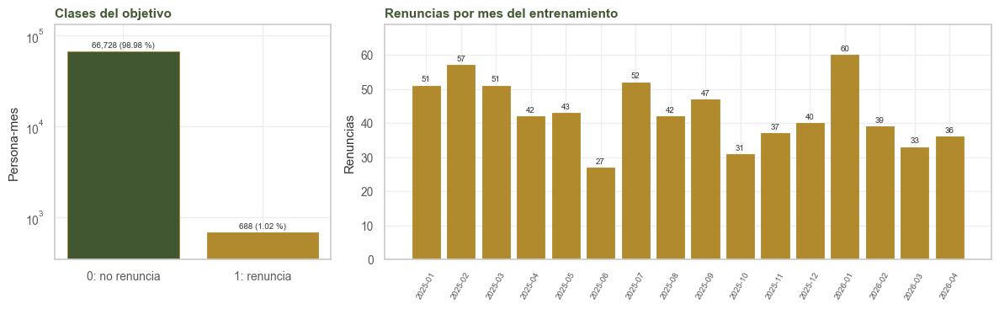
filas % y
evento
ninguno 66256 98.28 0
renuncia 688 1.02 1
otra_salida 441 0.65 0
renuncia_administrativa 31 0.05 0
razón de desbalance: 1 renuncia por cada 97 filas sin renuncia
personas distintas que renuncian: 688 de 5,500
renuncias por mes: mínimo 27, mediana 42, máximo 60
tasa anual equivalente: 11.6 %
exactitud de "nadie renuncia": 98.98 %
otras salidas por tipo (y = 0 en su último mes):
tipo_retiro
despido 243
fin_de_contrato 181
otra 17
Nótese que la clase positiva son 688 de 67.416 filas (1,02 %): una renuncia por cada 97 filas sin renuncia. Las 688 renuncias son de 688 personas distintas, de las 5.500 del entrenamiento, así que nadie renuncia dos veces en el periodo. Una tasa mensual de 1,02 % equivale a que cerca de una de cada nueve personas (11,6 %) renuncie en un año. Por mes hay entre 27 y 60 renuncias, con mediana de 42. Las 441 otras salidas (243 despidos, 181 fines de contrato y 17 de otro tipo) y las 31 renuncias administrativas (renuncias registradas tras las cuales la persona sigue en el grupo, capítulo 1) cuentan como \(y = 0\).
Implicaciones para la métrica y la validación
La exactitud no sirve. Predecir que nadie renuncia acierta el 98,98 % de las filas y no identifica ninguna renuncia.
Métrica principal: PR-AUC (precisión promedio). Se concentra en la clase positiva y su piso es la prevalencia (0,0102): un modelo que ordena al azar obtiene 0,0102, y cualquier ganancia se lee como múltiplo de ese piso. La ROC-AUC se reporta como complemento, porque con 97 negativos por positivo premia ordenar bien la gran masa de negativos.
Métrica operativa: captura en el 10 % de mayor riesgo de cada mes, la fracción de las renuncias del mes que caen en la lista que se revisaría. Al azar vale 10 %.
Validación. Con unas 42 renuncias por mes, un mes de validación da una PR-AUC muy ruidosa; por eso se promedian los ocho pliegues temporales (septiembre de 2025 a abril de 2026, capítulo 2) y las diferencias entre modelos se acompañan de intervalos bootstrap. La partición es cronológica, no estratificada: la prevalencia de cada pliegue la da el mes, y estratificar mezclaría meses. No se remuestrea (ni sobremuestreo ni SMOTE) en el EDA; el peso de las clases (
class_weight) se evalúa en el capítulo 7 dentro de la validación.
3.2. Análisis unidimensional#
3.2.1. Tipo y cardinalidad de las 105 predictoras#
def tipo(v):
if v in CAT:
return 'categórica ordinal' if v == 'nivel' else 'categórica nominal'
return _dic.tipo.get(v, 'numérica')
tipos = pd.DataFrame({
'bloque': [BLOQUE[v] for v in PREDICTORAS],
'tipo': [tipo(v) for v in PREDICTORAS],
'valores distintos': [tr[v].nunique() for v in PREDICTORAS],
'% nulos': [round(100 * tr[v].isna().mean(), 1) for v in PREDICTORAS],
}, index=pd.Index(PREDICTORAS, name='variable'))
resumen_tipos = pd.crosstab(tipos.bloque, tipos.tipo, margins=True, margins_name='total')
resumen_tipos
| tipo | binaria | categórica nominal | categórica ordinal | numérica continua | numérica discreta | total |
|---|---|---|---|---|---|---|
| bloque | ||||||
| arraigo | 1 | 0 | 0 | 0 | 6 | 7 |
| atributos | 3 | 12 | 1 | 0 | 2 | 18 |
| ausencias | 0 | 0 | 0 | 5 | 2 | 7 |
| contrato | 2 | 0 | 0 | 0 | 4 | 6 |
| ingreso_relativo | 2 | 0 | 0 | 9 | 2 | 13 |
| jornada | 3 | 2 | 0 | 20 | 2 | 27 |
| salario_relativo | 2 | 2 | 0 | 8 | 2 | 14 |
| trayectoria | 1 | 0 | 0 | 0 | 7 | 8 |
| vacaciones | 1 | 0 | 0 | 2 | 2 | 5 |
| total | 15 | 16 | 1 | 44 | 29 | 105 |
with pd.option_context('display.max_rows', 200):
display(tipos.assign(nombre=[nom(v) for v in tipos.index]))
Show code cell output
| variable | bloque | tipo | valores distintos | % nulos | nombre |
|---|---|---|---|---|---|
| edad | atributos | numérica discreta | 57 | 0.0 | edad |
| antig_meses | atributos | numérica discreta | 417 | 0.0 | antigüedad reconocida |
| primer_mes | atributos | binaria | 2 | 0.0 | primer mes |
| reingreso | atributos | binaria | 2 | 0.0 | reingreso |
| traslado_12m | atributos | binaria | 2 | 0.0 | traslado en 12 meses |
| sociedad | atributos | categórica nominal | 22 | 0.0 | sociedad |
| linea | atributos | categórica nominal | 6 | 0.0 | línea de negocio |
| ubicacion | atributos | categórica nominal | 57 | 0.0 | ubicación |
| genero | atributos | categórica nominal | 2 | 0.0 | género |
| estado_civil | atributos | categórica nominal | 4 | 0.0 | estado civil |
| contrato | atributos | categórica nominal | 2 | 0.0 | tipo de contrato |
| nivel | atributos | categórica ordinal | 6 | 0.0 | nivel del cargo |
| familia_cargo | atributos | categórica nominal | 17 | 2.5 | familia de cargo |
| oficio | atributos | categórica nominal | 41 | 2.5 | oficio |
| tipo_unidad | atributos | categórica nominal | 5 | 0.0 | tipo de unidad |
| area_funcional | atributos | categórica nominal | 14 | 0.0 | área funcional |
| proceso_planta | atributos | categórica nominal | 5 | 0.0 | proceso de planta |
| tipo_costos | atributos | categórica nominal | 3 | 0.0 | tipo de personal |
| meses_al_vencimiento | contrato | numérica discreta | 22 | 47.1 | meses al vencimiento del contrato |
| n_renovaciones | contrato | numérica discreta | 15 | 0.0 | renovaciones del contrato fijo |
| meses_desde_cambio_contrato | contrato | numérica discreta | 272 | 0.0 | meses desde el último cambio de contrato |
| fue_aprendiz | contrato | binaria | 2 | 0.0 | fue aprendiz |
| meses_desde_aprendiz | contrato | numérica discreta | 193 | 95.0 | meses desde el aprendizaje |
| ingreso_a_mitad | contrato | binaria | 2 | 0.0 | ingreso a mitad de mes |
| meses_en_posicion | trayectoria | numérica discreta | 196 | 0.0 | meses en la posición |
| meses_en_funcion | trayectoria | numérica discreta | 159 | 0.0 | meses en la función |
| meses_desde_ascenso | trayectoria | numérica discreta | 13 | 91.5 | meses desde el último ascenso |
| n_ascensos_24m | trayectoria | numérica discreta | 4 | 0.0 | ascensos en 24 meses |
| n_movimientos_laterales_12m | trayectoria | numérica discreta | 4 | 0.0 | movimientos laterales en 12 meses |
| es_jefe_formal | trayectoria | binaria | 2 | 0.0 | es jefe formal |
| personas_a_cargo | trayectoria | numérica discreta | 108 | 0.0 | personas a cargo |
| tamano_equipo_jefe | trayectoria | numérica discreta | 110 | 36.1 | tamaño del equipo del jefe |
| tipo_salario | salario_relativo | categórica nominal | 3 | 0.0 | tipo de salario |
| posicionamiento | salario_relativo | numérica continua | 900 | 38.8 | posicionamiento salarial |
| posicionamiento_local | salario_relativo | numérica continua | 993 | 34.4 | posicionamiento salarial local |
| gini_oficio_nivel | salario_relativo | numérica continua | 548 | 38.6 | Gini del oficio y nivel |
| privacion_oficio_nivel | salario_relativo | numérica continua | 2064 | 38.6 | privación relativa |
| residuo_sueldo | salario_relativo | numérica continua | 5744 | 34.3 | residuo del sueldo |
| en_mediana_local | salario_relativo | binaria | 2 | 34.4 | en la mediana local |
| dist_mediana_local | salario_relativo | numérica continua | 659 | 34.4 | distancia a la mediana local |
| gana_minimo | salario_relativo | binaria | 2 | 34.3 | gana el salario mínimo |
| var_sueldo_smmlv_12m | salario_relativo | numérica continua | 904 | 26.9 | variación del sueldo en mínimos (12 m) |
| situacion_minimo | salario_relativo | categórica nominal | 4 | 51.9 | situación frente al mínimo |
| meses_desde_aumento_merito | salario_relativo | numérica discreta | 198 | 44.9 | meses desde el último aumento por mérito |
| pct_ultimo_aumento_merito | salario_relativo | numérica continua | 388 | 44.9 | último aumento por mérito |
| n_aumentos_merito_24m | salario_relativo | numérica discreta | 6 | 0.0 | aumentos por mérito en 24 meses |
| estado_gestion_tiempos | jornada | categórica nominal | 3 | 2.3 | situación del control de tiempos |
| horas_extra_1m | jornada | numérica continua | 1328 | 9.8 | horas extra (mes anterior) |
| recargo_nocturno_1m | jornada | numérica continua | 2340 | 2.4 | recargo nocturno (mes anterior) |
| dominicales_1m | jornada | numérica continua | 1108 | 2.4 | dominicales y festivos (mes anterior) |
| sabados_smmlv_1m | jornada | numérica continua | 59 | 2.4 | recargo de sábados (mes anterior, mínimos) |
| horas_extra_3m | jornada | numérica continua | 2658 | 9.8 | horas extra (media 3 m) |
| recargo_nocturno_3m | jornada | numérica continua | 5083 | 2.4 | recargo nocturno (media 3 m) |
| dominicales_3m | jornada | numérica continua | 2681 | 2.4 | dominicales y festivos (media 3 m) |
| sabados_smmlv_3m | jornada | numérica continua | 57 | 2.4 | recargo de sábados (media 3 m, mínimos) |
| horas_extra_12m | jornada | numérica continua | 6122 | 9.8 | horas extra (media 12 m) |
| recargo_nocturno_12m | jornada | numérica continua | 10231 | 2.4 | recargo nocturno (media 12 m) |
| dominicales_12m | jornada | numérica continua | 6631 | 2.4 | dominicales y festivos (media 12 m) |
| sabados_smmlv_12m | jornada | numérica continua | 53 | 2.4 | recargo de sábados (media 12 m, mínimos) |
| meses_con_extras_12m | jornada | numérica discreta | 13 | 2.4 | meses con extras o recargos (12 m) |
| pct_meses_con_extras_12m | jornada | numérica continua | 47 | 2.4 | % de meses con extras (12 m) |
| elegible_horas_extra | jornada | binaria | 2 | 0.0 | elegible para horas extra |
| turnos_1m | jornada | numérica discreta | 32 | 43.4 | turnos marcados (mes anterior) |
| horas_turno_1m | jornada | numérica continua | 1273 | 46.0 | horas por turno (mes anterior) |
| horas_turno_3m | jornada | numérica continua | 1266 | 44.4 | horas por turno (3 m) |
| pct_turnos_10h_3m | jornada | numérica continua | 906 | 44.4 | % de turnos de 10 h o más (3 m) |
| pct_turnos_12h_3m | jornada | numérica continua | 887 | 44.4 | % de turnos de 12 h o más (3 m) |
| pct_turnos_nocturnos_3m | jornada | numérica continua | 496 | 44.4 | % de turnos nocturnos (3 m) |
| domingos_3m | jornada | numérica continua | 15 | 43.4 | domingos marcados por mes (3 m) |
| pct_entradas_sin_salida_3m | jornada | numérica continua | 838 | 43.4 | % de entradas sin salida (3 m) |
| marca_biometrico | jornada | binaria | 2 | 0.0 | marca en biométrico |
| jornada_vs_pago | jornada | categórica nominal | 9 | 44.4 | jornada frente a pago de extras |
| turnos_largos_sin_pago | jornada | binaria | 2 | 44.4 | turnos largos sin pago de extras |
| ingreso_vs_pactado_3m | ingreso_relativo | numérica continua | 2284 | 2.4 | ingreso frente al pactado (3 m) |
| pct_variable_3m | ingreso_relativo | numérica continua | 24879 | 2.5 | % variable del ingreso (3 m) |
| volatilidad_ingreso_12m | ingreso_relativo | numérica continua | 1154 | 12.1 | volatilidad del ingreso (12 m) |
| cambio_ingreso_3m_vs_9m | ingreso_relativo | numérica continua | 33678 | 17.5 | cambio del ingreso, 3 m frente a 9 m |
| meses_con_ausencia_pagada_12m | ingreso_relativo | numérica discreta | 13 | 2.4 | meses con ausencia pagada (12 m) |
| bono_fiesta_12m | ingreso_relativo | binaria | 2 | 2.4 | bono de fin de año (12 m) |
| bono_seleccionado_12m | ingreso_relativo | numérica continua | 132 | 2.4 | bono de fin de año adicional (12 m, mínimos) |
| bonif_ocasional_12m | ingreso_relativo | numérica continua | 80 | 2.4 | bonificación ocasional (12 m, mínimos) |
| meses_con_bpr_12m | ingreso_relativo | numérica discreta | 13 | 2.4 | meses con bonificación por resultado (12 m) |
| bono_productividad_12m | ingreso_relativo | numérica continua | 1704 | 2.4 | bono de productividad (12 m, mínimos) |
| bonificacion_otra_12m | ingreso_relativo | numérica continua | 3476 | 2.4 | otras bonificaciones (12 m, mínimos) |
| auxilio_educativo_12m | ingreso_relativo | binaria | 2 | 2.4 | auxilio educativo (12 m) |
| auxilios_3m | ingreso_relativo | numérica continua | 1354 | 2.4 | auxilios no salariales (media 3 m, mínimos) |
| dias_licencia_no_remunerada_3m_r2 | ausencias | numérica continua | 79 | 0.0 | días de licencia no remunerada (3 m, rezago 2) |
| dias_licencia_no_remunerada_12m_r2 | ausencias | numérica continua | 115 | 0.0 | días de licencia no remunerada (12 m, rezago 2) |
| licencias_no_remuneradas_12m | ausencias | numérica discreta | 39 | 0.0 | licencias no remuneradas (12 m) |
| dias_licencia_remunerada_12m | ausencias | numérica continua | 89 | 0.0 | días de licencia remunerada (12 m) |
| dias_capacitacion_12m | ausencias | numérica continua | 13 | 0.0 | días de capacitación (12 m) |
| dias_compensatorio_12m | ausencias | numérica continua | 55 | 0.0 | días compensatorios (12 m) |
| dia_familia_12m | ausencias | numérica discreta | 5 | 0.0 | días de la familia (12 m) |
| meses_desde_vacaciones | vacaciones | numérica discreta | 11 | 34.6 | meses desde las últimas vacaciones |
| dias_vacaciones_pendientes | vacaciones | numérica continua | 196 | 0.0 | vacaciones pendientes (días) |
| periodos_vacaciones_pendientes | vacaciones | numérica discreta | 8 | 0.0 | periodos de vacaciones pendientes |
| vacaciones_acumuladas_2p | vacaciones | binaria | 2 | 0.0 | dos periodos de vacaciones acumulados |
| dias_vacaciones_compensadas_12m | vacaciones | numérica continua | 67 | 0.0 | vacaciones compensadas en dinero (12 m) |
| nacido_en_depto_sede | arraigo | binaria | 2 | 24.1 | nacido en el departamento de la sede |
| postulaciones_internas_12m | arraigo | numérica discreta | 6 | 0.0 | postulaciones internas (12 m) |
| requisicion_promocion_12m | arraigo | numérica discreta | 5 | 0.0 | promociones por requisición (12 m) |
| meses_desde_postulacion | arraigo | numérica discreta | 100 | 88.6 | meses desde la última postulación |
| cesantias_vivienda_12m | arraigo | numérica discreta | 10 | 0.0 | retiros de cesantías para vivienda (12 m) |
| cesantias_educacion_12m | arraigo | numérica discreta | 6 | 0.0 | retiros de cesantías para educación (12 m) |
| cesantias_vivienda_historico | arraigo | numérica discreta | 14 | 0.0 | retiros de cesantías para vivienda (histórico) |
Nótese que de las 105 predictoras, 44 son numéricas continuas, 29 numéricas discretas (conteos y
meses), 15 binarias y 17 categóricas (16 nominales y una ordinal, el nivel del cargo). Entre las
categóricas está estado_gestion_tiempos, que viene como código numérico pero es una etiqueta (tres
valores) y se trata como categórica. Las cardinalidades de las categóricas van de 2 (género,
contrato) a 57 (ubicación). La tabla plegada da la de cada variable con su % de nulos: 63
predictoras tienen algún nulo, y en varias el nulo es
estructural, no un dato perdido (por ejemplo, meses_al_vencimiento es nulo exactamente en el
47,1 % de filas con contrato indefinido, que no vence). El tratamiento de los nulos se decide en la
síntesis.
3.2.2. Cómo se leen la asimetría y la curtosis#
La asimetría es el tercer momento estandarizado y la curtosis el cuarto. pandas reporta la
curtosis como exceso de Fisher (curtosis − 3), de modo que la normal vale 0, no 3. La lectura
del curso:
medida |
valor |
lectura |
|---|---|---|
asimetría |
|g₁| < 0,5 |
aproximadamente simétrica |
0,5 ≤ |g₁| ≤ 1 |
moderadamente asimétrica |
|
|g₁| > 1 |
muy asimétrica |
|
curtosis (exceso) |
≈ 0 |
mesocúrtica, colas como la normal |
> 0 |
leptocúrtica: pico agudo y colas pesadas |
|
< 0 |
platicúrtica: forma achatada, colas livianas |
Además, en este libro se marca como cola larga toda numérica no binaria cuya asimetría sigue siendo |g₁| > 2 después de recortarla a sus percentiles 1 y 99 (sobre los valores observados): es el criterio con el que los capítulos 4 y 7 deciden qué variables reciben el logaritmo con signo. Las tablas muestran también la asimetría cruda, como contexto.
3.2.3. Edad y antigüedad reconocida#
La antigüedad de este panel es la antigüedad reconocida por la empresa: meses desde la fecha de antigüedad del sistema de nómina, con continuidad en los traslados entre sociedades del grupo. No es la antigüedad del episodio en la sociedad actual, de la que difiere en cerca del 10 % de las filas. El diagrama de caja muestra los atípicos (puntos dorados, más allá de 1,5 × IQR).
def asim_recortada(x):
"""Asimetría de los valores observados después de recortarlos a sus percentiles 1 y 99: el criterio
del libro para el logaritmo con signo (el mismo del Pipeline del capítulo 7 y del capítulo 4).
Como en la clase Recorte del capítulo 7: si p1 = p99 no se recorta (quedaría constante) y la
asimetría es la de momentos, sin corrección por sesgo."""
x = pd.Series(x).dropna().to_numpy(float)
lo, hi = np.percentile(x, [1, 99])
if hi > lo:
x = np.clip(x, lo, hi)
return stats.skew(x, bias=True)
def descriptivos(v):
x = tr[v].dropna()
q = x.quantile([0.01, 0.05, 0.25, 0.5, 0.75, 0.95, 0.99])
iqr = q[0.75] - q[0.25]
return {
'n': len(x), '% nulos': 100 * tr[v].isna().mean(), 'media': x.mean(), 'desv.': x.std(),
'p1': q[0.01], 'p5': q[0.05], 'p25': q[0.25], 'mediana': q[0.5], 'p75': q[0.75],
'p95': q[0.95], 'p99': q[0.99], 'IQR': iqr,
'asimetría': x.skew(), 'asimetría tras p1-p99': asim_recortada(x),
'curtosis (exceso)': x.kurt(), '% ceros': 100 * (x == 0).mean(),
'% fuera 1,5×IQR': 100 * ((x < q[0.25] - 1.5 * iqr) | (x > q[0.75] + 1.5 * iqr)).mean(),
}
fig, ax = plt.subplots(2, 2, figsize=(11, 5.5), gridspec_kw={'height_ratios': [3, 1.2]})
for i, v in enumerate(NUM_BASE):
sns.histplot(tr[v], bins=40, ax=ax[0, i], color=VERDE, **BORDE)
ax[0, i].set(title=f'Distribución de la {nom(v)}', xlabel='', ylabel='Persona-mes')
sns.boxplot(x=tr[v], ax=ax[1, i], color=GRIS_CL, showfliers=True,
flierprops=dict(marker='o', ms=2, mfc=ORO, mec=ORO, alpha=0.5))
ax[1, i].set(xlabel=UNIDAD[v])
plt.tight_layout()
plt.show()
filas = {}
for v in NUM_BASE:
d = descriptivos(v)
k2, p_norm = stats.normaltest(tr[v].dropna())
d.update({"D'Agostino K²": k2, 'p normalidad': p_norm})
filas[v] = d
pd.DataFrame(filas).T.drop(columns=['% ceros']).round(2)
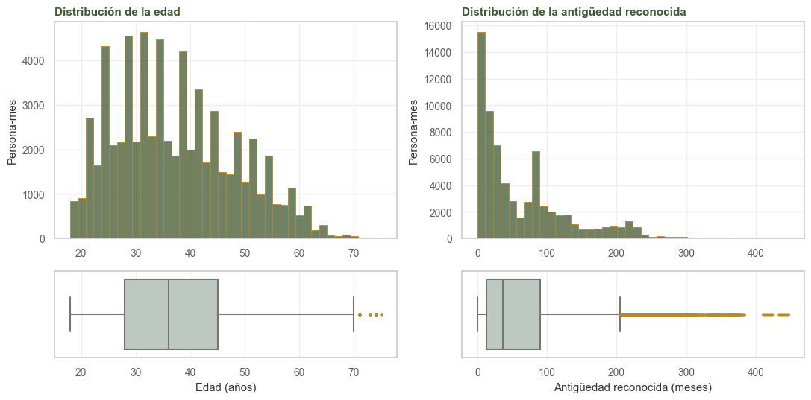
| n | % nulos | media | desv. | p1 | p5 | p25 | mediana | p75 | p95 | p99 | IQR | asimetría | asimetría tras p1-p99 | curtosis (exceso) | % fuera 1,5×IQR | D'Agostino K² | p normalidad | |
|---|---|---|---|---|---|---|---|---|---|---|---|---|---|---|---|---|---|---|
| edad | 67416.0 | 0.0 | 37.34 | 11.03 | 19.0 | 22.0 | 28.0 | 36.0 | 45.0 | 57.0 | 63.0 | 17.0 | 0.45 | 0.41 | -0.56 | 0.08 | 3861.05 | 0.0 |
| antig_meses | 67416.0 | 0.0 | 64.57 | 67.49 | 0.0 | 2.0 | 13.0 | 37.0 | 90.0 | 214.0 | 277.0 | 77.0 | 1.45 | 1.29 | 1.97 | 6.16 | 16497.51 | 0.0 |
Nótese que la edad es aproximadamente simétrica (asimetría 0,45) y platicúrtica (exceso −0,56): media 37,3 y mediana 36 años, IQR de 28 a 45 y solo 0,08 % de filas fuera de las vallas. La antigüedad reconocida es muy asimétrica a la derecha (1,45) y leptocúrtica (1,97): mediana de 37 meses frente a una media de 64,6, IQR de 13 a 90 meses, y un 6,2 % de filas por encima de la valla superior (más de unos 205 meses), que son personas de muchos años y no errores. Con la antigüedad nueva aparece esa cola. Ninguno de los atípicos se elimina: son valores reales. La asimetría de la antigüedad justifica transformarla (logaritmo o tramos, capítulo 7).
Normalidad con cautela
Con 67.416 filas cualquier desviación mínima de la normal resulta significativa, y la prueba de Shapiro-Wilk no se usa: su aproximación del valor p solo está validada hasta n = 5.000 y con muestras de este tamaño rechaza por potencia, no por forma. Se usa la prueba de D’Agostino-Pearson (combina asimetría y curtosis), y se lee junto con la forma de la distribución. En cualquier caso, la regresión logística no supone normalidad de las predictoras.
3.2.4. Binarias de atributos#
binarias = pd.DataFrame({v: tr[v].value_counts().sort_index() for v in BIN}).T
binarias.columns = ['0', '1']
binarias['% con 1'] = (100 * binarias['1'] / len(tr)).round(2)
binarias.index = [nom(v) for v in binarias.index]
binarias
| 0 | 1 | % con 1 | |
|---|---|---|---|
| primer mes | 65793 | 1623 | 2.41 |
| reingreso | 61949 | 5467 | 8.11 |
| traslado en 12 meses | 65606 | 1810 | 2.68 |
Nótese que las tres binarias de atributos son poco frecuentes: el primer mes de un episodio es el 2,4 % de las filas, los reingresos el 8,1 % y los traslados en los últimos 12 meses el 2,7 %. Su relación con el objetivo se ve con las demás binarias, en la sección de razones de tasa.
3.2.5. La historia laboral, bloque por bloque#
Para cada bloque, una tabla con los descriptivos de todas sus variables numéricas (media, desviación, percentiles, IQR, % de nulos, asimetría, curtosis, % de ceros y % fuera de las vallas de 1,5 × IQR) y un gráfico de las tres más asociadas con el objetivo en el entrenamiento (las de mayor \(|P(\text{sup}) - 0{,}5|\), sección 3.3.3). El histograma corta en el percentil 99 para que se vea la forma; el diagrama de caja muestra todos los valores, con los atípicos en dorado. Por privacidad no se publican mínimos ni máximos: los percentiles 1 y 99 hacen su papel.
def p_sup(v):
"""P(sup) = P(X de quien renuncia > X de quien no) + ½ P(empate) = U / (n1 n0), el AUC univariado."""
a = tr.loc[tr[OBJETIVO] == 1, v].dropna()
b = tr.loc[tr[OBJETIVO] == 0, v].dropna()
u, pv = stats.mannwhitneyu(a, b, alternative='two-sided')
return u / (len(a) * len(b)), pv, a, b
NUMB = NUM + BIN # numéricas de comun (86, con las binarias de la historia) + las 3 binarias de atributos
PSUP = {v: p_sup(v)[0] for v in NUMB}
CONTINUAS = [v for v in NUM if tr[v].dropna().nunique() > 2]
# binarias con menos de 5 renuncias en el valor 1: sus medidas de asociación permitirían reconstruir el conteo
CHICAS = [v for v in NUMB if v not in CONTINUAS and tr.loc[tr[v] == 1, OBJETIVO].sum() < 5]
def top_bloque(b, k=3):
vs = [v for v in BLOQUES[b] if v in CONTINUAS]
return sorted(vs, key=lambda v: -abs(PSUP[v] - 0.5))[:k]
def tabla_bloque(b):
vs = [v for v in BLOQUES[b] if v in NUM]
t = pd.DataFrame({v: descriptivos(v) for v in vs}).T
t.insert(0, 'tipo', [tipo(v) for v in vs])
t['cola larga'] = np.where((t['asimetría tras p1-p99'].abs() > 2) & (t.tipo != 'binaria'), 'sí', '')
t = t.drop(columns=['n', 'p5', 'p95'])
t.index = [f'{v}' for v in vs]
return t.round(2)
def figura_bloque(b):
vs = top_bloque(b)
fig, ax = plt.subplots(2, len(vs), figsize=(4 * len(vs), 4.2), squeeze=False,
gridspec_kw={'height_ratios': [3, 1.2]})
for i, v in enumerate(vs):
x = tr[v].dropna()
sns.histplot(x[x <= x.quantile(0.99)], bins=30, ax=ax[0, i], color=VERDE, **BORDE)
ax[0, i].set(title=f'{textwrap.shorten(nom(v), 40, placeholder="...")}\nP(sup) = {PSUP[v]:.3f}', xlabel='', ylabel='Persona-mes')
ax[0, i].title.set_fontsize(9)
sns.boxplot(x=x, ax=ax[1, i], color=GRIS_CL, showfliers=True,
flierprops=dict(marker='o', ms=2, mfc=ORO, mec=ORO, alpha=0.4))
ax[1, i].set(xlabel=v)
fig.suptitle(f'Bloque {b}: las {len(vs)} de mayor asociación con el objetivo', x=0.01, ha='left',
fontweight='bold', color=VERDE, fontsize=11)
plt.tight_layout()
plt.show()
3.2.5.1. Contrato#
display(tabla_bloque('contrato'))
figura_bloque('contrato')
| tipo | % nulos | media | desv. | p1 | p25 | mediana | p75 | p99 | IQR | asimetría | asimetría tras p1-p99 | curtosis (exceso) | % ceros | % fuera 1,5×IQR | cola larga | |
|---|---|---|---|---|---|---|---|---|---|---|---|---|---|---|---|---|
| meses_al_vencimiento | numérica discreta | 47.15 | 3.82 | 2.85 | 0.0 | 2.0 | 3.0 | 5.0 | 11.0 | 3.0 | 0.78 | 0.75 | 0.17 | 11.36 | 6.18 | |
| n_renovaciones | numérica discreta | 0.00 | 1.35 | 2.24 | 0.0 | 0.0 | 0.0 | 2.0 | 10.0 | 2.0 | 1.86 | 1.83 | 3.09 | 61.46 | 6.60 | |
| meses_desde_cambio_contrato | numérica discreta | 0.00 | 49.86 | 67.29 | 0.0 | 3.0 | 8.0 | 85.0 | 245.0 | 82.0 | 1.42 | 1.40 | 1.04 | 3.35 | 4.78 | |
| fue_aprendiz | binaria | 0.00 | 0.05 | 0.22 | 0.0 | 0.0 | 0.0 | 0.0 | 1.0 | 0.0 | 4.15 | 4.15 | 15.23 | 95.04 | 4.96 | |
| meses_desde_aprendiz | numérica discreta | 95.04 | 69.76 | 54.13 | 2.0 | 27.0 | 48.0 | 109.0 | 184.0 | 82.0 | 0.70 | 0.70 | -0.79 | 0.00 | 0.00 | |
| ingreso_a_mitad | binaria | 0.00 | 0.02 | 0.15 | 0.0 | 0.0 | 0.0 | 0.0 | 1.0 | 0.0 | 6.40 | 6.40 | 39.00 | 97.73 | 2.27 |
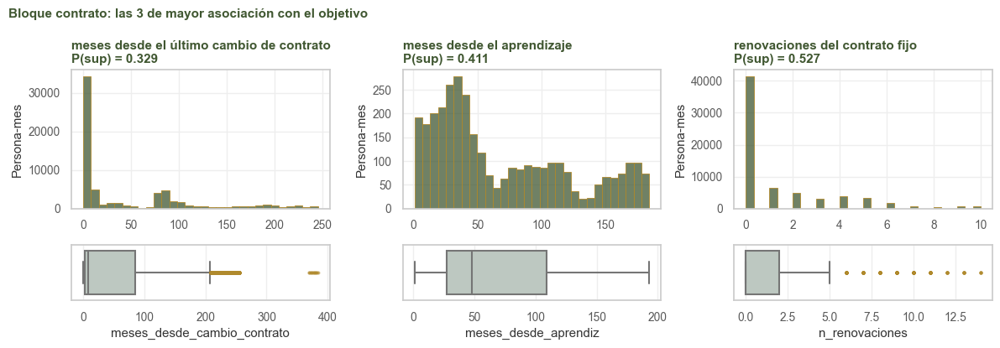
Nótese que el bloque de contrato no tiene colas largas entre sus numéricas, pero sí nulos
estructurales: meses_al_vencimiento solo existe en término fijo (mediana de 3 meses, IQR de 2 a 5)
y meses_desde_aprendiz solo en el 5 % que fue aprendiz. meses_desde_cambio_contrato es la más
asociada (P(sup) 0,329): tiene mediana de 8 meses pero media de 50, porque mezcla a quienes acaban de
renovar con los indefinidos antiguos. n_renovaciones es cero en el 61 % de las filas. Las dos
binarias fue_aprendiz (5 %) e ingreso_a_mitad (2 %) son muy desbalanceadas.
3.2.5.2. Trayectoria#
display(tabla_bloque('trayectoria'))
figura_bloque('trayectoria')
| tipo | % nulos | media | desv. | p1 | p25 | mediana | p75 | p99 | IQR | asimetría | asimetría tras p1-p99 | curtosis (exceso) | % ceros | % fuera 1,5×IQR | cola larga | |
|---|---|---|---|---|---|---|---|---|---|---|---|---|---|---|---|---|
| meses_en_posicion | numérica discreta | 0.00 | 45.74 | 47.27 | 1.0 | 10.0 | 26.0 | 79.0 | 191.0 | 69.0 | 1.35 | 1.34 | 1.19 | 0.00 | 2.76 | |
| meses_en_funcion | numérica discreta | 0.00 | 32.40 | 23.73 | 1.0 | 12.0 | 28.0 | 52.0 | 89.0 | 40.0 | 0.96 | 0.52 | 2.48 | 0.00 | 0.23 | |
| meses_desde_ascenso | numérica discreta | 91.48 | 9.83 | 3.69 | 0.0 | 8.0 | 12.0 | 12.0 | 12.0 | 4.0 | -1.48 | -1.48 | 0.74 | 3.17 | 5.92 | |
| n_ascensos_24m | numérica discreta | 0.00 | 0.06 | 0.25 | 0.0 | 0.0 | 0.0 | 0.0 | 1.0 | 0.0 | 4.77 | 4.07 | 25.14 | 94.88 | 5.12 | sí |
| n_movimientos_laterales_12m | numérica discreta | 0.00 | 0.03 | 0.17 | 0.0 | 0.0 | 0.0 | 0.0 | 1.0 | 0.0 | 6.21 | 5.75 | 41.74 | 97.22 | 2.78 | sí |
| es_jefe_formal | binaria | 0.00 | 0.00 | 0.07 | 0.0 | 0.0 | 0.0 | 0.0 | 0.0 | 0.0 | 15.04 | 15.04 | 224.33 | 99.56 | 0.44 | |
| personas_a_cargo | numérica discreta | 0.00 | 0.56 | 5.90 | 0.0 | 0.0 | 0.0 | 0.0 | 16.0 | 0.0 | 26.27 | 7.22 | 1054.37 | 96.05 | 3.95 | sí |
| tamano_equipo_jefe | numérica discreta | 36.08 | 57.19 | 72.86 | 1.0 | 14.0 | 29.0 | 76.0 | 323.0 | 62.0 | 2.38 | 2.38 | 5.48 | 0.00 | 6.21 | sí |
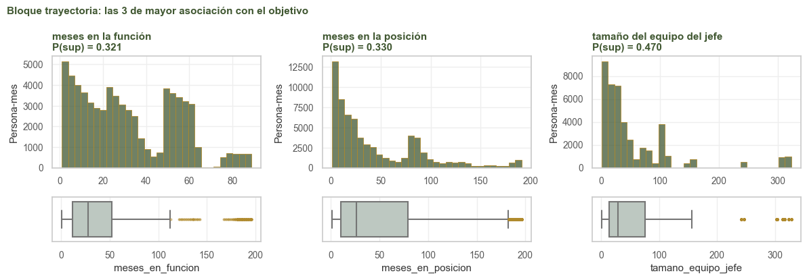
Nótese que los meses en la posición y en la función (medianas de 26 y 28 meses) son las más
asociadas del bloque y, como se verá en la sección bidimensional, repiten buena parte de la
antigüedad. El resto son variables de cola larga casi siempre en cero: ascensos (95 % de ceros),
movimientos laterales (97 %), jefatura formal (99,6 %) y personas a cargo (96 %, asimetría 26 y
curtosis de exceso de 1.054, la más extrema del bloque). meses_desde_ascenso es nulo en el 91,5 %
(quien no ha ascendido) y está topada en 12 meses. tamano_equipo_jefe tiene un 36 % de nulos y
una cola larga (p99 de 323 personas).
3.2.5.3. Salario relativo#
display(tabla_bloque('salario_relativo'))
figura_bloque('salario_relativo')
| tipo | % nulos | media | desv. | p1 | p25 | mediana | p75 | p99 | IQR | asimetría | asimetría tras p1-p99 | curtosis (exceso) | % ceros | % fuera 1,5×IQR | cola larga | |
|---|---|---|---|---|---|---|---|---|---|---|---|---|---|---|---|---|
| posicionamiento | numérica continua | 38.83 | 1.02 | 0.14 | 0.72 | 1.00 | 1.00 | 1.00 | 1.69 | 0.00 | 3.21 | 2.39 | 20.74 | 0.00 | 36.80 | sí |
| posicionamiento_local | numérica continua | 34.36 | 1.02 | 0.15 | 0.70 | 1.00 | 1.00 | 1.00 | 1.66 | 0.00 | 3.82 | 2.18 | 29.69 | 0.00 | 32.75 | sí |
| gini_oficio_nivel | numérica continua | 38.56 | 0.04 | 0.05 | 0.00 | 0.00 | 0.01 | 0.07 | 0.18 | 0.07 | 1.29 | 1.14 | 1.25 | 5.44 | 1.01 | |
| privacion_oficio_nivel | numérica continua | 38.56 | 0.04 | 0.07 | 0.00 | 0.00 | 0.01 | 0.05 | 0.31 | 0.05 | 2.69 | 2.21 | 9.67 | 11.08 | 8.62 | sí |
| residuo_sueldo | numérica continua | 34.35 | -0.00 | 0.11 | -0.31 | -0.02 | -0.01 | 0.02 | 0.37 | 0.04 | 0.54 | 0.56 | 13.78 | 1.44 | 20.42 | |
| en_mediana_local | binaria | 34.36 | 0.67 | 0.47 | 0.00 | 0.00 | 1.00 | 1.00 | 1.00 | 1.00 | -0.74 | -0.74 | -1.46 | 32.75 | 0.00 | |
| dist_mediana_local | numérica continua | 34.36 | 0.06 | 0.14 | 0.00 | 0.00 | 0.00 | 0.06 | 0.67 | 0.06 | 4.75 | 2.87 | 34.54 | 67.25 | 15.42 | sí |
| gana_minimo | binaria | 34.35 | 0.20 | 0.40 | 0.00 | 0.00 | 0.00 | 0.00 | 1.00 | 0.00 | 1.49 | 1.49 | 0.21 | 79.84 | 20.16 | |
| var_sueldo_smmlv_12m | numérica continua | 26.87 | 0.01 | 0.08 | -0.16 | 0.00 | 0.00 | 0.01 | 0.36 | 0.01 | 4.36 | 2.29 | 37.19 | 43.53 | 26.19 | sí |
| meses_desde_aumento_merito | numérica discreta | 44.94 | 22.64 | 50.17 | 0.00 | 3.00 | 7.00 | 13.00 | 205.00 | 10.00 | 3.04 | 3.04 | 7.65 | 8.83 | 11.62 | sí |
| pct_ultimo_aumento_merito | numérica continua | 44.94 | 0.10 | 0.12 | 0.03 | 0.05 | 0.10 | 0.10 | 0.49 | 0.05 | 20.86 | 3.21 | 839.54 | 0.00 | 6.77 | sí |
| n_aumentos_merito_24m | numérica discreta | 0.00 | 0.76 | 0.92 | 0.00 | 0.00 | 0.00 | 1.00 | 3.00 | 1.00 | 0.88 | 0.82 | -0.23 | 52.26 | 4.11 |
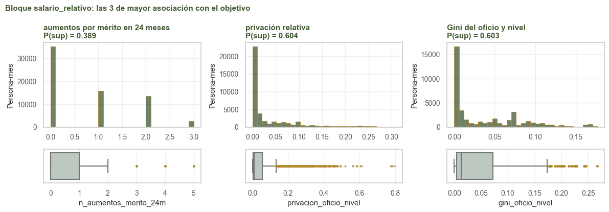
Nótese que el bloque salarial tiene un 34-39 % de nulos compartidos, y son estructurales: el
posicionamiento local es nulo exactamente en las filas con salario a destajo o integral, que no
tienen un sueldo básico comparable (el 86 % de las filas de banano), y siete de sus diez numéricas no
binarias con cola larga. El posicionamiento salarial vale 1 en la mitad central (IQR nulo): casi
todos ganan la tabla de su cargo, y lo que informa es la cola (p99 de 1,69). pct_ultimo_aumento_merito
es la más extrema (asimetría 20,9, curtosis 840). Las más asociadas con el objetivo son los aumentos
por mérito en 24 meses (P(sup) 0,389, quien renuncia ha tenido menos) y la privación relativa y el
Gini del oficio y nivel (0,604 y 0,603, más desigualdad en quienes renuncian).
3.2.5.4. Jornada#
with pd.option_context('display.max_rows', 60):
display(tabla_bloque('jornada'))
figura_bloque('jornada')
| tipo | % nulos | media | desv. | p1 | p25 | mediana | p75 | p99 | IQR | asimetría | asimetría tras p1-p99 | curtosis (exceso) | % ceros | % fuera 1,5×IQR | cola larga | |
|---|---|---|---|---|---|---|---|---|---|---|---|---|---|---|---|---|
| horas_extra_1m | numérica continua | 9.84 | 7.74 | 18.54 | 0.00 | 0.00 | 0.00 | 4.00 | 89.00 | 4.00 | 3.49 | 2.83 | 15.80 | 70.02 | 19.31 | sí |
| recargo_nocturno_1m | numérica continua | 2.41 | 14.91 | 25.92 | 0.00 | 0.00 | 0.00 | 19.50 | 104.85 | 19.50 | 2.35 | 1.92 | 6.85 | 56.87 | 10.58 | |
| dominicales_1m | numérica continua | 2.41 | 4.16 | 10.02 | 0.00 | 0.00 | 0.00 | 0.00 | 46.00 | 0.00 | 2.95 | 2.62 | 9.63 | 78.62 | 21.38 | sí |
| sabados_smmlv_1m | numérica continua | 2.41 | 0.00 | 0.00 | 0.00 | 0.00 | 0.00 | 0.00 | 0.02 | 0.00 | 14.18 | 7.15 | 512.46 | 97.67 | 2.33 | sí |
| horas_extra_3m | numérica continua | 9.84 | 7.67 | 16.96 | 0.00 | 0.00 | 0.00 | 5.67 | 80.50 | 5.67 | 3.26 | 2.63 | 14.14 | 61.64 | 17.82 | sí |
| recargo_nocturno_3m | numérica continua | 2.41 | 14.45 | 23.68 | 0.00 | 0.00 | 0.00 | 22.83 | 89.67 | 22.83 | 2.17 | 1.70 | 6.31 | 53.55 | 8.25 | |
| dominicales_3m | numérica continua | 2.41 | 4.18 | 9.10 | 0.00 | 0.00 | 0.00 | 2.67 | 38.67 | 2.67 | 2.45 | 2.36 | 5.40 | 72.63 | 18.97 | sí |
| sabados_smmlv_3m | numérica continua | 2.41 | 0.00 | 0.00 | 0.00 | 0.00 | 0.00 | 0.00 | 0.02 | 0.00 | 10.55 | 6.46 | 158.99 | 96.18 | 3.82 | sí |
| horas_extra_12m | numérica continua | 9.84 | 7.61 | 15.67 | 0.00 | 0.00 | 0.08 | 6.96 | 71.22 | 6.96 | 3.06 | 2.46 | 12.73 | 49.54 | 16.21 | sí |
| recargo_nocturno_12m | numérica continua | 2.41 | 14.02 | 22.22 | 0.00 | 0.00 | 0.10 | 22.50 | 83.64 | 22.50 | 2.11 | 1.65 | 6.44 | 48.76 | 7.63 | |
| dominicales_12m | numérica continua | 2.41 | 4.17 | 8.61 | 0.00 | 0.00 | 0.00 | 3.04 | 36.17 | 3.04 | 2.35 | 2.29 | 4.90 | 66.19 | 19.33 | sí |
| sabados_smmlv_12m | numérica continua | 2.41 | 0.00 | 0.00 | 0.00 | 0.00 | 0.00 | 0.00 | 0.01 | 0.00 | 11.12 | 6.43 | 189.28 | 93.67 | 6.33 | sí |
| meses_con_extras_12m | numérica discreta | 2.41 | 6.12 | 5.21 | 0.00 | 0.00 | 6.00 | 12.00 | 12.00 | 12.00 | -0.02 | -0.02 | -1.78 | 28.41 | 0.00 | |
| pct_meses_con_extras_12m | numérica continua | 2.41 | 55.86 | 44.09 | 0.00 | 0.00 | 75.00 | 100.00 | 100.00 | 100.00 | -0.24 | -0.24 | -1.76 | 28.41 | 0.00 | |
| elegible_horas_extra | binaria | 0.00 | 0.92 | 0.26 | 0.00 | 1.00 | 1.00 | 1.00 | 1.00 | 0.00 | -3.21 | -3.21 | 8.32 | 7.55 | 7.55 | |
| turnos_1m | numérica discreta | 43.43 | 17.06 | 7.92 | 0.00 | 12.00 | 20.00 | 23.00 | 28.00 | 11.00 | -0.82 | -0.82 | -0.45 | 4.49 | 0.00 | |
| horas_turno_1m | numérica continua | 45.97 | 8.96 | 1.85 | 1.91 | 7.90 | 8.67 | 10.12 | 12.71 | 2.22 | -0.75 | -0.56 | 3.67 | 0.00 | 2.50 | |
| horas_turno_3m | numérica continua | 44.40 | 8.95 | 1.80 | 2.13 | 7.96 | 8.71 | 10.09 | 12.56 | 2.13 | -0.84 | -0.61 | 3.87 | 0.00 | 2.59 | |
| pct_turnos_10h_3m | numérica continua | 44.40 | 33.77 | 35.36 | 0.00 | 0.00 | 18.60 | 70.00 | 100.00 | 70.00 | 0.58 | 0.58 | -1.26 | 27.11 | 0.00 | |
| pct_turnos_12h_3m | numérica continua | 44.40 | 12.19 | 22.57 | 0.00 | 0.00 | 0.00 | 12.70 | 94.80 | 12.70 | 2.17 | 2.15 | 3.97 | 53.19 | 14.78 | sí |
| pct_turnos_nocturnos_3m | numérica continua | 44.40 | 4.30 | 9.76 | 0.00 | 0.00 | 0.00 | 0.00 | 38.50 | 0.00 | 2.76 | 2.23 | 9.58 | 75.16 | 24.84 | sí |
| domingos_3m | numérica continua | 43.43 | 0.52 | 0.81 | 0.00 | 0.00 | 0.00 | 0.67 | 3.00 | 0.67 | 1.72 | 1.63 | 2.20 | 54.78 | 10.17 | |
| pct_entradas_sin_salida_3m | numérica continua | 43.43 | 13.29 | 21.83 | 0.00 | 1.30 | 4.30 | 13.90 | 100.00 | 12.60 | 2.45 | 2.45 | 5.63 | 23.69 | 12.57 | sí |
| marca_biometrico | binaria | 0.00 | 0.57 | 0.50 | 0.00 | 0.00 | 1.00 | 1.00 | 1.00 | 1.00 | -0.26 | -0.26 | -1.93 | 43.43 | 0.00 | |
| turnos_largos_sin_pago | binaria | 44.40 | 0.20 | 0.40 | 0.00 | 0.00 | 0.00 | 0.00 | 1.00 | 0.00 | 1.49 | 1.49 | 0.23 | 79.90 | 20.10 |
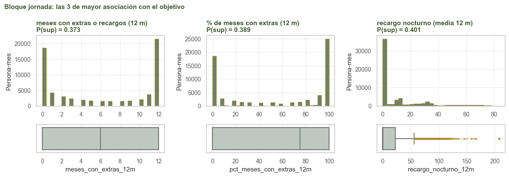
Nótese que la jornada es el bloque más grande (27 variables) y el de más colas largas (12 de 22 numéricas no binarias después del recorte; 15 con la asimetría cruda): horas extra, recargos y dominicales tienen de 49 % a 79 % de ceros y asimetrías de 2 a 3,5. Hay variables casi constantes: los recargos de sábado en mínimos son cero en más del 93 % de las filas. Las marcas biométricas (turnos, horas por turno, % de turnos largos o nocturnos) tienen un 43-46 % de nulos, que son exactamente las personas sin marcación biométrica. Las más asociadas no son montos sino frecuencias: los meses con extras o recargos en 12 meses (P(sup) 0,373) tienen una distribución en U, con 28 % de filas en 0 y otro tanto en 12, y quien renuncia está más cerca de 0, en parte porque lleva menos tiempo.
3.2.5.5. Ingreso relativo#
display(tabla_bloque('ingreso_relativo'))
figura_bloque('ingreso_relativo')
| tipo | % nulos | media | desv. | p1 | p25 | mediana | p75 | p99 | IQR | asimetría | asimetría tras p1-p99 | curtosis (exceso) | % ceros | % fuera 1,5×IQR | cola larga | |
|---|---|---|---|---|---|---|---|---|---|---|---|---|---|---|---|---|
| ingreso_vs_pactado_3m | numérica continua | 2.41 | 1.20 | 0.33 | 0.40 | 1.00 | 1.14 | 1.38 | 2.14 | 0.38 | 0.55 | 0.57 | 1.55 | 0.10 | 3.44 | |
| pct_variable_3m | numérica continua | 2.51 | 35.12 | 41.15 | 0.00 | 0.00 | 9.83 | 82.13 | 100.00 | 82.13 | 0.61 | 0.61 | -1.40 | 41.98 | 0.00 | |
| volatilidad_ingreso_12m | numérica continua | 12.07 | 0.20 | 0.17 | 0.02 | 0.11 | 0.18 | 0.28 | 0.77 | 0.17 | 6.48 | 1.37 | 79.02 | 0.58 | 1.58 | |
| cambio_ingreso_3m_vs_9m | numérica continua | 17.47 | 2.03 | 19.44 | -38.99 | -6.53 | 0.48 | 9.22 | 56.71 | 15.76 | 3.33 | 0.54 | 49.42 | 0.73 | 6.51 | |
| meses_con_ausencia_pagada_12m | numérica discreta | 2.41 | 3.37 | 2.49 | 0.00 | 2.00 | 3.00 | 5.00 | 11.00 | 3.00 | 0.93 | 0.88 | 0.82 | 11.66 | 2.72 | |
| bono_fiesta_12m | binaria | 2.41 | 0.02 | 0.15 | 0.00 | 0.00 | 0.00 | 0.00 | 1.00 | 0.00 | 6.17 | 6.17 | 36.07 | 97.56 | 2.44 | |
| bono_seleccionado_12m | numérica continua | 2.41 | 0.03 | 0.31 | 0.00 | 0.00 | 0.00 | 0.00 | 0.97 | 0.00 | 23.49 | 7.88 | 863.51 | 98.42 | 1.58 | sí |
| bonif_ocasional_12m | numérica continua | 2.41 | 0.01 | 0.20 | 0.00 | 0.00 | 0.00 | 0.00 | 0.00 | 0.00 | 33.88 | 33.88 | 1489.46 | 99.33 | 0.67 | sí |
| meses_con_bpr_12m | numérica discreta | 2.41 | 0.39 | 1.78 | 0.00 | 0.00 | 0.00 | 0.00 | 11.00 | 0.00 | 5.02 | 4.95 | 25.06 | 94.16 | 5.84 | sí |
| bono_productividad_12m | numérica continua | 2.41 | 0.13 | 0.92 | 0.00 | 0.00 | 0.00 | 0.00 | 3.91 | 0.00 | 13.40 | 7.72 | 256.00 | 88.06 | 11.94 | sí |
| bonificacion_otra_12m | numérica continua | 2.41 | 0.34 | 1.32 | 0.00 | 0.00 | 0.00 | 0.19 | 5.17 | 0.19 | 12.30 | 4.19 | 253.80 | 59.12 | 12.72 | sí |
| auxilio_educativo_12m | binaria | 2.41 | 0.01 | 0.09 | 0.00 | 0.00 | 0.00 | 0.00 | 0.00 | 0.00 | 10.54 | 10.54 | 109.04 | 99.12 | 0.88 | |
| auxilios_3m | numérica continua | 2.41 | 0.20 | 0.25 | 0.00 | 0.10 | 0.14 | 0.22 | 0.97 | 0.11 | 15.44 | 2.47 | 642.49 | 3.03 | 10.39 | sí |
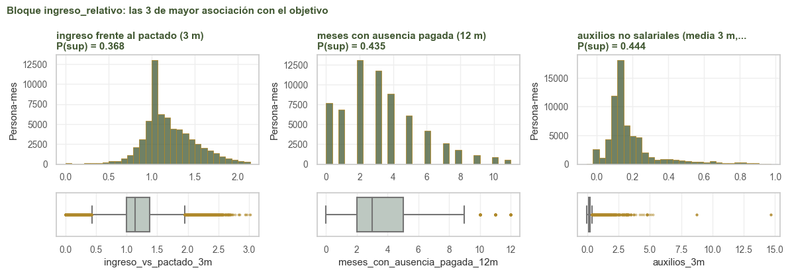
Nótese que el ingreso frente al pactado es la única variable del bloque aproximadamente simétrica (asimetría 0,55; mediana 1,14: se gana un 14 % sobre el pactado) y la más asociada con el objetivo (P(sup) 0,368: quien renuncia gana menos por encima de lo pactado). El resto son bonos y auxilios casi siempre en cero, con asimetrías de 5 a 34 y curtosis de hasta 1.489: son las colas más largas del libro. La volatilidad del ingreso (12 % de nulos) y el cambio del ingreso de 3 frente a 9 meses (17 %) tienen nulos por falta de historia.
3.2.5.6. Ausencias#
display(tabla_bloque('ausencias'))
figura_bloque('ausencias')
| tipo | % nulos | media | desv. | p1 | p25 | mediana | p75 | p99 | IQR | asimetría | asimetría tras p1-p99 | curtosis (exceso) | % ceros | % fuera 1,5×IQR | cola larga | |
|---|---|---|---|---|---|---|---|---|---|---|---|---|---|---|---|---|
| dias_licencia_no_remunerada_3m_r2 | numérica continua | 0.0 | 0.54 | 1.99 | 0.0 | 0.0 | 0.0 | 1.0 | 6.0 | 1.0 | 18.65 | 3.04 | 532.43 | 74.46 | 5.35 | sí |
| dias_licencia_no_remunerada_12m_r2 | numérica continua | 0.0 | 1.88 | 5.74 | 0.0 | 0.0 | 0.0 | 2.0 | 18.0 | 2.0 | 19.48 | 2.99 | 588.16 | 53.73 | 8.78 | sí |
| licencias_no_remuneradas_12m | numérica discreta | 0.0 | 1.38 | 2.55 | 0.0 | 0.0 | 0.0 | 2.0 | 12.0 | 2.0 | 3.99 | 2.50 | 26.66 | 53.59 | 5.91 | sí |
| dias_licencia_remunerada_12m | numérica continua | 0.0 | 1.82 | 3.77 | 0.0 | 0.0 | 0.0 | 3.0 | 15.0 | 3.0 | 9.27 | 2.36 | 202.08 | 54.43 | 4.37 | sí |
| dias_capacitacion_12m | numérica continua | 0.0 | 0.52 | 1.24 | 0.0 | 0.0 | 0.0 | 1.0 | 7.0 | 1.0 | 3.67 | 3.41 | 15.73 | 73.73 | 5.15 | sí |
| dias_compensatorio_12m | numérica continua | 0.0 | 0.87 | 2.88 | 0.0 | 0.0 | 0.0 | 0.0 | 15.0 | 0.0 | 4.89 | 3.72 | 30.91 | 85.72 | 14.28 | sí |
| dia_familia_12m | numérica discreta | 0.0 | 1.39 | 0.87 | 0.0 | 1.0 | 2.0 | 2.0 | 3.0 | 1.0 | -0.67 | -0.68 | -1.06 | 24.37 | 0.05 |
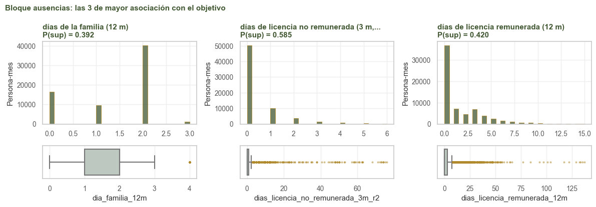
Nótese que el bloque de ausencias no tiene nulos (un mes sin licencia es un cero) y seis de sus siete variables tienen cola larga: las licencias no remuneradas llegan a asimetrías de 19 y curtosis de 588 con un p99 de 18 días en 12 meses. Es el bloque con más variables cuyo P(sup) está por encima de 0,5: quien renuncia acumula más días de licencia no remunerada en los tres meses previos (0,585). El día de la familia es la excepción: es simétrico, casi todos lo toman (mediana 2) y quien renuncia lo ha tomado menos (0,392), lo que de nuevo refleja en parte la antigüedad.
3.2.5.7. Vacaciones#
display(tabla_bloque('vacaciones'))
figura_bloque('vacaciones')
| tipo | % nulos | media | desv. | p1 | p25 | mediana | p75 | p99 | IQR | asimetría | asimetría tras p1-p99 | curtosis (exceso) | % ceros | % fuera 1,5×IQR | cola larga | |
|---|---|---|---|---|---|---|---|---|---|---|---|---|---|---|---|---|
| meses_desde_vacaciones | numérica discreta | 34.62 | 7.49 | 3.61 | 2.0 | 4.0 | 7.0 | 12.0 | 12.0 | 8.0 | -0.06 | -0.06 | -1.45 | 0.00 | 0.00 | |
| dias_vacaciones_pendientes | numérica continua | 0.00 | 10.77 | 14.24 | 0.0 | 0.0 | 0.0 | 15.0 | 60.0 | 15.0 | 1.56 | 1.36 | 2.84 | 50.99 | 6.00 | |
| periodos_vacaciones_pendientes | numérica discreta | 0.00 | 0.66 | 0.92 | 0.0 | 0.0 | 0.0 | 1.0 | 4.0 | 1.0 | 1.61 | 1.45 | 2.96 | 56.20 | 5.26 | |
| vacaciones_acumuladas_2p | binaria | 0.00 | 0.15 | 0.36 | 0.0 | 0.0 | 0.0 | 0.0 | 1.0 | 0.0 | 1.92 | 1.92 | 1.70 | 84.67 | 15.33 | |
| dias_vacaciones_compensadas_12m | numérica continua | 0.00 | 2.70 | 6.90 | 0.0 | 0.0 | 0.0 | 0.0 | 30.0 | 0.0 | 2.99 | 2.56 | 11.35 | 83.94 | 16.06 | sí |
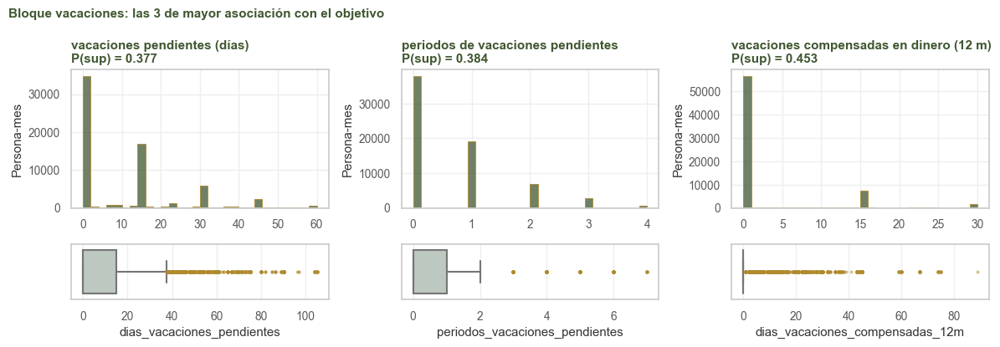
Nótese que la mitad de las filas no tiene vacaciones pendientes y que el 15 % acumula dos periodos. Los meses desde las últimas vacaciones son simétricos y están topados en 12, con un 35 % de nulos: quien aún no ha disfrutado vacaciones, sobre todo personas nuevas (mediana de antigüedad de 8 meses en los nulos frente a 82 en el resto). Las vacaciones compensadas en dinero son la única cola larga del bloque (asimetría 3). Las pendientes se asocian negativamente con la renuncia (P(sup) 0,377): para tener pendientes hay que haber cumplido un año.
3.2.5.8. Arraigo#
display(tabla_bloque('arraigo'))
figura_bloque('arraigo')
| tipo | % nulos | media | desv. | p1 | p25 | mediana | p75 | p99 | IQR | asimetría | asimetría tras p1-p99 | curtosis (exceso) | % ceros | % fuera 1,5×IQR | cola larga | |
|---|---|---|---|---|---|---|---|---|---|---|---|---|---|---|---|---|
| nacido_en_depto_sede | binaria | 24.06 | 0.64 | 0.48 | 0.0 | 0.0 | 1.0 | 1.0 | 1.0 | 1.0 | -0.59 | -0.59 | -1.66 | 35.96 | 0.00 | |
| postulaciones_internas_12m | numérica discreta | 0.00 | 0.05 | 0.25 | 0.0 | 0.0 | 0.0 | 0.0 | 1.0 | 0.0 | 6.65 | 4.71 | 57.73 | 96.03 | 3.97 | sí |
| requisicion_promocion_12m | numérica discreta | 0.00 | 0.05 | 0.26 | 0.0 | 0.0 | 0.0 | 0.0 | 1.0 | 0.0 | 5.68 | 4.37 | 38.37 | 95.46 | 4.54 | sí |
| meses_desde_postulacion | numérica discreta | 88.61 | 33.62 | 30.09 | 1.0 | 9.0 | 20.0 | 67.0 | 94.0 | 58.0 | 0.70 | 0.69 | -1.07 | 0.00 | 0.00 | |
| cesantias_vivienda_12m | numérica discreta | 0.00 | 0.40 | 0.56 | 0.0 | 0.0 | 0.0 | 1.0 | 2.0 | 1.0 | 1.44 | 0.97 | 5.70 | 63.57 | 0.18 | |
| cesantias_educacion_12m | numérica discreta | 0.00 | 0.03 | 0.19 | 0.0 | 0.0 | 0.0 | 0.0 | 1.0 | 0.0 | 9.02 | 6.60 | 100.49 | 97.85 | 2.15 | sí |
| cesantias_vivienda_historico | numérica discreta | 0.00 | 1.52 | 1.92 | 0.0 | 0.0 | 1.0 | 3.0 | 7.0 | 3.0 | 1.26 | 1.17 | 0.95 | 46.58 | 0.58 |
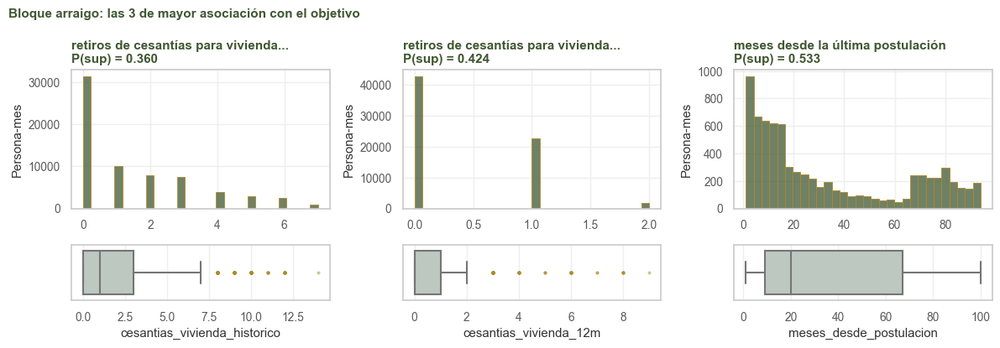
Nótese que el arraigo son sobre todo conteos pequeños: el 96 % no se postuló a una vacante interna en 12 meses y el 98 % no retiró cesantías para educación, ambas con cola larga. El retiro histórico de cesantías para vivienda es el más asociado (P(sup) 0,360; la mediana de quien renuncia es 0 frente a 1), otra vez con un componente de antigüedad. Haber nacido en el departamento de la sede vale 1 en el 64 % de las filas con dato y tiene un 24 % de nulos.
3.2.5.9. Colas largas y valores extremos en toda la historia#
todas = pd.concat([tabla_bloque(b).assign(bloque=b) for b in BLOQUES])
continuas_hist = todas[todas.tipo != 'binaria']
cola = continuas_hist[continuas_hist['asimetría tras p1-p99'].abs() > 2]
print(f'numéricas no binarias de la historia: {len(continuas_hist)} | |asimetría| > 2 cruda: '
f'{(continuas_hist["asimetría"].abs() > 2).sum()} | tras recorte p1-p99 (criterio del libro): {len(cola)} '
f'| con curtosis (exceso) > 10: {(continuas_hist["curtosis (exceso)"] > 10).sum()}')
print(f'mediana del % de ceros en las de cola larga: {cola["% ceros"].median():.0f} %')
normal = [stats.normaltest(tr[v].dropna())[1] for v in continuas_hist.index]
print(f"D'Agostino rechaza la normalidad al 1 % en {sum(p < 0.01 for p in normal)} de {len(normal)}")
resumen_cola = (continuas_hist.assign(larga=continuas_hist['asimetría tras p1-p99'].abs() > 2,
cruda=continuas_hist['asimetría'].abs() > 2)
.groupby('bloque').agg(numéricas=('larga', 'size'), asim_cruda_mayor_2=('cruda', 'sum'),
cola_larga_tras_recorte=('larga', 'sum'),
mediana_pct_ceros=('% ceros', 'median'),
mediana_pct_nulos=('% nulos', 'median')).round(1))
resumen_cola
numéricas no binarias de la historia: 71 | |asimetría| > 2 cruda: 44 | tras recorte p1-p99 (criterio del libro): 39 | con curtosis (exceso) > 10: 33
mediana del % de ceros en las de cola larga: 73 %
D'Agostino rechaza la normalidad al 1 % en 71 de 71
| bloque | numéricas | asim_cruda_mayor_2 | cola_larga_tras_recorte | mediana_pct_ceros | mediana_pct_nulos |
|---|---|---|---|---|---|
| arraigo | 6 | 3 | 3 | 79.5 | 0.0 |
| ausencias | 7 | 6 | 6 | 54.4 | 0.0 |
| contrato | 4 | 0 | 0 | 7.4 | 23.6 |
| ingreso_relativo | 11 | 8 | 6 | 42.0 | 2.4 |
| jornada | 22 | 15 | 12 | 54.2 | 6.1 |
| salario_relativo | 10 | 7 | 7 | 7.1 | 36.5 |
| trayectoria | 7 | 4 | 4 | 3.2 | 0.0 |
| vacaciones | 4 | 1 | 1 | 53.6 | 0.0 |
Nótese que de las 71 numéricas no binarias de la historia, 44 tienen |asimetría| > 2 en crudo y 39 la conservan después del recorte p1-p99: esas 39 son las de cola larga del libro. Las cinco que el recorte normaliza lo suficiente son los tres recargos nocturnos (1, 3 y 12 meses), la volatilidad del ingreso y el cambio del ingreso de 3 frente a 9 meses: su asimetría venía de unos pocos extremos, no de la masa de ceros. Además, 33 tienen una curtosis de exceso mayor que 10. No es ruido de medición: son conteos y montos que valen cero para la mayoría (mediana de 73 % de ceros en las de cola larga) y mucho para unos pocos. La prueba de D’Agostino rechaza la normalidad en las 71, como se esperaba con este n, así que la prueba no discrimina y lo que informa es la forma. Las colas largas se concentran en jornada (12 de 22), salario relativo (7 de 10), ingreso relativo (6 de 11) y ausencias (6 de 7); contrato no tiene ninguna. Los atípicos por la regla de 1,5 × IQR son en su mayoría valores reales (quien hizo muchas horas extra, quien tuvo una licencia larga) y no se eliminan.
Decisión para el capítulo 7: recorte y logaritmo con signo
Con estas colas, una logística sobre los valores crudos deja que unas pocas filas extremas fijen
el coeficiente, y la estandarización no lo arregla (la desviación la inflan los mismos extremos).
Por eso el preprocesamiento del modelo (i) recorta todas las numéricas no binarias a sus
percentiles 1 y 99, estimados en el entrenamiento de cada pliegue, y (ii) aplica a las que siguen
con |asimetría| > 2 después del recorte el logaritmo con signo, \(\operatorname{sign}(x)\log(1 + |x|)\),
que conserva el cero y el signo (hay variables negativas, como la variación del sueldo en mínimos).
En el entrenamiento completo son 39; la celda final del capítulo las lista. El Pipeline repite
la regla dentro de cada pliegue, con sus propias filas de ajuste.
3.2.6. Variables categóricas#
3.2.6.1. Frecuencias#
def personas_por_categoria(v):
return tr.groupby(tr[v].fillna('(nulo)'))['persona_id'].nunique()
filas = []
for v in CAT:
conteo = tr[v].fillna('(nulo)').value_counts()
per = personas_por_categoria(v)
filas.append({
'variable': v, 'bloque': BLOQUE[v], 'tipo': tipo(v), 'categorías': len(conteo),
'% nulos': round(100 * tr[v].isna().mean(), 1),
'más frecuente': conteo.index[0], '% más frecuente': round(100 * conteo.iloc[0] / len(tr), 1),
'cat. < 300 filas': int((conteo < 300).sum()),
'filas en esas cat.': int(conteo[conteo < 300].sum()),
'cat. < 5 personas': int((per < 5).sum()),
})
cat_resumen = pd.DataFrame(filas).set_index('variable')
cat_resumen
| variable | bloque | tipo | categorías | % nulos | más frecuente | % más frecuente | cat. < 300 filas | filas en esas cat. | cat. < 5 personas |
|---|---|---|---|---|---|---|---|---|---|
| sociedad | atributos | categórica nominal | 22 | 0.0 | S08 | 27.4 | 3 | 552 | 0 |
| linea | atributos | categórica nominal | 6 | 0.0 | palma | 71.1 | 0 | 0 | 0 |
| ubicacion | atributos | categórica nominal | 57 | 0.0 | U030 | 9.9 | 30 | 2469 | 12 |
| genero | atributos | categórica nominal | 2 | 0.0 | Masculino | 86.5 | 0 | 0 | 0 |
| estado_civil | atributos | categórica nominal | 5 | 0.0 | Union libre | 46.4 | 1 | 16 | 1 |
| contrato | atributos | categórica nominal | 2 | 0.0 | Termino Fijo | 52.9 | 0 | 0 | 0 |
| nivel | atributos | categórica ordinal | 7 | 0.0 | 1_operativo | 69.4 | 1 | 12 | 1 |
| familia_cargo | atributos | categórica nominal | 18 | 2.5 | agricola_campo | 52.9 | 1 | 115 | 0 |
| oficio | atributos | categórica nominal | 42 | 2.5 | operario_campo_general | 20.4 | 1 | 115 | 0 |
| tipo_unidad | atributos | categórica nominal | 6 | 0.0 | finca_palma | 48.4 | 1 | 18 | 1 |
| area_funcional | atributos | categórica nominal | 15 | 0.0 | no_aplica | 69.0 | 3 | 413 | 1 |
| proceso_planta | atributos | categórica nominal | 5 | 0.0 | no_aplica | 87.5 | 0 | 0 | 0 |
| tipo_costos | atributos | categórica nominal | 3 | 0.0 | OPERATIVO DIRECTO | 73.2 | 0 | 0 | 0 |
| tipo_salario | salario_relativo | categórica nominal | 3 | 0.0 | basico | 65.7 | 1 | 264 | 0 |
| situacion_minimo | salario_relativo | categórica nominal | 5 | 51.9 | (nulo) | 51.9 | 0 | 0 | 0 |
| estado_gestion_tiempos | jornada | categórica nominal | 4 | 2.3 | 9 | 82.3 | 1 | 15 | 1 |
| jornada_vs_pago | jornada | categórica nominal | 10 | 44.4 | (nulo) | 44.4 | 0 | 0 | 0 |
La tabla completa de frecuencias absolutas y relativas de las 17 categóricas está plegada debajo. Las categorías con menos de cinco personas distintas se agrupan en «otras (agrupadas)», ampliada con las categorías más pequeñas hasta reunir al menos cinco personas.
frec = []
for v in CAT:
x = agrupar(tr, v, min_ren=0)
assert tr.groupby(x).persona_id.nunique().min() >= 5, v
c = x.value_counts()
frec.append(pd.DataFrame({'variable': v, 'categoría': c.index, 'filas': c.values,
'%': (100 * c.values / len(tr)).round(2),
'% acumulado': (100 * c.values.cumsum() / len(tr)).round(1)}))
with pd.option_context('display.max_rows', 400):
display(pd.concat(frec).set_index(['variable', 'categoría']))
Show code cell output
| variable / categoría | filas | % | % acumulado | |
|---|---|---|---|---|
| sociedad | S08 | 18442 | 27.36 | 27.4 |
| S22 | 9561 | 14.18 | 41.5 | |
| S19 | 8472 | 12.57 | 54.1 | |
| S17 | 7033 | 10.43 | 64.5 | |
| S18 | 4891 | 7.25 | 71.8 | |
| S10 | 3746 | 5.56 | 77.3 | |
| S11 | 3430 | 5.09 | 82.4 | |
| S21 | 1933 | 2.87 | 85.3 | |
| S07 | 1796 | 2.66 | 88.0 | |
| S01 | 1308 | 1.94 | 89.9 | |
| S13 | 1268 | 1.88 | 91.8 | |
| S03 | 1262 | 1.87 | 93.7 | |
| S09 | 864 | 1.28 | 94.9 | |
| S14 | 613 | 0.91 | 95.9 | |
| S02 | 547 | 0.81 | 96.7 | |
| S20 | 503 | 0.75 | 97.4 | |
| S04 | 462 | 0.69 | 98.1 | |
| S15 | 397 | 0.59 | 98.7 | |
| S12 | 336 | 0.50 | 99.2 | |
| S05 | 256 | 0.38 | 99.6 | |
| S06 | 167 | 0.25 | 99.8 | |
| S16 | 129 | 0.19 | 100.0 | |
| linea | palma | 47927 | 71.09 | 71.1 |
| banano | 7162 | 10.62 | 81.7 | |
| industrial | 6160 | 9.14 | 90.9 | |
| transporte | 4143 | 6.15 | 97.0 | |
| puerto | 1411 | 2.09 | 99.1 | |
| ganaderia | 613 | 0.91 | 100.0 | |
| ubicacion | U030 | 6680 | 9.91 | 9.9 |
| U023 | 6202 | 9.20 | 19.1 | |
| U045 | 5822 | 8.64 | 27.7 | |
| U026 | 5699 | 8.45 | 36.2 | |
| U031 | 3728 | 5.53 | 41.7 | |
| U013 | 3460 | 5.13 | 46.9 | |
| U055 | 3457 | 5.13 | 52.0 | |
| U034 | 3154 | 4.68 | 56.7 | |
| U018 | 2986 | 4.43 | 61.1 | |
| U019 | 2767 | 4.10 | 65.2 | |
| U039 | 2704 | 4.01 | 69.2 | |
| U002 | 2386 | 3.54 | 72.7 | |
| U029 | 1943 | 2.88 | 75.6 | |
| U020 | 1883 | 2.79 | 78.4 | |
| U036 | 1877 | 2.78 | 81.2 | |
| U041 | 1454 | 2.16 | 83.4 | |
| U052 | 1430 | 2.12 | 85.5 | |
| U011 | 1292 | 1.92 | 87.4 | |
| U022 | 1068 | 1.58 | 89.0 | |
| U046 | 1001 | 1.48 | 90.5 | |
| U042 | 855 | 1.27 | 91.7 | |
| U006 | 668 | 0.99 | 92.7 | |
| U035 | 641 | 0.95 | 93.7 | |
| U054 | 582 | 0.86 | 94.5 | |
| U021 | 560 | 0.83 | 95.4 | |
| U053 | 338 | 0.50 | 95.9 | |
| U024 | 310 | 0.46 | 96.3 | |
| U033 | 288 | 0.43 | 96.8 | |
| U015 | 241 | 0.36 | 97.1 | |
| U004 | 216 | 0.32 | 97.4 | |
| otras (agrupadas) | 189 | 0.28 | 97.7 | |
| U040 | 168 | 0.25 | 98.0 | |
| U012 | 162 | 0.24 | 98.2 | |
| U051 | 153 | 0.23 | 98.4 | |
| U003 | 122 | 0.18 | 98.6 | |
| U057 | 117 | 0.17 | 98.8 | |
| U032 | 113 | 0.17 | 99.0 | |
| U005 | 104 | 0.15 | 99.1 | |
| U056 | 96 | 0.14 | 99.3 | |
| U048 | 92 | 0.14 | 99.4 | |
| U001 | 91 | 0.13 | 99.5 | |
| U047 | 87 | 0.13 | 99.7 | |
| U028 | 80 | 0.12 | 99.8 | |
| U044 | 79 | 0.12 | 99.9 | |
| U016 | 53 | 0.08 | 100.0 | |
| U025 | 18 | 0.03 | 100.0 | |
| genero | Masculino | 58319 | 86.51 | 86.5 |
| Femenino | 9097 | 13.49 | 100.0 | |
| estado_civil | Union libre | 31290 | 46.41 | 46.4 |
| Soltero | 25864 | 38.36 | 84.8 | |
| Casado | 6963 | 10.33 | 95.1 | |
| Otro + (nulo) | 3299 | 4.89 | 100.0 | |
| contrato | Termino Fijo | 35631 | 52.85 | 52.9 |
| Termino Indefinido | 31785 | 47.15 | 100.0 | |
| nivel | 1_operativo | 46802 | 69.42 | 69.4 |
| 2_auxiliar | 10310 | 15.29 | 84.7 | |
| 3_asistente | 6108 | 9.06 | 93.8 | |
| 4_coordinador | 2153 | 3.19 | 97.0 | |
| 5_jefe | 1169 | 1.73 | 98.7 | |
| 6_direccion_gerencia + (nulo) | 874 | 1.30 | 100.0 | |
| familia_cargo | agricola_campo | 35670 | 52.91 | 52.9 |
| planta_industrial | 7690 | 11.41 | 64.3 | |
| transporte_logistica | 4670 | 6.93 | 71.2 | |
| mantenimiento_tecnico | 3192 | 4.73 | 76.0 | |
| seguridad_fisica | 2295 | 3.40 | 79.4 | |
| finanzas_administracion | 1908 | 2.83 | 82.2 | |
| servicios_generales | 1904 | 2.82 | 85.0 | |
| maquinaria | 1885 | 2.80 | 87.8 | |
| (nulo) | 1663 | 2.47 | 90.3 | |
| calidad_laboratorio | 1431 | 2.12 | 92.4 | |
| operacion_sin_detalle | 1289 | 1.91 | 94.3 | |
| sst_ambiental | 886 | 1.31 | 95.6 | |
| ganaderia | 667 | 0.99 | 96.6 | |
| talento_humano | 628 | 0.93 | 97.6 | |
| tecnologia | 580 | 0.86 | 98.4 | |
| comercial_compras | 541 | 0.80 | 99.2 | |
| direccion_estrategia | 402 | 0.60 | 99.8 | |
| juridico | 115 | 0.17 | 100.0 | |
| oficio | operario_campo_general | 13734 | 20.37 | 20.4 |
| produccion_banano | 4412 | 6.54 | 26.9 | |
| cosecha | 4302 | 6.38 | 33.3 | |
| mantenimiento_cultivo | 4023 | 5.97 | 39.3 | |
| planta | 3882 | 5.76 | 45.0 | |
| polinizacion | 3869 | 5.74 | 50.8 | |
| conductor | 2310 | 3.43 | 54.2 | |
| guarda_de_seguridad | 1968 | 2.92 | 57.1 | |
| proteccion_cultivo | 1745 | 2.59 | 59.7 | |
| supervision_agricola | 1722 | 2.55 | 62.3 | |
| (nulo) | 1663 | 2.47 | 64.7 | |
| produccion | 1645 | 2.44 | 67.2 | |
| maquinaria | 1565 | 2.32 | 69.5 | |
| empaque | 1390 | 2.06 | 71.5 | |
| otro_transporte_logistica | 1305 | 1.94 | 73.5 | |
| otro_mantenimiento_tecnico | 1299 | 1.93 | 75.4 | |
| servicios_generales | 1278 | 1.90 | 77.3 | |
| mecanico | 1050 | 1.56 | 78.9 | |
| otro_finanzas_administracion | 1003 | 1.49 | 80.3 | |
| laboratorio | 978 | 1.45 | 81.8 | |
| riego_drenaje | 968 | 1.44 | 83.2 | |
| cargue | 962 | 1.43 | 84.7 | |
| administrativo | 905 | 1.34 | 86.0 | |
| otro_planta_industrial | 773 | 1.15 | 87.1 | |
| operaciones | 773 | 1.15 | 88.3 | |
| otro_ganaderia | 667 | 0.99 | 89.3 | |
| otro_operacion_sin_detalle | 638 | 0.95 | 90.2 | |
| otro_talento_humano | 628 | 0.93 | 91.2 | |
| otro_servicios_generales | 626 | 0.93 | 92.1 | |
| otro_tecnologia | 580 | 0.86 | 92.9 | |
| otro_comercial_compras | 541 | 0.80 | 93.8 | |
| censo | 467 | 0.69 | 94.4 | |
| sst | 461 | 0.68 | 95.1 | |
| otro_calidad_laboratorio | 453 | 0.67 | 95.8 | |
| otro_agricola_campo | 428 | 0.63 | 96.4 | |
| electricista | 426 | 0.63 | 97.1 | |
| otro_sst_ambiental | 425 | 0.63 | 97.7 | |
| mantenimiento | 417 | 0.62 | 98.3 | |
| otro_direccion_estrategia | 373 | 0.55 | 98.9 | |
| otro_seguridad_fisica | 327 | 0.49 | 99.4 | |
| otro_maquinaria | 320 | 0.47 | 99.8 | |
| otro_juridico | 115 | 0.17 | 100.0 | |
| tipo_unidad | finca_palma | 32597 | 48.35 | 48.4 |
| area_funcional | 20882 | 30.97 | 79.3 | |
| planta_industrial | 8103 | 12.02 | 91.3 | |
| finca_banano | 5247 | 7.78 | 99.1 | |
| hacienda_ganadera + (nulo) | 587 | 0.87 | 100.0 | |
| area_funcional | no_aplica | 46516 | 69.00 | 69.0 |
| transporte_logistica | 5890 | 8.74 | 77.7 | |
| mantenimiento_tecnico | 3034 | 4.50 | 82.2 | |
| seguridad_fisica | 3024 | 4.49 | 86.7 | |
| finanzas_administracion | 2389 | 3.54 | 90.3 | |
| servicios_generales | 1278 | 1.90 | 92.2 | |
| calidad_laboratorio | 1208 | 1.79 | 94.0 | |
| sst_ambiental | 1012 | 1.50 | 95.5 | |
| maquinaria | 942 | 1.40 | 96.9 | |
| comercial_compras | 608 | 0.90 | 97.8 | |
| talento_humano | 595 | 0.88 | 98.6 | |
| tecnologia | 507 | 0.75 | 99.4 | |
| direccion_estrategia | 299 | 0.44 | 99.8 | |
| juridico + (nulo) | 114 | 0.17 | 100.0 | |
| proceso_planta | no_aplica | 59009 | 87.53 | 87.5 |
| extraccion | 2720 | 4.03 | 91.6 | |
| servicios_y_otros | 2196 | 3.26 | 94.8 | |
| transformacion | 1851 | 2.75 | 97.6 | |
| empaque | 1640 | 2.43 | 100.0 | |
| tipo_costos | OPERATIVO DIRECTO | 49368 | 73.23 | 73.2 |
| OPERATIVO INDIRECTO | 14243 | 21.13 | 94.4 | |
| ADMINISTRATIVO | 3805 | 5.64 | 100.0 | |
| tipo_salario | basico | 44261 | 65.65 | 65.7 |
| destajo | 22891 | 33.95 | 99.6 | |
| integral | 264 | 0.39 | 100.0 | |
| situacion_minimo | (nulo) | 34960 | 51.86 | 51.9 |
| igual_o_subio | 17872 | 26.51 | 78.4 | |
| comprimida | 7155 | 10.61 | 89.0 | |
| ya_en_minimo | 6359 | 9.43 | 98.4 | |
| absorbida | 1070 | 1.59 | 100.0 | |
| estado_gestion_tiempos | 9 | 55503 | 82.33 | 82.3 |
| 1 | 10365 | 15.37 | 97.7 | |
| (nulo) + 0 | 1548 | 2.30 | 100.0 | |
| jornada_vs_pago | (nulo) | 29935 | 44.40 | 44.4 |
| cortos_no_cobra | 9428 | 13.98 | 58.4 | |
| largos_no_cobra | 7525 | 11.16 | 69.6 | |
| largos_cobra | 7242 | 10.74 | 80.3 | |
| cortos_cobra | 5484 | 8.13 | 88.4 | |
| algunos_largos_cobra | 3638 | 5.40 | 93.8 | |
| algunos_largos_no_cobra | 1252 | 1.86 | 95.7 | |
| largos_no_aplica | 1160 | 1.72 | 97.4 | |
| cortos_no_aplica | 1035 | 1.54 | 98.9 | |
| algunos_largos_no_aplica | 717 | 1.06 | 100.0 |
PRINCIPALES_CAT = ['linea', 'contrato', 'nivel', 'tipo_unidad', 'estado_civil', 'familia_cargo',
'tipo_salario', 'situacion_minimo', 'jornada_vs_pago']
fig, ax = plt.subplots(3, 3, figsize=(14, 10))
for a, v in zip(ax.ravel(), PRINCIPALES_CAT):
conteo = agrupar(tr, v, min_ren=0).value_counts()
barras = a.barh(conteo.index[::-1], conteo.values[::-1], color=VERDE, **BORDE)
etiquetar(a, barras, textos=[f'{n:,} ({100 * n / len(tr):.1f} %)' for n in conteo.values[::-1]],
fontsize=6)
a.set(title=nom(v).capitalize(), xlabel='Persona-mes')
a.tick_params(axis='y', labelsize=7)
plt.tight_layout()
plt.show()
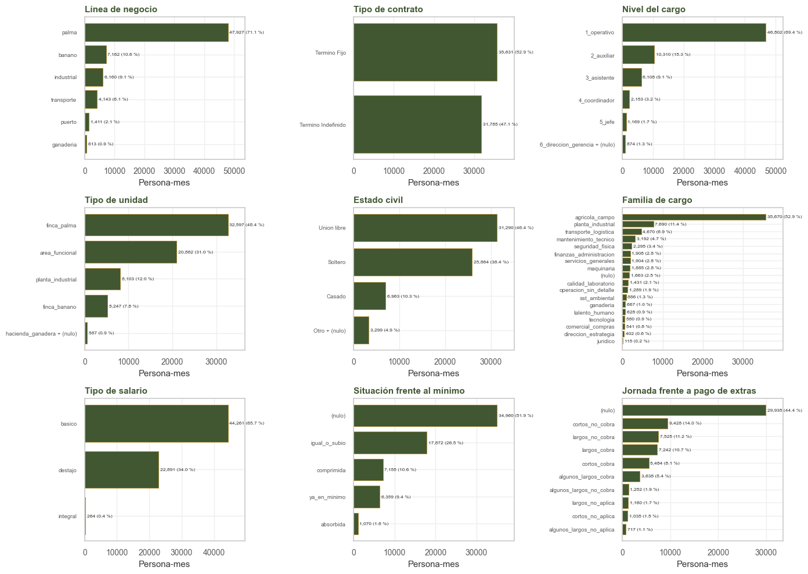
Nótese que las categóricas son muy desiguales: la línea de palma tiene el 71 % de las filas, el
personal operativo el 69 % y los hombres el 86,5 %. La ubicación es la de más categorías raras: 30
de sus 57 tienen menos de 300 filas (2.469 filas en total) y 12 tienen menos de cinco personas. En
oficio y familia_cargo solo hay una categoría pequeña (115 filas), porque los oficios poco
frecuentes ya se agruparon en otro_<familia> al construir el panel. Dos categóricas de la historia tienen nulos grandes y
estructurales: situacion_minimo (51,9 %: todo el destajo y el integral y parte del sueldo básico) y jornada_vs_pago
(44,4 %, las personas sin marcación biométrica).
Tratamiento de las categorías raras. Una categoría con menos de 300 filas tiene unas tres
renuncias esperadas y su tasa no se puede estimar. En el Pipeline se agrupan en una categoría de
infrecuentes (OneHotEncoder(min_frequency=300, handle_unknown='infrequent_if_exist')), que también
recibe las categorías que aparezcan por primera vez en validación o en test. El nulo se trata como
una categoría más, porque aquí casi siempre significa algo (no marca, no tiene sueldo básico, primer
mes).
3.3. Análisis bidimensional#
3.3.1. Numérica frente a numérica#
Se toman como principales la edad, la antigüedad reconocida y las diez numéricas no binarias de la historia con mayor asociación con el objetivo. Para cada par se calculan Pearson (relación lineal) y Spearman (relación monótona, sobre rangos) con los pares completos. La diferencia entre las dos se lee con la tabla del curso:
|Pearson − Spearman| |
lectura |
|---|---|
< 0,1 |
relación aproximadamente lineal |
0,1 a 0,2 |
no linealidad moderada o efecto de atípicos |
> 0,2 |
relación claramente no lineal, o dominada por atípicos o por la cola |
La matriz completa de correlaciones y el VIF quedan para el capítulo 4.
TOP_HIST = sorted([v for v in CONTINUAS if v not in NUM_BASE], key=lambda v: -abs(PSUP[v] - 0.5))[:10]
PRINC = NUM_BASE + TOP_HIST
rp = tr[PRINC].corr(method='pearson')
rs = tr[PRINC].corr(method='spearman')
pares = []
for i, a in enumerate(PRINC):
for b in PRINC[i + 1:]:
pares.append({'variable 1': a, 'variable 2': b, 'Pearson': rp.loc[a, b], 'Spearman': rs.loc[a, b]})
pares = pd.DataFrame(pares)
pares['|P − S|'] = (pares.Pearson - pares.Spearman).abs()
pares['lectura'] = pd.cut(pares['|P − S|'], [-1, 0.1, 0.2, 2],
labels=['aprox. lineal', 'moderada', 'no lineal / atípicos'])
print(f'{len(pares)} pares | lectura: {pares.lectura.value_counts().to_dict()}')
print(f'pares con |Spearman| > 0,7: {(pares.Spearman.abs() > 0.7).sum()}')
pares.sort_values('|P − S|', ascending=False).head(15).round(3)
66 pares | lectura: {'aprox. lineal': 52, 'moderada': 13, 'no lineal / atípicos': 1}
pares con |Spearman| > 0,7: 9
| variable 1 | variable 2 | Pearson | Spearman | |P − S| | lectura | |
|---|---|---|---|---|---|---|
| 11 | antig_meses | meses_en_funcion | 0.638 | 0.847 | 0.209 | no lineal / atípicos |
| 22 | meses_en_funcion | meses_en_posicion | 0.669 | 0.836 | 0.168 | moderada |
| 19 | antig_meses | n_aumentos_merito_24m | 0.083 | 0.241 | 0.158 | moderada |
| 21 | meses_en_funcion | meses_desde_cambio_contrato | 0.577 | 0.725 | 0.148 | moderada |
| 23 | meses_en_funcion | cesantias_vivienda_historico | 0.536 | 0.668 | 0.131 | moderada |
| 17 | antig_meses | dias_vacaciones_pendientes | 0.358 | 0.489 | 0.131 | moderada |
| 36 | meses_desde_cambio_contrato | n_aumentos_merito_24m | 0.082 | 0.207 | 0.125 | moderada |
| 43 | meses_en_posicion | n_aumentos_merito_24m | 0.061 | 0.181 | 0.121 | moderada |
| 16 | antig_meses | meses_con_extras_12m | 0.052 | 0.172 | 0.120 | moderada |
| 41 | meses_en_posicion | dias_vacaciones_pendientes | 0.327 | 0.445 | 0.118 | moderada |
| 14 | antig_meses | cesantias_vivienda_historico | 0.629 | 0.744 | 0.115 | moderada |
| 18 | antig_meses | periodos_vacaciones_pendientes | 0.328 | 0.440 | 0.112 | moderada |
| 40 | meses_en_posicion | meses_con_extras_12m | 0.137 | 0.245 | 0.108 | moderada |
| 38 | meses_en_posicion | cesantias_vivienda_historico | 0.535 | 0.637 | 0.102 | moderada |
| 42 | meses_en_posicion | periodos_vacaciones_pendientes | 0.318 | 0.416 | 0.098 | aprox. lineal |
Nótese que de los 66 pares, 52 tienen una relación aproximadamente lineal (|P − S| < 0,1), 13 una no linealidad moderada y uno es claramente no lineal: antigüedad reconocida y meses en la función (Pearson 0,64, Spearman 0,85). Casi siempre Spearman supera a Pearson: son relaciones monótonas pero curvas o con techo (los meses en la función no pasan de unos 90, la antigüedad sí). Nueve pares superan |Spearman| > 0,7, el umbral del curso para redundancia entre predictoras, y todos giran alrededor del tiempo en la empresa: antigüedad, meses en la posición y en la función, meses desde el último cambio de contrato y retiros históricos de cesantías para vivienda. Buena parte de lo que las variables de la historia dicen del objetivo es, entonces, antigüedad con otro nombre; el capítulo 4 lo cuantifica con el VIF.
masfuertes = (pares[pares['variable 1'].map(BLOQUE) != pares['variable 2'].map(BLOQUE)]
.assign(a=lambda d: d.Spearman.abs()).nlargest(2, 'a'))
parejas = [('edad', 'antig_meses')] + list(zip(masfuertes['variable 1'], masfuertes['variable 2']))
fig, ax = plt.subplots(1, 3, figsize=(15, 4.2))
for a, (u, w) in zip(ax, parejas):
d = tr[[u, w]].dropna()
d = d[(d[u] <= d[u].quantile(0.99)) & (d[w] <= d[w].quantile(0.99))]
hb = a.hexbin(d[u], d[w], gridsize=35, cmap='verde', mincnt=1, bins='log')
a.set(title=textwrap.fill(f'{nom(u)} frente a {nom(w)}', 45), xlabel=u, ylabel=w)
a.title.set_fontsize(9)
fig.colorbar(hb, ax=a, label='Persona-mes (log)')
a.text(0.02, 0.96, f'Pearson {rp.loc[u, w]:.2f} | Spearman {rs.loc[u, w]:.2f}',
transform=a.transAxes, fontsize=7, va='top', color=TINTA)
plt.tight_layout()
plt.show()
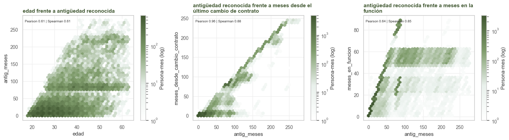
Nótese la forma de cada nube. Edad y antigüedad forman un triángulo (la antigüedad está acotada por la edad) con correlación 0,61, igual en Pearson y Spearman. La antigüedad reconocida y los meses desde el último cambio de contrato son casi la misma variable en los indefinidos (la diagonal: su último cambio fue el ingreso), con Pearson de 0,96; la nube de abajo son los de término fijo, que renuevan cada pocos meses. Los meses en la función crecen con la antigüedad hasta un techo, lo que explica la brecha entre Pearson (0,64) y Spearman (0,85).
3.3.2. Categórica frente a numérica#
Diferencias de las numéricas principales entre líneas de negocio, tipos de contrato, tipos de unidad, niveles y tipos de personal, con la prueba de Kruskal-Wallis (alternativa no paramétrica al ANOVA, apropiada porque las distribuciones son asimétricas). El tamaño del efecto es \(\varepsilon^2 = H / (n - 1)\), la fracción de la variabilidad de los rangos que explican los grupos. Los valores p de las pruebas se corrigen por Holm y por Benjamini-Hochberg dentro de la familia.
GRUPOS = ['linea', 'contrato', 'tipo_unidad', 'nivel', 'tipo_costos']
NUM_KW = NUM_BASE + TOP_HIST[:4]
filas = []
for v in NUM_KW:
for g in GRUPOS:
d = tr[[v, g]].dropna()
h, pv = stats.kruskal(*[x[v] for _, x in d.groupby(g)])
filas.append({'numérica': v, 'grupo': g, 'n': len(d), 'H': h, 'p': pv, 'ε²': h / (len(d) - 1)})
kw = pd.DataFrame(filas)
kw['p Holm'], kw['p BH'] = ajustar(kw.p)
kw_tabla = kw.pivot(index='numérica', columns='grupo', values='ε²').loc[NUM_KW, GRUPOS].round(3)
print(f'{len(kw)} pruebas de Kruskal-Wallis | significativas con Holm al 5 %: {(kw["p Holm"] < 0.05).sum()}')
print('ε² por numérica (filas) y grupo (columnas):')
kw_tabla
30 pruebas de Kruskal-Wallis | significativas con Holm al 5 %: 30
ε² por numérica (filas) y grupo (columnas):
| grupo | linea | contrato | tipo_unidad | nivel | tipo_costos |
|---|---|---|---|---|---|
| numérica | |||||
| edad | 0.010 | 0.270 | 0.005 | 0.025 | 0.004 |
| antig_meses | 0.016 | 0.605 | 0.002 | 0.025 | 0.004 |
| meses_en_funcion | 0.009 | 0.439 | 0.008 | 0.016 | 0.013 |
| meses_desde_cambio_contrato | 0.012 | 0.672 | 0.003 | 0.028 | 0.004 |
| meses_en_posicion | 0.010 | 0.415 | 0.011 | 0.012 | 0.009 |
| cesantias_vivienda_historico | 0.011 | 0.373 | 0.005 | 0.006 | 0.001 |
fig, ax = plt.subplots(1, 3, figsize=(15, 4))
sns.violinplot(data=tr, x='linea', y='edad', ax=ax[0], cut=0, color='#A3B8A9', inner='quartile')
ax[0].set(title='Edad por línea de negocio', xlabel='', ylabel='Edad (años)')
sns.violinplot(data=tr, x='contrato', y='antig_meses', ax=ax[1], cut=0, color='#A3B8A9', inner='quartile')
ax[1].set(title='Antigüedad reconocida por tipo de contrato', xlabel='', ylabel='Meses')
v3 = TOP_HIST[0]
d = tr[tr[v3] <= tr[v3].quantile(0.99)]
sns.boxplot(data=d, x='nivel', y=v3, ax=ax[2], color=GRIS_CL, order=sorted(d.nivel.dropna().unique()),
flierprops=dict(marker='o', ms=2, mfc=ORO, mec=ORO, alpha=0.4))
ax[2].set(title=f'{nom(v3)} por nivel (hasta el p99)', xlabel='', ylabel=v3)
ax[2].tick_params(axis='x', rotation=30, labelsize=7)
plt.tight_layout()
plt.show()
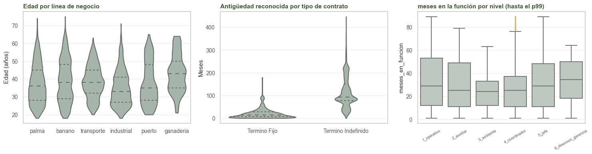
Nótese que las 30 pruebas son significativas después de Holm, como se espera con 67.416 filas, y que el tamaño del efecto separa dos situaciones. El tipo de contrato explica entre el 27 % (edad) y el 67 % (meses desde el último cambio de contrato) de la variabilidad de los rangos de las numéricas de tiempo, y el 61 % en la antigüedad reconocida: el término fijo agrupa sobre todo a personas nuevas y jóvenes, así que los efectos del contrato y de la antigüedad se superponen. Línea, tipo de unidad, nivel y tipo de personal explican todos menos del 3 % (ε² ≤ 0,028): diferencias muy significativas y de magnitud despreciable. Los violines lo muestran: la antigüedad del término fijo se concentra en los primeros meses y la del indefinido alrededor de siete a ocho años.
3.3.3. Predictoras numéricas frente al objetivo#
3.3.3.1. Mann-Whitney, P(sup) y correlación punto-biserial#
Para las 88 numéricas y binarias se compara la distribución entre quienes renuncian y quienes no con la prueba de Mann-Whitney. Como tamaño del efecto se reporta la probabilidad de superioridad
donde \(r\) es la correlación biserial de rangos. \(P(\text{sup})\) es exactamente el AUC de la variable usada sola como puntaje: 0,5 es no discriminar, 0,6 significa que en el 60 % de los pares (renuncia, no renuncia) quien renuncia tiene el valor mayor. Se prefiere a los umbrales de Cohen (0,1 / 0,3 / 0,5 para \(r\)), que fueron pensados para otras escalas y aquí no significan nada operativo. Por debajo de 0,5 la variable es menor en quienes renuncian. Se añade la correlación punto-biserial \(r_{pb}\) (Pearson entre la variable y el objetivo 0/1), sensible a los atípicos, y la tasa de renuncia entre las filas con la variable nula. Los 88 valores p se corrigen por Holm y por Benjamini-Hochberg.
filas = []
for v in NUMB:
ps, pv, a, b = p_sup(v)
nulo = tr[v].isna()
r_nulo = int(tr.loc[nulo, OBJETIVO].sum())
filas.append({
'variable': v, 'bloque': BLOQUE[v], 'tipo': tipo(v), '% nulos': 100 * nulo.mean(),
'mediana renuncia': a.median() if len(a) >= 5 else np.nan, 'mediana no renuncia': b.median(),
'r biserial rangos': 2 * ps - 1, 'P(sup)': ps,
'r punto-biserial': stats.pointbiserialr(tr.loc[~nulo, OBJETIVO], tr.loc[~nulo, v])[0],
'p': pv,
'tasa % si nulo': (100 * r_nulo / nulo.sum()) if nulo.sum() and r_nulo >= 5 else np.nan,
# si el grupo nulo es pequeño, la tasa de los no nulos lo delataría por resta
'tasa % si no nulo': (100 * tr.loc[~nulo, OBJETIVO].mean()
if (r_nulo >= 5 or not nulo.any()) and v not in CHICAS
else np.nan),
})
mw = pd.DataFrame(filas).set_index('variable')
mw['p Holm'], mw['p BH'] = ajustar(mw.p)
mw.loc[CHICAS, ['P(sup)', 'r biserial rangos', 'r punto-biserial', 'p', 'p Holm', 'p BH']] = np.nan # privacidad
mw['|P(sup) − 0,5|'] = (mw['P(sup)'] - 0.5).abs()
mw = mw.sort_values('|P(sup) − 0,5|', ascending=False)
print(f'{len(mw)} pruebas | significativas con Holm al 5 %: {(mw["p Holm"] < 0.05).sum()} | '
f'con BH al 5 %: {(mw["p BH"] < 0.05).sum()}')
print(f'P(sup) fuera de [0,45; 0,55]: {(mw["|P(sup) − 0,5|"] > 0.05).sum()} | '
f'fuera de [0,40; 0,60]: {(mw["|P(sup) − 0,5|"] > 0.10).sum()}')
col_mw = ['bloque', '% nulos', 'mediana renuncia', 'mediana no renuncia', 'P(sup)', 'r biserial rangos',
'r punto-biserial', 'p Holm', 'p BH', 'tasa % si nulo', 'tasa % si no nulo']
mw[col_mw].head(20).round(3)
88 pruebas | significativas con Holm al 5 %: 43 | con BH al 5 %: 56
P(sup) fuera de [0,45; 0,55]: 36 | fuera de [0,40; 0,60]: 15
| variable | bloque | % nulos | mediana renuncia | mediana no renuncia | P(sup) | r biserial rangos | r punto-biserial | p Holm | p BH | tasa % si nulo | tasa % si no nulo |
|---|---|---|---|---|---|---|---|---|---|---|---|
| antig_meses | atributos | 0.000 | 13.000 | 38.000 | 0.302 | -0.397 | -0.057 | 0.0 | 0.000 | NaN | 1.021 |
| meses_en_funcion | trayectoria | 0.000 | 13.000 | 28.000 | 0.321 | -0.357 | -0.057 | 0.0 | 0.000 | NaN | 1.021 |
| meses_desde_cambio_contrato | contrato | 0.000 | 4.000 | 8.000 | 0.329 | -0.342 | -0.052 | 0.0 | 0.000 | NaN | 1.021 |
| meses_en_posicion | trayectoria | 0.000 | 11.000 | 26.000 | 0.330 | -0.340 | -0.053 | 0.0 | 0.000 | NaN | 1.021 |
| edad | atributos | 0.000 | 30.000 | 36.000 | 0.339 | -0.322 | -0.053 | 0.0 | 0.000 | NaN | 1.021 |
| cesantias_vivienda_historico | arraigo | 0.000 | 0.000 | 1.000 | 0.360 | -0.280 | -0.046 | 0.0 | 0.000 | NaN | 1.021 |
| ingreso_vs_pactado_3m | ingreso_relativo | 2.413 | 1.012 | 1.137 | 0.368 | -0.263 | -0.042 | 0.0 | 0.000 | 1.659 | 1.005 |
| meses_con_extras_12m | jornada | 2.407 | 1.000 | 6.000 | 0.373 | -0.255 | -0.048 | 0.0 | 0.000 | 1.664 | 1.005 |
| dias_vacaciones_pendientes | vacaciones | 0.000 | 0.000 | 0.000 | 0.377 | -0.245 | -0.044 | 0.0 | 0.000 | NaN | 1.021 |
| periodos_vacaciones_pendientes | vacaciones | 0.000 | 0.000 | 0.000 | 0.384 | -0.231 | -0.044 | 0.0 | 0.000 | NaN | 1.021 |
| n_aumentos_merito_24m | salario_relativo | 0.000 | 0.000 | 0.000 | 0.389 | -0.222 | -0.042 | 0.0 | 0.000 | NaN | 1.021 |
| pct_meses_con_extras_12m | jornada | 2.407 | 16.700 | 75.000 | 0.389 | -0.221 | -0.042 | 0.0 | 0.000 | 1.664 | 1.005 |
| dia_familia_12m | ausencias | 0.000 | 1.000 | 2.000 | 0.392 | -0.217 | -0.042 | 0.0 | 0.000 | NaN | 1.021 |
| privacion_oficio_nivel | salario_relativo | 38.559 | 0.030 | 0.008 | 0.604 | 0.209 | 0.027 | 0.0 | 0.000 | 1.400 | 0.782 |
| gini_oficio_nivel | salario_relativo | 38.559 | 0.047 | 0.013 | 0.603 | 0.206 | 0.025 | 0.0 | 0.000 | 1.400 | 0.782 |
| recargo_nocturno_12m | jornada | 2.407 | 0.000 | 0.167 | 0.401 | -0.199 | -0.026 | 0.0 | 0.000 | 1.664 | 1.005 |
| var_sueldo_smmlv_12m | salario_relativo | 26.866 | 0.000 | 0.000 | 0.404 | -0.192 | -0.015 | 0.0 | 0.000 | 1.905 | 0.696 |
| meses_desde_aprendiz | contrato | 95.044 | 36.500 | 48.000 | 0.411 | -0.177 | -0.028 | 1.0 | 0.154 | 1.033 | 0.778 |
| dias_licencia_no_remunerada_3m_r2 | ausencias | 0.000 | 0.000 | 0.000 | 0.585 | 0.171 | 0.048 | 0.0 | 0.000 | NaN | 1.021 |
| recargo_nocturno_3m | jornada | 2.407 | 0.000 | 0.000 | 0.415 | -0.171 | -0.024 | 0.0 | 0.000 | 1.664 | 1.005 |
Nótese que la antigüedad reconocida es la numérica más discriminante (P(sup) 0,302: en el 70 % de los pares, quien renuncia lleva menos tiempo; mediana de 13 frente a 38 meses) y que las siguientes son también variables de tiempo: meses en la función (0,321), meses desde el último cambio de contrato (0,329), meses en la posición (0,330) y edad (0,339; mediana de 30 frente a 36 años). Después vienen señales que no son antigüedad: quien renuncia gana menos por encima de lo pactado (ingreso frente al pactado, 0,368), ha tenido menos meses con extras (0,373), menos aumentos por mérito (0,389), está en oficios y niveles con más desigualdad salarial (privación relativa 0,604) y ha tomado más días de licencia no remunerada en los tres meses previos (0,585).
De las 88 pruebas, 43 son significativas con Holm y 56 con BH, pero solo 15 variables tienen un P(sup) fuera de [0,40; 0,60]: las demás, aunque significativas, discriminan poco solas. La correlación punto-biserial es pequeña en todas (|r_pb| ≤ 0,06) porque con un objetivo tan raro su máximo posible es bajo, y es sensible a las colas; por eso se ordena por P(sup). La tasa entre los nulos también informa: en las variables de nómina el nulo es el primer mes del episodio (1,66 % frente a 1,00 %), en las salariales es el destajo (1,40 % frente a 0,78 %) y en las de marcación es no marcar (0,63 % frente a 1,33 %). El nulo no es aleatorio y merece su indicador.
La tabla con las 88 está plegada debajo. Las dos binarias con menos de cinco renuncias en el valor
1 (es_jefe_formal, auxilio_educativo_12m) no publican sus medidas de asociación, que permitirían
reconstruir el conteo; lo mismo en la tabla de información mutua.
with pd.option_context('display.max_rows', 100):
display(mw[col_mw].round(4))
Show code cell output
| variable | bloque | % nulos | mediana renuncia | mediana no renuncia | P(sup) | r biserial rangos | r punto-biserial | p Holm | p BH | tasa % si nulo | tasa % si no nulo |
|---|---|---|---|---|---|---|---|---|---|---|---|
| antig_meses | atributos | 0.0000 | 13.0000 | 38.0000 | 0.3015 | -0.3969 | -0.0569 | 0.0000 | 0.0000 | NaN | 1.0205 |
| meses_en_funcion | trayectoria | 0.0000 | 13.0000 | 28.0000 | 0.3215 | -0.3571 | -0.0572 | 0.0000 | 0.0000 | NaN | 1.0205 |
| meses_desde_cambio_contrato | contrato | 0.0000 | 4.0000 | 8.0000 | 0.3289 | -0.3422 | -0.0518 | 0.0000 | 0.0000 | NaN | 1.0205 |
| meses_en_posicion | trayectoria | 0.0000 | 11.0000 | 26.0000 | 0.3299 | -0.3401 | -0.0530 | 0.0000 | 0.0000 | NaN | 1.0205 |
| edad | atributos | 0.0000 | 30.0000 | 36.0000 | 0.3389 | -0.3223 | -0.0535 | 0.0000 | 0.0000 | NaN | 1.0205 |
| cesantias_vivienda_historico | arraigo | 0.0000 | 0.0000 | 1.0000 | 0.3598 | -0.2803 | -0.0465 | 0.0000 | 0.0000 | NaN | 1.0205 |
| ingreso_vs_pactado_3m | ingreso_relativo | 2.4134 | 1.0120 | 1.1370 | 0.3683 | -0.2633 | -0.0423 | 0.0000 | 0.0000 | 1.6595 | 1.0047 |
| meses_con_extras_12m | jornada | 2.4074 | 1.0000 | 6.0000 | 0.3727 | -0.2546 | -0.0479 | 0.0000 | 0.0000 | 1.6636 | 1.0047 |
| dias_vacaciones_pendientes | vacaciones | 0.0000 | 0.0000 | 0.0000 | 0.3774 | -0.2452 | -0.0445 | 0.0000 | 0.0000 | NaN | 1.0205 |
| periodos_vacaciones_pendientes | vacaciones | 0.0000 | 0.0000 | 0.0000 | 0.3845 | -0.2311 | -0.0436 | 0.0000 | 0.0000 | NaN | 1.0205 |
| n_aumentos_merito_24m | salario_relativo | 0.0000 | 0.0000 | 0.0000 | 0.3890 | -0.2220 | -0.0419 | 0.0000 | 0.0000 | NaN | 1.0205 |
| pct_meses_con_extras_12m | jornada | 2.4074 | 16.7000 | 75.0000 | 0.3893 | -0.2214 | -0.0420 | 0.0000 | 0.0000 | 1.6636 | 1.0047 |
| dia_familia_12m | ausencias | 0.0000 | 1.0000 | 2.0000 | 0.3917 | -0.2166 | -0.0421 | 0.0000 | 0.0000 | NaN | 1.0205 |
| privacion_oficio_nivel | salario_relativo | 38.5591 | 0.0299 | 0.0082 | 0.6045 | 0.2090 | 0.0270 | 0.0000 | 0.0000 | 1.4003 | 0.7822 |
| gini_oficio_nivel | salario_relativo | 38.5591 | 0.0474 | 0.0133 | 0.6031 | 0.2062 | 0.0247 | 0.0000 | 0.0000 | 1.4003 | 0.7822 |
| recargo_nocturno_12m | jornada | 2.4074 | 0.0000 | 0.1670 | 0.4005 | -0.1990 | -0.0264 | 0.0000 | 0.0000 | 1.6636 | 1.0047 |
| var_sueldo_smmlv_12m | salario_relativo | 26.8660 | 0.0000 | 0.0000 | 0.4041 | -0.1918 | -0.0146 | 0.0000 | 0.0000 | 1.9048 | 0.6957 |
| meses_desde_aprendiz | contrato | 95.0442 | 36.5000 | 48.0000 | 0.4114 | -0.1773 | -0.0276 | 1.0000 | 0.1539 | 1.0332 | 0.7782 |
| dias_licencia_no_remunerada_3m_r2 | ausencias | 0.0000 | 0.0000 | 0.0000 | 0.5854 | 0.1708 | 0.0475 | 0.0000 | 0.0000 | NaN | 1.0205 |
| recargo_nocturno_3m | jornada | 2.4074 | 0.0000 | 0.0000 | 0.4147 | -0.1706 | -0.0245 | 0.0000 | 0.0000 | 1.6636 | 1.0047 |
| turnos_1m | jornada | 43.4348 | 17.0000 | 20.0000 | 0.4150 | -0.1700 | -0.0279 | 0.0000 | 0.0000 | 0.6284 | 1.3217 |
| marca_biometrico | jornada | 0.0000 | 1.0000 | 1.0000 | 0.5843 | 0.1686 | 0.0342 | 0.0000 | 0.0000 | NaN | 1.0205 |
| recargo_nocturno_1m | jornada | 2.4074 | 0.0000 | 0.0000 | 0.4168 | -0.1665 | -0.0236 | 0.0000 | 0.0000 | 1.6636 | 1.0047 |
| dias_licencia_remunerada_12m | ausencias | 0.0000 | 0.0000 | 0.0000 | 0.4197 | -0.1606 | -0.0192 | 0.0000 | 0.0000 | NaN | 1.0205 |
| cesantias_vivienda_12m | arraigo | 0.0000 | 0.0000 | 0.0000 | 0.4236 | -0.1528 | -0.0307 | 0.0000 | 0.0000 | NaN | 1.0205 |
| turnos_largos_sin_pago | jornada | 44.4034 | 0.0000 | 0.0000 | 0.5721 | 0.1443 | 0.0412 | 0.0000 | 0.0000 | 0.6347 | 1.3287 |
| meses_con_ausencia_pagada_12m | ingreso_relativo | 2.4074 | 2.0000 | 3.0000 | 0.4347 | -0.1307 | -0.0195 | 0.0000 | 0.0000 | 1.6636 | 1.0047 |
| en_mediana_local | salario_relativo | 34.3583 | 1.0000 | 1.0000 | 0.4357 | -0.1286 | -0.0245 | 0.0000 | 0.0000 | 1.4333 | 0.8045 |
| vacaciones_acumuladas_2p | vacaciones | 0.0000 | 0.0000 | 0.0000 | 0.4387 | -0.1226 | -0.0342 | 0.0000 | 0.0000 | NaN | 1.0205 |
| pct_turnos_10h_3m | jornada | 44.4034 | 36.5000 | 18.4000 | 0.5590 | 0.1180 | 0.0284 | 0.0002 | 0.0000 | 0.6347 | 1.3287 |
| auxilios_3m | ingreso_relativo | 2.4074 | 0.1310 | 0.1390 | 0.4438 | -0.1124 | -0.0124 | 0.0000 | 0.0000 | 1.6636 | 1.0047 |
| dias_licencia_no_remunerada_12m_r2 | ausencias | 0.0000 | 1.0000 | 0.0000 | 0.5560 | 0.1121 | 0.0256 | 0.0000 | 0.0000 | NaN | 1.0205 |
| dist_mediana_local | salario_relativo | 34.3583 | 0.0000 | 0.0000 | 0.5558 | 0.1116 | 0.0035 | 0.0007 | 0.0000 | 1.4333 | 0.8045 |
| horas_extra_12m | jornada | 9.8434 | 0.0000 | 0.0830 | 0.4463 | -0.1075 | -0.0061 | 0.0000 | 0.0000 | 1.0398 | 1.0184 |
| pct_variable_3m | ingreso_relativo | 2.5098 | 23.9700 | 9.7050 | 0.5533 | 0.1065 | 0.0255 | 0.0001 | 0.0000 | 1.5957 | 1.0057 |
| horas_turno_3m | jornada | 44.4034 | 9.1950 | 8.7100 | 0.5531 | 0.1062 | 0.0194 | 0.0023 | 0.0001 | 0.6347 | 1.3287 |
| licencias_no_remuneradas_12m | ausencias | 0.0000 | 1.0000 | 0.0000 | 0.5482 | 0.0964 | 0.0246 | 0.0001 | 0.0000 | NaN | 1.0205 |
| pct_turnos_12h_3m | jornada | 44.4034 | 2.5500 | 0.0000 | 0.5480 | 0.0959 | 0.0155 | 0.0032 | 0.0001 | 0.6347 | 1.3287 |
| horas_turno_1m | jornada | 45.9728 | 9.1250 | 8.6700 | 0.5474 | 0.0947 | 0.0171 | 0.0157 | 0.0007 | 0.6518 | 1.3343 |
| dias_vacaciones_compensadas_12m | vacaciones | 0.0000 | 0.0000 | 0.0000 | 0.4531 | -0.0937 | -0.0237 | 0.0000 | 0.0000 | NaN | 1.0205 |
| nacido_en_depto_sede | arraigo | 24.0551 | 1.0000 | 1.0000 | 0.4537 | -0.0926 | -0.0211 | 0.0001 | 0.0000 | 0.4008 | 1.2168 |
| posicionamiento_local | salario_relativo | 34.3583 | 1.0000 | 1.0000 | 0.4574 | -0.0853 | -0.0107 | 0.0403 | 0.0018 | 1.4333 | 0.8045 |
| meses_desde_vacaciones | vacaciones | 34.6164 | 7.0000 | 7.0000 | 0.4582 | -0.0836 | -0.0110 | 0.6251 | 0.0288 | 1.8126 | 0.6012 |
| volatilidad_ingreso_12m | ingreso_relativo | 12.0698 | 0.1920 | 0.1770 | 0.5382 | 0.0765 | 0.0125 | 0.1278 | 0.0057 | 2.1875 | 0.8603 |
| domingos_3m | jornada | 43.4348 | 0.0000 | 0.0000 | 0.4631 | -0.0737 | -0.0207 | 0.0808 | 0.0036 | 0.6284 | 1.3217 |
| horas_extra_3m | jornada | 9.8434 | 0.0000 | 0.0000 | 0.4639 | -0.0721 | -0.0057 | 0.0194 | 0.0009 | 1.0398 | 1.0184 |
| cambio_ingreso_3m_vs_9m | ingreso_relativo | 17.4706 | -0.5115 | 0.4930 | 0.4656 | -0.0689 | -0.0050 | 0.5477 | 0.0249 | 2.2415 | 0.7621 |
| meses_desde_postulacion | arraigo | 88.6095 | 28.0000 | 20.0000 | 0.5330 | 0.0661 | 0.0056 | 1.0000 | 0.4524 | 1.0630 | 0.6902 |
| residuo_sueldo | salario_relativo | 34.3464 | -0.0076 | -0.0071 | 0.4699 | -0.0602 | -0.0088 | 1.0000 | 0.0732 | 1.4338 | 0.8043 |
| tamano_equipo_jefe | trayectoria | 36.0790 | 27.0000 | 29.0000 | 0.4702 | -0.0597 | 0.0007 | 1.0000 | 0.0976 | 1.5746 | 0.7078 |
| posicionamiento | salario_relativo | 38.8261 | 1.0000 | 1.0000 | 0.4734 | -0.0533 | -0.0086 | 1.0000 | 0.0820 | 1.4021 | 0.7784 |
| n_renovaciones | contrato | 0.0000 | 0.0000 | 0.0000 | 0.5266 | 0.0531 | -0.0034 | 0.2606 | 0.0116 | NaN | 1.0205 |
| sabados_smmlv_12m | jornada | 2.4074 | 0.0000 | 0.0000 | 0.5261 | 0.0522 | -0.0005 | 0.0000 | 0.0000 | 1.6636 | 1.0047 |
| meses_desde_ascenso | trayectoria | 91.4783 | 12.0000 | 12.0000 | 0.4740 | -0.0519 | -0.0047 | 1.0000 | 0.5566 | 1.0572 | 0.6266 |
| bonificacion_otra_12m | ingreso_relativo | 2.4074 | 0.0000 | 0.0000 | 0.4746 | -0.0509 | -0.0040 | 0.4441 | 0.0200 | 1.6636 | 1.0047 |
| meses_desde_aumento_merito | salario_relativo | 44.9359 | 6.0000 | 7.0000 | 0.4757 | -0.0486 | -0.0137 | 1.0000 | 0.2551 | 1.5515 | 0.5873 |
| dias_capacitacion_12m | ausencias | 0.0000 | 0.0000 | 0.0000 | 0.4769 | -0.0462 | -0.0046 | 0.2828 | 0.0126 | NaN | 1.0205 |
| pct_ultimo_aumento_merito | salario_relativo | 44.9359 | 0.0950 | 0.0950 | 0.4780 | -0.0441 | 0.0010 | 1.0000 | 0.2956 | 1.5515 | 0.5873 |
| gana_minimo | salario_relativo | 34.3464 | 0.0000 | 0.0000 | 0.5216 | 0.0431 | 0.0096 | 1.0000 | 0.0649 | 1.4338 | 0.8043 |
| horas_extra_1m | jornada | 9.8434 | 0.0000 | 0.0000 | 0.4797 | -0.0406 | -0.0039 | 1.0000 | 0.0487 | 1.0398 | 1.0184 |
| pct_turnos_nocturnos_3m | jornada | 44.4034 | 0.0000 | 0.0000 | 0.4821 | -0.0358 | -0.0113 | 1.0000 | 0.0962 | 0.6347 | 1.3287 |
| dominicales_12m | jornada | 2.4074 | 0.0000 | 0.0000 | 0.4825 | -0.0350 | -0.0090 | 1.0000 | 0.0919 | 1.6636 | 1.0047 |
| dias_compensatorio_12m | ausencias | 0.0000 | 0.0000 | 0.0000 | 0.4849 | -0.0302 | -0.0091 | 0.8475 | 0.0399 | NaN | 1.0205 |
| bono_productividad_12m | ingreso_relativo | 2.4074 | 0.0000 | 0.0000 | 0.5137 | 0.0274 | -0.0022 | 1.0000 | 0.0485 | 1.6636 | 1.0047 |
| pct_entradas_sin_salida_3m | jornada | 43.4348 | 4.9000 | 4.3000 | 0.5119 | 0.0238 | -0.0023 | 1.0000 | 0.3999 | 0.6284 | 1.3217 |
| dominicales_3m | jornada | 2.4074 | 0.0000 | 0.0000 | 0.4883 | -0.0234 | -0.0070 | 1.0000 | 0.2286 | 1.6636 | 1.0047 |
| postulaciones_internas_12m | arraigo | 0.0000 | 0.0000 | 0.0000 | 0.4902 | -0.0196 | -0.0095 | 0.3647 | 0.0163 | NaN | 1.0205 |
| reingreso | atributos | 0.0000 | 0.0000 | 0.0000 | 0.5097 | 0.0194 | 0.0071 | 1.0000 | 0.0905 | NaN | 1.0205 |
| sabados_smmlv_3m | jornada | 2.4074 | 0.0000 | 0.0000 | 0.5085 | 0.0171 | -0.0047 | 0.8018 | 0.0373 | 1.6636 | 1.0047 |
| requisicion_promocion_12m | arraigo | 0.0000 | 0.0000 | 0.0000 | 0.4917 | -0.0166 | -0.0081 | 1.0000 | 0.0570 | NaN | 1.0205 |
| primer_mes | atributos | 0.0000 | 0.0000 | 0.0000 | 0.5077 | 0.0153 | 0.0100 | 0.3647 | 0.0163 | NaN | 1.0205 |
| elegible_horas_extra | jornada | 0.0000 | 1.0000 | 1.0000 | 0.5066 | 0.0132 | 0.0050 | 1.0000 | 0.2328 | NaN | 1.0205 |
| dominicales_1m | jornada | 2.4074 | 0.0000 | 0.0000 | 0.4935 | -0.0130 | -0.0038 | 1.0000 | 0.4655 | 1.6636 | 1.0047 |
| n_ascensos_24m | trayectoria | 0.0000 | 0.0000 | 0.0000 | 0.4939 | -0.0122 | -0.0060 | 1.0000 | 0.1914 | NaN | 1.0205 |
| fue_aprendiz | contrato | 0.0000 | 0.0000 | 0.0000 | 0.4941 | -0.0119 | -0.0055 | 1.0000 | 0.1922 | NaN | 1.0205 |
| sabados_smmlv_1m | jornada | 2.4074 | 0.0000 | 0.0000 | 0.4951 | -0.0099 | -0.0074 | 1.0000 | 0.1253 | 1.6636 | 1.0047 |
| ingreso_a_mitad | contrato | 0.0000 | 0.0000 | 0.0000 | 0.5047 | 0.0093 | 0.0063 | 1.0000 | 0.1344 | NaN | 1.0205 |
| meses_con_bpr_12m | ingreso_relativo | 2.4074 | 0.0000 | 0.0000 | 0.5046 | 0.0092 | 0.0003 | 1.0000 | 0.3594 | 1.6636 | 1.0047 |
| bono_seleccionado_12m | ingreso_relativo | 2.4074 | 0.0000 | 0.0000 | 0.4966 | -0.0068 | -0.0046 | 1.0000 | 0.2055 | 1.6636 | 1.0047 |
| bono_fiesta_12m | ingreso_relativo | 2.4074 | 0.0000 | 0.0000 | 0.4969 | -0.0063 | -0.0041 | 1.0000 | 0.3450 | 1.6636 | 1.0047 |
| cesantias_educacion_12m | arraigo | 0.0000 | 0.0000 | 0.0000 | 0.4979 | -0.0041 | -0.0040 | 1.0000 | 0.4977 | NaN | 1.0205 |
| personas_a_cargo | trayectoria | 0.0000 | 0.0000 | 0.0000 | 0.5013 | 0.0027 | -0.0002 | 1.0000 | 0.7660 | NaN | 1.0205 |
| n_movimientos_laterales_12m | trayectoria | 0.0000 | 0.0000 | 0.0000 | 0.4992 | -0.0017 | -0.0014 | 1.0000 | 0.8308 | NaN | 1.0205 |
| traslado_12m | atributos | 0.0000 | 0.0000 | 0.0000 | 0.5004 | 0.0008 | 0.0005 | 1.0000 | 0.9212 | NaN | 1.0205 |
| bonif_ocasional_12m | ingreso_relativo | 2.4074 | 0.0000 | 0.0000 | 0.4997 | -0.0007 | -0.0038 | 1.0000 | 0.8582 | 1.6636 | 1.0047 |
| meses_al_vencimiento | contrato | 47.1476 | 4.0000 | 3.0000 | 0.5002 | 0.0004 | -0.0051 | 1.0000 | 0.9973 | 0.4719 | 1.5099 |
| es_jefe_formal | trayectoria | 0.0000 | 0.0000 | 0.0000 | NaN | NaN | NaN | NaN | NaN | NaN | NaN |
| auxilio_educativo_12m | ingreso_relativo | 2.4074 | 0.0000 | 0.0000 | NaN | NaN | NaN | NaN | NaN | 1.6636 | NaN |
resumen_bloque = mw.groupby('bloque').agg(
numéricas=('P(sup)', 'size'),
max_abs=('|P(sup) − 0,5|', 'max'),
fuera_045_055=('|P(sup) − 0,5|', lambda s: int((s > 0.05).sum())),
signif_holm=('p Holm', lambda s: int((s < 0.05).sum())))
resumen_bloque['mejor variable'] = mw.groupby('bloque')['|P(sup) − 0,5|'].idxmax()
resumen_bloque['P(sup) de la mejor'] = mw.loc[resumen_bloque['mejor variable'], 'P(sup)'].to_numpy()
resumen_bloque.sort_values('max_abs', ascending=False).round(3)
| bloque | numéricas | max_abs | fuera_045_055 | signif_holm | mejor variable | P(sup) de la mejor |
|---|---|---|---|---|---|---|
| atributos | 5 | 0.198 | 2 | 2 | antig_meses | 0.302 |
| trayectoria | 8 | 0.179 | 2 | 2 | meses_en_funcion | 0.321 |
| contrato | 6 | 0.171 | 2 | 1 | meses_desde_cambio_contrato | 0.329 |
| arraigo | 7 | 0.140 | 2 | 3 | cesantias_vivienda_historico | 0.360 |
| ingreso_relativo | 13 | 0.132 | 4 | 4 | ingreso_vs_pactado_3m | 0.368 |
| jornada | 25 | 0.127 | 11 | 15 | meses_con_extras_12m | 0.373 |
| vacaciones | 5 | 0.123 | 3 | 4 | dias_vacaciones_pendientes | 0.377 |
| salario_relativo | 12 | 0.111 | 6 | 7 | n_aumentos_merito_24m | 0.389 |
| ausencias | 7 | 0.108 | 4 | 5 | dia_familia_12m | 0.392 |
Nótese que todos los bloques tienen al menos una variable con P(sup) fuera de [0,40; 0,60], y que el mejor de cada bloque va de 0,302 (antigüedad) a 0,392 (día de la familia). La jornada es el bloque con más variables relevantes (11 fuera de [0,45; 0,55] y 15 significativas con Holm), aunque ninguna tan fuerte como las de tiempo. En contrato y trayectoria la señal se concentra en una o dos variables que repiten la antigüedad.
3.3.3.2. Densidades por clase#
KDE = NUM_BASE + TOP_HIST[:8]
fig, ax = plt.subplots(2, 5, figsize=(16, 6))
for a, v in zip(ax.ravel(), KDE):
d = tr[[v, OBJETIVO]].dropna()
lo, hi = d[v].quantile([0.01, 0.99])
d = d[d[v].between(lo, hi)]
sns.kdeplot(data=d, x=v, hue=OBJETIVO, common_norm=False, ax=a, palette=[VERDE, ORO],
fill=True, alpha=0.25, cut=0, warn_singular=False)
a.set(title=f'{textwrap.shorten(nom(v), 34, placeholder="...")}\nP(sup) {PSUP[v]:.3f} | r_pb {mw.loc[v, "r punto-biserial"]:.3f}',
xlabel=v, ylabel='Densidad')
a.title.set_fontsize(8)
a.legend(['renuncia', 'no renuncia'], fontsize=7)
plt.tight_layout()
plt.show()
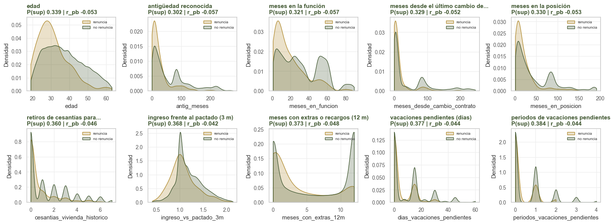
Nótese que en casi todas las densidades la masa de quienes renuncian (dorado) está desplazada hacia los valores bajos: menos edad, menos antigüedad, menos meses en la función y en la posición, menos vacaciones pendientes, menos meses con extras. Las formas no son normales ni parecidas entre clases: en la antigüedad, los meses en la posición y los meses desde el cambio de contrato, los que no renuncian tienen un segundo pico alrededor de 80-90 meses (la cohorte grande de indefinidos) que quienes renuncian casi no tienen. En los meses con extras la forma es de U en los que no renuncian y decreciente en los que renuncian. Una relación así no es lineal en la variable cruda, lo que apoya los tramos o el logaritmo del capítulo 7.
3.3.3.3. Binarias frente al objetivo: razón de tasas#
def razon_binaria(v):
t = tasa(tr, tr[v])
a1, n1_ = t.loc[1, 'renuncias'], t.loc[1, 'filas']
a0, n0_ = t.loc[0, 'renuncias'], t.loc[0, 'filas']
rr = (a1 / n1_) / (a0 / n0_)
ee = np.sqrt(1 / a1 - 1 / n1_ + 1 / a0 - 1 / n0_) if a1 > 0 else np.nan
return {'variable': v, 'bloque': BLOQUE[v], 'filas con 1': int(n1_), 'renuncias con 1': int(a1),
'tasa % con 1': 100 * a1 / n1_, 'tasa % con 0': 100 * a0 / n0_, 'razón': rr,
'IC bajo': rr * np.exp(-1.96 * ee), 'IC alto': rr * np.exp(1.96 * ee),
'p': fisher_exact([[a1, n1_ - a1], [a0, n0_ - a0]])[1]}
BINARIAS = [v for v in NUMB if set(tr[v].dropna().unique()) <= {0, 1}]
rb = pd.DataFrame([razon_binaria(v) for v in BINARIAS]).set_index('variable')
rb['p Holm'], rb['p BH'] = ajustar(rb.p)
rb = rb.sort_values('razón', ascending=False)
chico = rb['renuncias con 1'] < 5
for v in rb.index[~chico]:
n1_v = int(rb.loc[v, 'renuncias con 1'])
verificar(f'binaria {v}', pd.DataFrame({'renuncias': [n1_v, int(tr.loc[tr[v] == 0, OBJETIVO].sum())]}),
tr.loc[tr[v].notna(), OBJETIVO].sum())
# con el grupo 1 pequeño no se publica nada que permita reconstruirlo: ni sus filas ni la tasa del grupo 0
rb_pub = rb.round(3).astype(object)
rb_pub.loc[chico, ['filas con 1', 'renuncias con 1', 'tasa % con 1', 'tasa % con 0', 'razón', 'IC bajo',
'IC alto', 'p', 'p Holm', 'p BH']] = '—'
print(f'{len(rb)} binarias | significativas con Holm al 5 %: {(rb["p Holm"] < 0.05).sum()}')
rb_pub
15 binarias | significativas con Holm al 5 %: 5
| variable | bloque | filas con 1 | renuncias con 1 | tasa % con 1 | tasa % con 0 | razón | IC bajo | IC alto | p | p Holm | p BH |
|---|---|---|---|---|---|---|---|---|---|---|---|
| marca_biometrico | jornada | 38134 | 504 | 1.322 | 0.628 | 2.103 | 1.778 | 2.488 | 0.0 | 0.0 | 0.0 |
| turnos_largos_sin_pago | jornada | 7534 | 171 | 2.27 | 1.092 | 2.079 | 1.731 | 2.497 | 0.0 | 0.0 | 0.0 |
| primer_mes | atributos | 1623 | 27 | 1.664 | 1.005 | 1.656 | 1.13 | 2.425 | 0.016 | 0.148 | 0.035 |
| ingreso_a_mitad | contrato | 1533 | 22 | 1.435 | 1.011 | 1.42 | 0.931 | 2.164 | 0.12 | 0.722 | 0.181 |
| gana_minimo | salario_relativo | 8924 | 87 | 0.975 | 0.761 | 1.281 | 1.007 | 1.629 | 0.047 | 0.373 | 0.087 |
| reingreso | atributos | 5467 | 69 | 1.262 | 0.999 | 1.263 | 0.986 | 1.617 | 0.068 | 0.474 | 0.113 |
| elegible_horas_extra | jornada | 62323 | 645 | 1.035 | 0.844 | 1.226 | 0.901 | 1.667 | 0.217 | 0.921 | 0.272 |
| traslado_12m | atributos | 1810 | 19 | 1.05 | 1.02 | 1.029 | 0.654 | 1.62 | 0.905 | 1.0 | 0.97 |
| es_jefe_formal | trayectoria | — | — | — | — | — | — | — | — | — | — |
| fue_aprendiz | contrato | 3341 | 26 | 0.778 | 1.033 | 0.753 | 0.51 | 1.113 | 0.184 | 0.921 | 0.251 |
| bono_fiesta_12m | ingreso_relativo | 1603 | 12 | 0.749 | 1.011 | 0.74 | 0.419 | 1.308 | 0.373 | 1.0 | 0.431 |
| nacido_en_depto_sede | arraigo | 32787 | 342 | 1.043 | 1.526 | 0.683 | 0.584 | 0.799 | 0.0 | 0.0 | 0.0 |
| en_mediana_local | salario_relativo | 29761 | 194 | 0.652 | 1.118 | 0.583 | 0.474 | 0.718 | 0.0 | 0.0 | 0.0 |
| vacaciones_acumuladas_2p | vacaciones | 10336 | 22 | 0.213 | 1.167 | 0.182 | 0.119 | 0.279 | 0.0 | 0.0 | 0.0 |
| auxilio_educativo_12m | ingreso_relativo | — | — | — | — | — | — | — | — | — | — |
Nótese que 5 de las 15 binarias difieren con Holm. Marcar en el biométrico duplica la tasa (razón 2,10; IC de 1,78 a 2,49), y hacer turnos largos sin cobrar extras también (2,08; IC de 1,73 a 2,50): es la señal de jornada más clara del capítulo. En sentido contrario, tener dos periodos de vacaciones acumulados divide la tasa por cinco (0,18; IC de 0,12 a 0,28), ganar la mediana local la reduce (0,58) y haber nacido en el departamento de la sede también (0,68; IC de 0,58 a 0,80). El primer mes del episodio tiene una razón de 1,66 que no resiste a Holm (p 0,15), y el traslado en 12 meses no difiere (1,03). Ser jefe formal y recibir auxilio educativo tienen menos de cinco renuncias con valor 1 y no se publican.
3.3.4. Categórica frente a categórica#
3.3.4.1. Tablas de contingencia#
ct = pd.crosstab(tr.linea, tr.contrato, margins=True, margins_name='total')
ct['% término fijo'] = (100 * ct['Termino Fijo'] / ct['total']).round(1)
display(ct)
pd.crosstab(tr.nivel, tr.tipo_costos, normalize='index').mul(100).round(1)
| contrato | Termino Fijo | Termino Indefinido | total | % término fijo |
|---|---|---|---|---|
| linea | ||||
| banano | 2275 | 4887 | 7162 | 31.8 |
| ganaderia | 328 | 285 | 613 | 53.5 |
| industrial | 3074 | 3086 | 6160 | 49.9 |
| palma | 27773 | 20154 | 47927 | 57.9 |
| puerto | 593 | 818 | 1411 | 42.0 |
| transporte | 1588 | 2555 | 4143 | 38.3 |
| total | 35631 | 31785 | 67416 | 52.9 |
| tipo_costos | ADMINISTRATIVO | OPERATIVO DIRECTO | OPERATIVO INDIRECTO |
|---|---|---|---|
| nivel | |||
| 1_operativo | 0.1 | 93.9 | 6.0 |
| 2_auxiliar | 8.9 | 32.5 | 58.6 |
| 3_asistente | 21.2 | 21.0 | 57.8 |
| 4_coordinador | 37.2 | 22.2 | 40.6 |
| 5_jefe | 35.8 | 17.1 | 47.0 |
| 6_direccion_gerencia | 37.5 | 13.9 | 48.6 |
Nótese que el término fijo es el 52,9 % de las filas, pero su peso varía por línea: 57,9 % en palma y 31,8 % en banano. El tipo de personal casi determina el nivel en los extremos (el 93,9 % del nivel operativo es operativo directo), y en los niveles medios y altos se reparte entre indirecto y administrativo.
3.3.4.2. Chi-cuadrado y V de Cramér entre las 17 categóricas#
\(V = \sqrt{\chi^2 / (n \,(\min(r, c) - 1))}\) va de 0 (independencia) a 1 (una determina a la otra). El nulo cuenta como una categoría. Son 136 pares; los valores p se corrigen por Holm y por BH.
filas = []
for i, a in enumerate(CAT):
for b in CAT[i + 1:]:
t = pd.crosstab(tr[a].fillna('(nulo)'), tr[b].fillna('(nulo)')).to_numpy()
chi, pv, gl, _ = chi2_contingency(t, correction=False)
filas.append({'variable 1': a, 'variable 2': b, 'chi2': chi, 'gl': gl, 'p': pv,
'V de Cramér': np.sqrt(chi / (t.sum() * (min(t.shape) - 1)))})
cc = pd.DataFrame(filas)
cc['p Holm'], cc['p BH'] = ajustar(cc.p)
print(f'{len(cc)} pares | significativos con Holm al 5 %: {(cc["p Holm"] < 0.05).sum()} | '
f'V > 0,5: {(cc["V de Cramér"] > 0.5).sum()} | V > 0,8: {(cc["V de Cramér"] > 0.8).sum()}')
cc.sort_values('V de Cramér', ascending=False).head(15).round(3)
136 pares | significativos con Holm al 5 %: 136 | V > 0,5: 30 | V > 0,8: 3
| variable 1 | variable 2 | chi2 | gl | p | V de Cramér | p Holm | p BH | |
|---|---|---|---|---|---|---|---|---|
| 0 | sociedad | linea | 337080.000 | 105 | 0.0 | 1.000 | 0.0 | 0.0 |
| 91 | familia_cargo | oficio | 1134836.413 | 697 | 0.0 | 0.995 | 0.0 | 0.0 |
| 16 | linea | ubicacion | 260297.263 | 280 | 0.0 | 0.879 | 0.0 | 0.0 |
| 100 | oficio | tipo_unidad | 193997.210 | 205 | 0.0 | 0.759 | 0.0 | 0.0 |
| 37 | ubicacion | tipo_unidad | 193139.545 | 280 | 0.0 | 0.757 | 0.0 | 0.0 |
| 101 | oficio | area_funcional | 491198.010 | 574 | 0.0 | 0.721 | 0.0 | 0.0 |
| 40 | ubicacion | tipo_costos | 67905.094 | 112 | 0.0 | 0.710 | 0.0 | 0.0 |
| 93 | familia_cargo | area_funcional | 467395.524 | 238 | 0.0 | 0.704 | 0.0 | 0.0 |
| 106 | oficio | estado_gestion_tiempos | 99880.327 | 123 | 0.0 | 0.703 | 0.0 | 0.0 |
| 103 | oficio | tipo_costos | 66337.540 | 82 | 0.0 | 0.701 | 0.0 | 0.0 |
| 104 | oficio | tipo_salario | 65444.465 | 82 | 0.0 | 0.697 | 0.0 | 0.0 |
| 102 | oficio | proceso_planta | 130025.617 | 164 | 0.0 | 0.694 | 0.0 | 0.0 |
| 1 | sociedad | ubicacion | 675659.472 | 1176 | 0.0 | 0.691 | 0.0 | 0.0 |
| 41 | ubicacion | tipo_salario | 60629.011 | 112 | 0.0 | 0.671 | 0.0 | 0.0 |
| 98 | familia_cargo | estado_gestion_tiempos | 87790.953 | 51 | 0.0 | 0.659 | 0.0 | 0.0 |
Nótese que los 136 pares son significativos con Holm (el valor p no ordena nada con este n) y que 30 tienen V > 0,5. Tres son casi redundancias exactas: la sociedad determina la línea (V = 1,00), la familia de cargo casi determina el oficio (0,995) y la línea casi determina la ubicación (0,88). El oficio también está muy asociado con el tipo de unidad, el área funcional, el tipo de personal, el tipo de salario y el estado de gestión de tiempos (V ≈ 0,70). Las variables de organización están anidadas unas en otras; en un modelo con one-hot eso da columnas colineales, que la regularización tiene que repartir (capítulos 4 y 7).
3.3.5. Predictoras categóricas frente al objetivo#
Para cada categórica, chi-cuadrado y V de Cramér con el objetivo (con un objetivo binario \(V = \sqrt{\chi^2 / n}\)), corregidos por Holm y BH sobre las 17 pruebas. La tasa mínima y máxima se calculan solo entre las categorías publicables (al menos 300 filas y 5 renuncias).
filas = []
for v in CAT:
x = tr[v].fillna('(nulo)')
chi, pv, gl, _ = chi2_contingency(pd.crosstab(x, tr[OBJETIVO]).to_numpy(), correction=False)
r = tasa(tr, x)
pub = r[(r.filas >= 300) & (r.renuncias >= 5)]
filas.append({
'variable': v, 'bloque': BLOQUE[v], 'categorías': x.nunique(),
'cat. con < 5 renuncias': int((r.renuncias < 5).sum()),
'chi2': chi, 'gl': gl, 'p': pv, 'V de Cramér': np.sqrt(chi / len(tr)),
'tasa mín % (publicable)': pub['tasa_%'].min(), 'tasa máx % (publicable)': pub['tasa_%'].max(),
})
asoc = pd.DataFrame(filas).set_index('variable').sort_values('V de Cramér', ascending=False)
asoc['p Holm'], asoc['p BH'] = ajustar(asoc.p)
asoc.round(4)
| variable | bloque | categorías | cat. con < 5 renuncias | chi2 | gl | p | V de Cramér | tasa mín % (publicable) | tasa máx % (publicable) | p Holm | p BH |
|---|---|---|---|---|---|---|---|---|---|---|---|
| oficio | atributos | 42 | 11 | 378.9599 | 41 | 0.0000 | 0.0750 | 0.3277 | 3.4707 | 0.0000 | 0.0000 |
| ubicacion | atributos | 57 | 35 | 320.7640 | 56 | 0.0000 | 0.0690 | 0.2457 | 3.0368 | 0.0000 | 0.0000 |
| sociedad | atributos | 22 | 6 | 270.2975 | 21 | 0.0000 | 0.0633 | 0.3033 | 2.4883 | 0.0000 | 0.0000 |
| tipo_unidad | atributos | 6 | 1 | 207.7251 | 5 | 0.0000 | 0.0555 | 0.7056 | 2.8397 | 0.0000 | 0.0000 |
| contrato | atributos | 2 | 0 | 179.1892 | 1 | 0.0000 | 0.0516 | 0.4719 | 1.5099 | 0.0000 | 0.0000 |
| jornada_vs_pago | jornada | 10 | 0 | 177.1905 | 9 | 0.0000 | 0.0513 | 0.5172 | 2.2724 | 0.0000 | 0.0000 |
| linea | atributos | 6 | 0 | 165.1221 | 5 | 0.0000 | 0.0495 | 0.8096 | 2.4435 | 0.0000 | 0.0000 |
| situacion_minimo | salario_relativo | 5 | 1 | 133.5196 | 4 | 0.0000 | 0.0445 | 0.4197 | 1.4159 | 0.0000 | 0.0000 |
| tipo_salario | salario_relativo | 3 | 1 | 59.8712 | 2 | 0.0000 | 0.0298 | 0.8043 | 1.4372 | 0.0000 | 0.0000 |
| familia_cargo | atributos | 18 | 2 | 47.2435 | 17 | 0.0001 | 0.0265 | 0.5765 | 2.4831 | 0.0008 | 0.0002 |
| estado_civil | atributos | 5 | 1 | 31.2519 | 4 | 0.0000 | 0.0215 | 0.3046 | 1.1986 | 0.0000 | 0.0000 |
| area_funcional | atributos | 15 | 4 | 29.3778 | 14 | 0.0093 | 0.0209 | 0.7116 | 2.1739 | 0.0371 | 0.0113 |
| proceso_planta | atributos | 5 | 0 | 20.8955 | 4 | 0.0003 | 0.0176 | 0.3782 | 1.6176 | 0.0020 | 0.0005 |
| tipo_costos | atributos | 3 | 0 | 15.2799 | 2 | 0.0005 | 0.0151 | 0.5782 | 1.2497 | 0.0024 | 0.0006 |
| nivel | atributos | 7 | 1 | 14.6068 | 6 | 0.0235 | 0.0147 | 0.7531 | 1.4542 | 0.0706 | 0.0267 |
| estado_gestion_tiempos | jornada | 4 | 1 | 2.8755 | 3 | 0.4112 | 0.0065 | 1.0072 | 1.4351 | 0.8224 | 0.4369 |
| genero | atributos | 2 | 0 | 0.1013 | 1 | 0.7503 | 0.0012 | 0.9893 | 1.0254 | 0.8224 | 0.7503 |
Nótese que 15 de las 17 categóricas se asocian con el objetivo después de Holm; las dos que no son el género (V 0,001; p Holm 0,82) y el estado de gestión de tiempos (V 0,007). Las de mayor V son las de muchas categorías (oficio 0,075, ubicación 0,069, sociedad 0,063, tipo de unidad 0,056), en parte porque V crece con los grados de libertad; el contrato, con una sola, tiene V 0,052, y la línea 0,050. El nivel del cargo queda en el borde (p Holm 0,071). Entre las categorías publicables la tasa va de 0,25 % a 3,5 % en oficio y ubicación. Como siempre en este capítulo, con 67.416 filas es el tamaño del efecto, no el valor p, lo que permite comparar.
fig, ax = plt.subplots(3, 2, figsize=(12, 12))
for a, v in zip(ax.ravel(), ['contrato', 'linea', 'nivel', 'tipo_costos', 'tipo_salario',
'situacion_minimo']):
grafico_tasa(a, publicable(tr, v), f'Tasa de renuncia por {nom(v)}', BASE)
plt.tight_layout()
plt.show()
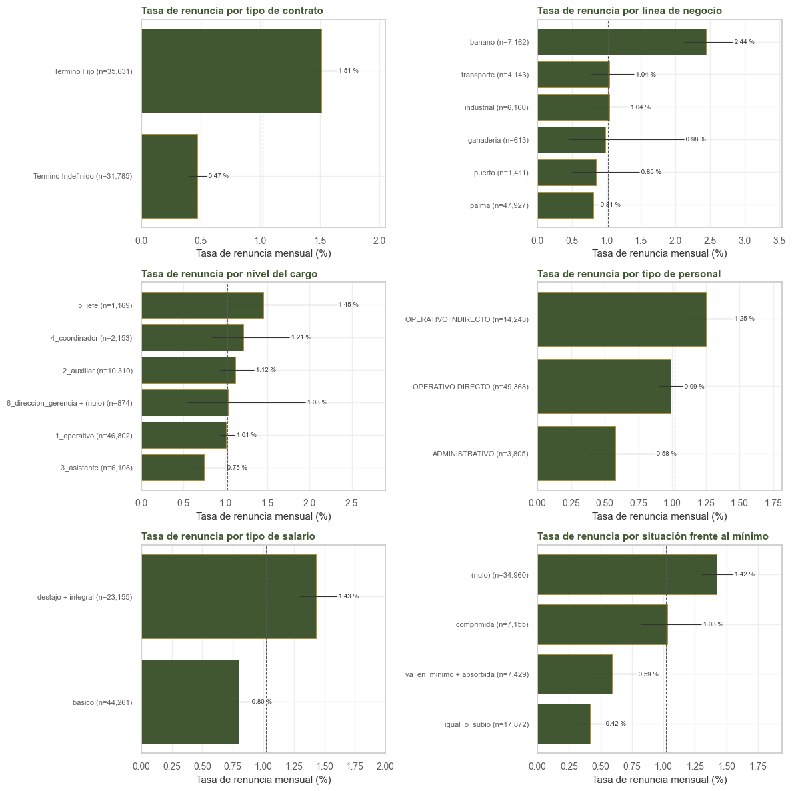
fig, ax = plt.subplots(1, 2, figsize=(12, 9))
for a, v in zip(ax, ['familia_cargo', 'oficio']):
grafico_tasa(a, publicable(tr, v), f'Tasa de renuncia por {nom(v)}', BASE)
plt.tight_layout()
plt.show()
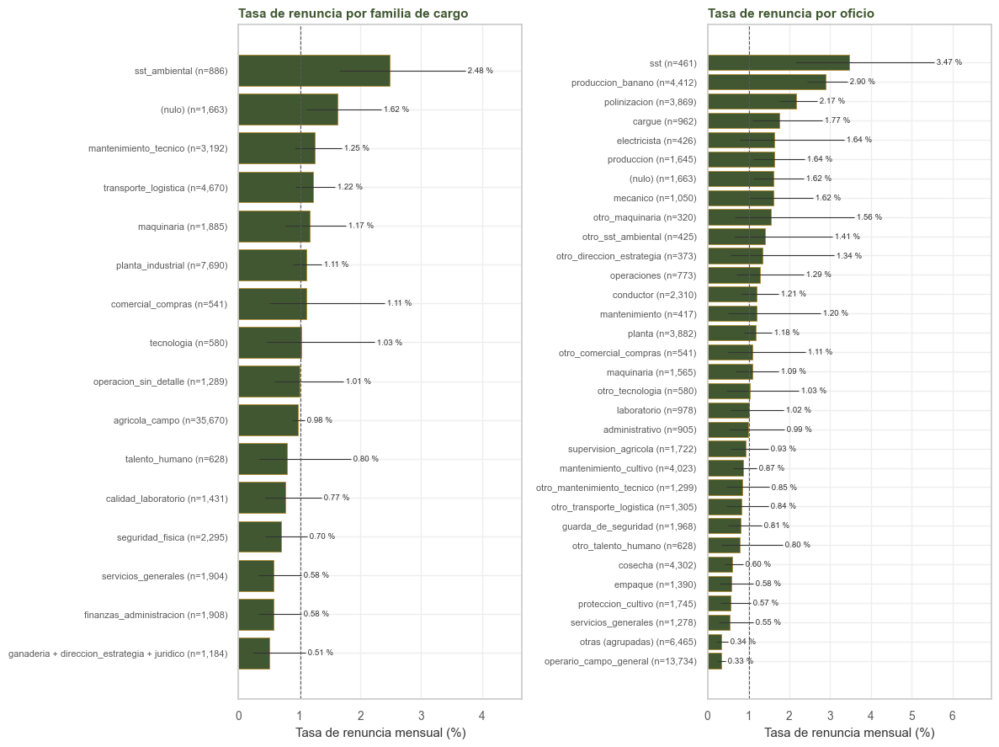
Nótese en los gráficos que el término fijo (1,51 %) renuncia tres veces más que el indefinido (0,47 %); que banano (2,44 %) es la única línea claramente por encima de la media, y que el destajo (junto con el integral, que es pequeño: 1,43 %) supera al básico (0,80 %). En la situación frente al mínimo, quienes vieron su sueldo igualar o superar el aumento del mínimo renuncian poco (0,42 %). En oficio, los de banano (producción de banano, polinización) están arriba y el operario de campo general, abajo. Los gráficos agrupan las categorías con menos de 300 filas, cinco renuncias o cinco personas.
3.3.5.1. Comparación entre niveles: razones de tasa#
Cada categoría se contrasta con una referencia, la más frecuente de su variable, mediante la razón de tasas
donde a y n son las renuncias y las filas de la categoría, y \(a_0\) y \(n_0\) las de la referencia. Cada contraste se prueba con la prueba exacta de Fisher y los valores p se corrigen con Holm y con BH sobre todos los contrastes. Entran todas las categorías: las que tienen menos de 300 filas, menos de cinco renuncias o menos de cinco personas se contrastan juntas como «otras (agrupadas)».
def contraste(df, v):
"""Razón de tasas de cada categoría frente a la más frecuente, con IC y prueba de Fisher."""
t = tasa(df, agrupar(df, v, min_filas=300)).sort_values('filas', ascending=False)
verificar(f'razones de tasa de {v}', t, df[OBJETIVO].sum())
agrupada = t.index.str.contains(' + ', regex=False) | (t.index == OTRAS)
ref = t.index[~agrupada][0] # la referencia es la categoría real más frecuente
a0, n0_ = t.loc[ref, 'renuncias'], t.loc[ref, 'filas']
filas = []
for nivel, r in t.iterrows():
a, n = r.renuncias, r.filas
fila = {'variable': nom(v), 'categoría': nivel, 'filas': int(n),
'renuncias': int(a), 'tasa %': 100 * a / n}
if nivel == ref:
fila.update({'razón': 1.0, 'IC bajo': np.nan, 'IC alto': np.nan, 'p': np.nan})
else:
rr = (a / n) / (a0 / n0_)
ee = np.sqrt(1 / a - 1 / n + 1 / a0 - 1 / n0_) if a > 0 else np.nan
fila.update({'razón': rr, 'IC bajo': rr * np.exp(-1.96 * ee),
'IC alto': rr * np.exp(1.96 * ee),
'p': fisher_exact([[a, n - a], [a0, n0_ - a0]])[1]})
filas.append(fila)
return pd.DataFrame(filas)
niveles = pd.concat([contraste(tr, v) for v in CAT], ignore_index=True)
con_p = niveles.p.notna()
niveles.loc[con_p, 'p Holm'], niveles.loc[con_p, 'p BH'] = ajustar(niveles.p[con_p])
niveles['referencia'] = np.where(con_p, '', 'ref.')
niveles = niveles.set_index(['variable', 'categoría'])
n_agrup = niveles.index.get_level_values(1).str.contains(' + ', regex=False).sum() + (niveles.index.get_level_values(1) == OTRAS).sum()
print(f'{con_p.sum()} contrastes; significativos con Holm al 5 %: {(niveles["p Holm"] < 0.05).sum()}; '
f'con BH: {(niveles["p BH"] < 0.05).sum()}; categorías agrupadas: {n_agrup}')
columnas = ['filas', 'renuncias', 'tasa %', 'razón', 'IC bajo', 'IC alto', 'p Holm', 'p BH', 'referencia']
niveles_pub = niveles.round(3).astype({c: object for c in ['IC bajo', 'IC alto', 'p Holm', 'p BH']})
niveles_pub.loc[niveles_pub.referencia == 'ref.', ['IC bajo', 'IC alto', 'p Holm', 'p BH']] = ''
POCAS = ['contrato', 'linea', 'tipo_unidad', 'tipo_costos', 'nivel', 'estado_civil', 'genero',
'tipo_salario', 'situacion_minimo']
niveles_pub.loc[[nom(v) for v in POCAS], columnas]
134 contrastes; significativos con Holm al 5 %: 34; con BH: 69; categorías agrupadas: 11
| variable / categoría | filas | renuncias | tasa % | razón | IC bajo | IC alto | p Holm | p BH | referencia | |
|---|---|---|---|---|---|---|---|---|---|---|
| tipo de contrato | Termino Fijo | 35631 | 538 | 1.510 | 1.000 | ref. | ||||
| Termino Indefinido | 31785 | 150 | 0.472 | 0.313 | 0.261 | 0.374 | 0.0 | 0.0 | ||
| línea de negocio | palma | 47927 | 388 | 0.810 | 1.000 | ref. | ||||
| banano | 7162 | 175 | 2.443 | 3.018 | 2.529 | 3.602 | 0.0 | 0.0 | ||
| industrial | 6160 | 64 | 1.039 | 1.283 | 0.986 | 1.67 | 1.0 | 0.132 | ||
| transporte | 4143 | 43 | 1.038 | 1.282 | 0.937 | 1.754 | 1.0 | 0.206 | ||
| puerto | 1411 | 12 | 0.850 | 1.051 | 0.593 | 1.861 | 1.0 | 0.839 | ||
| ganaderia | 613 | 6 | 0.979 | 1.209 | 0.542 | 2.697 | 1.0 | 0.727 | ||
| tipo de unidad | finca_palma | 32597 | 230 | 0.706 | 1.000 | ref. | ||||
| area_funcional | 20882 | 217 | 1.039 | 1.473 | 1.224 | 1.771 | 0.005 | 0.0 | ||
| planta_industrial | 8103 | 85 | 1.049 | 1.487 | 1.161 | 1.904 | 0.211 | 0.007 | ||
| finca_banano | 5247 | 149 | 2.840 | 4.025 | 3.282 | 4.936 | 0.0 | 0.0 | ||
| hacienda_ganadera + (nulo) | 587 | 7 | 1.193 | 1.690 | 0.8 | 3.569 | 1.0 | 0.299 | ||
| tipo de personal | OPERATIVO DIRECTO | 49368 | 488 | 0.988 | 1.000 | ref. | ||||
| OPERATIVO INDIRECTO | 14243 | 178 | 1.250 | 1.264 | 1.066 | 1.499 | 0.626 | 0.019 | ||
| ADMINISTRATIVO | 3805 | 22 | 0.578 | 0.585 | 0.382 | 0.896 | 0.742 | 0.022 | ||
| nivel del cargo | 1_operativo | 46802 | 475 | 1.015 | 1.000 | ref. | ||||
| 2_auxiliar | 10310 | 115 | 1.115 | 1.099 | 0.897 | 1.346 | 1.0 | 0.447 | ||
| 3_asistente | 6108 | 46 | 0.753 | 0.742 | 0.549 | 1.003 | 1.0 | 0.101 | ||
| 4_coordinador | 2153 | 26 | 1.208 | 1.190 | 0.804 | 1.762 | 1.0 | 0.467 | ||
| 5_jefe | 1169 | 17 | 1.454 | 1.433 | 0.886 | 2.316 | 1.0 | 0.214 | ||
| 6_direccion_gerencia + (nulo) | 874 | 9 | 1.030 | 1.015 | 0.526 | 1.955 | 1.0 | 0.885 | ||
| estado civil | Union libre | 31290 | 318 | 1.016 | 1.000 | ref. | ||||
| Soltero | 25864 | 310 | 1.199 | 1.179 | 1.009 | 1.378 | 1.0 | 0.076 | ||
| Casado | 6963 | 50 | 0.718 | 0.707 | 0.525 | 0.951 | 1.0 | 0.042 | ||
| Otro + (nulo) | 3299 | 10 | 0.303 | 0.298 | 0.159 | 0.559 | 0.001 | 0.0 | ||
| género | Masculino | 58319 | 598 | 1.025 | 1.000 | ref. | ||||
| Femenino | 9097 | 90 | 0.989 | 0.965 | 0.774 | 1.203 | 1.0 | 0.87 | ||
| tipo de salario | basico | 44261 | 356 | 0.804 | 1.000 | ref. | ||||
| destajo + integral | 23155 | 332 | 1.434 | 1.783 | 1.536 | 2.068 | 0.0 | 0.0 | ||
| situación frente al mínimo | (nulo) | 34960 | 495 | 1.416 | 1.000 | ref. | ||||
| igual_o_subio | 17872 | 75 | 0.420 | 0.296 | 0.233 | 0.378 | 0.0 | 0.0 | ||
| ya_en_minimo + absorbida | 7429 | 44 | 0.592 | 0.418 | 0.308 | 0.569 | 0.0 | 0.0 | ||
| comprimida | 7155 | 74 | 1.034 | 0.730 | 0.573 | 0.931 | 0.746 | 0.022 |
with pd.option_context('display.max_rows', 300):
display(niveles_pub.drop(index=[nom(v) for v in POCAS])[columnas])
Show code cell output
| variable / categoría | filas | renuncias | tasa % | razón | IC bajo | IC alto | p Holm | p BH | referencia | |
|---|---|---|---|---|---|---|---|---|---|---|
| sociedad | S08 | 18442 | 114 | 0.618 | 1.000 | ref. | ||||
| S22 | 9561 | 29 | 0.303 | 0.491 | 0.327 | 0.737 | 0.038 | 0.001 | ||
| S19 | 8472 | 69 | 0.814 | 1.318 | 0.978 | 1.775 | 1.0 | 0.139 | ||
| S17 | 7033 | 175 | 2.488 | 4.025 | 3.185 | 5.088 | 0.0 | 0.0 | ||
| S18 | 4891 | 77 | 1.574 | 2.547 | 1.911 | 3.395 | 0.0 | 0.0 | ||
| S10 | 3746 | 39 | 1.041 | 1.684 | 1.173 | 2.419 | 0.541 | 0.017 | ||
| S11 | 3430 | 40 | 1.166 | 1.887 | 1.318 | 2.7 | 0.106 | 0.004 | ||
| S21 | 1933 | 30 | 1.552 | 2.511 | 1.684 | 3.743 | 0.004 | 0.0 | ||
| S07 | 1796 | 30 | 1.670 | 2.702 | 1.813 | 4.028 | 0.001 | 0.0 | ||
| otras (agrupadas) | 1747 | 15 | 0.859 | 1.389 | 0.813 | 2.374 | 1.0 | 0.3 | ||
| S01 | 1308 | 16 | 1.223 | 1.979 | 1.176 | 3.329 | 1.0 | 0.039 | ||
| S13 | 1268 | 19 | 1.498 | 2.424 | 1.496 | 3.927 | 0.097 | 0.003 | ||
| S03 | 1262 | 12 | 0.951 | 1.538 | 0.851 | 2.781 | 1.0 | 0.218 | ||
| S09 | 864 | 7 | 0.810 | 1.311 | 0.613 | 2.803 | 1.0 | 0.58 | ||
| S14 | 613 | 6 | 0.979 | 1.583 | 0.699 | 3.584 | 1.0 | 0.382 | ||
| S02 | 547 | 5 | 0.914 | 1.479 | 0.606 | 3.606 | 1.0 | 0.482 | ||
| S20 | 503 | 5 | 0.994 | 1.608 | 0.66 | 3.92 | 1.0 | 0.338 | ||
| ubicación | otras (agrupadas) | 7060 | 38 | 0.538 | 0.387 | 0.265 | 0.563 | 0.0 | 0.0 | |
| U030 | 6680 | 93 | 1.392 | 1.000 | ref. | |||||
| U023 | 6202 | 97 | 1.564 | 1.123 | 0.847 | 1.49 | 1.0 | 0.496 | ||
| U045 | 5822 | 28 | 0.481 | 0.345 | 0.227 | 0.526 | 0.0 | 0.0 | ||
| U026 | 5699 | 14 | 0.246 | 0.176 | 0.101 | 0.309 | 0.0 | 0.0 | ||
| U031 | 3728 | 38 | 1.019 | 0.732 | 0.503 | 1.066 | 1.0 | 0.199 | ||
| U013 | 3460 | 13 | 0.376 | 0.270 | 0.151 | 0.481 | 0.0 | 0.0 | ||
| U055 | 3457 | 40 | 1.157 | 0.831 | 0.575 | 1.201 | 1.0 | 0.447 | ||
| U034 | 3154 | 71 | 2.251 | 1.617 | 1.191 | 2.196 | 0.216 | 0.007 | ||
| U018 | 2986 | 23 | 0.770 | 0.553 | 0.351 | 0.872 | 0.67 | 0.02 | ||
| U019 | 2767 | 17 | 0.614 | 0.441 | 0.264 | 0.739 | 0.096 | 0.003 | ||
| U039 | 2704 | 30 | 1.109 | 0.797 | 0.529 | 1.2 | 1.0 | 0.408 | ||
| U002 | 2386 | 19 | 0.796 | 0.572 | 0.35 | 0.935 | 1.0 | 0.046 | ||
| U029 | 1943 | 9 | 0.463 | 0.333 | 0.168 | 0.658 | 0.047 | 0.002 | ||
| U020 | 1883 | 24 | 1.275 | 0.915 | 0.586 | 1.43 | 1.0 | 0.87 | ||
| U036 | 1877 | 57 | 3.037 | 2.181 | 1.575 | 3.021 | 0.001 | 0.0 | ||
| U041 | 1454 | 15 | 1.032 | 0.741 | 0.431 | 1.275 | 1.0 | 0.408 | ||
| U011 | 1292 | 16 | 1.238 | 0.890 | 0.525 | 1.507 | 1.0 | 0.857 | ||
| U046 | 1001 | 24 | 2.398 | 1.722 | 1.105 | 2.684 | 1.0 | 0.049 | ||
| U042 | 855 | 8 | 0.936 | 0.672 | 0.328 | 1.379 | 1.0 | 0.434 | ||
| U006 | 668 | 5 | 0.749 | 0.538 | 0.219 | 1.317 | 1.0 | 0.302 | ||
| U053 | 338 | 9 | 2.663 | 1.913 | 0.973 | 3.758 | 1.0 | 0.117 | ||
| familia de cargo | agricola_campo | 35670 | 350 | 0.981 | 1.000 | ref. | ||||
| planta_industrial | 7690 | 85 | 1.105 | 1.126 | 0.89 | 1.426 | 1.0 | 0.408 | ||
| transporte_logistica | 4670 | 57 | 1.221 | 1.244 | 0.942 | 1.643 | 1.0 | 0.213 | ||
| mantenimiento_tecnico | 3192 | 40 | 1.253 | 1.277 | 0.923 | 1.768 | 1.0 | 0.213 | ||
| seguridad_fisica | 2295 | 16 | 0.697 | 0.711 | 0.431 | 1.171 | 1.0 | 0.309 | ||
| finanzas_administracion | 1908 | 11 | 0.577 | 0.588 | 0.323 | 1.069 | 1.0 | 0.155 | ||
| servicios_generales | 1904 | 11 | 0.578 | 0.589 | 0.324 | 1.071 | 1.0 | 0.155 | ||
| maquinaria | 1885 | 22 | 1.167 | 1.189 | 0.775 | 1.825 | 1.0 | 0.482 | ||
| (nulo) | 1663 | 27 | 1.624 | 1.655 | 1.122 | 2.44 | 1.0 | 0.035 | ||
| calidad_laboratorio | 1431 | 11 | 0.769 | 0.783 | 0.431 | 1.424 | 1.0 | 0.575 | ||
| operacion_sin_detalle | 1289 | 13 | 1.009 | 1.028 | 0.593 | 1.783 | 1.0 | 0.899 | ||
| ganaderia + direccion_estrategia + juridico | 1184 | 6 | 0.507 | 0.516 | 0.231 | 1.155 | 1.0 | 0.206 | ||
| sst_ambiental | 886 | 22 | 2.483 | 2.531 | 1.653 | 3.873 | 0.013 | 0.001 | ||
| talento_humano | 628 | 5 | 0.796 | 0.811 | 0.337 | 1.955 | 1.0 | 0.87 | ||
| tecnologia | 580 | 6 | 1.034 | 1.054 | 0.472 | 2.353 | 1.0 | 0.87 | ||
| comercial_compras | 541 | 6 | 1.109 | 1.130 | 0.507 | 2.522 | 1.0 | 0.731 | ||
| oficio | operario_campo_general | 13734 | 45 | 0.328 | 1.000 | ref. | ||||
| otras (agrupadas) | 6465 | 22 | 0.340 | 1.039 | 0.624 | 1.728 | 1.0 | 0.903 | ||
| produccion_banano | 4412 | 128 | 2.901 | 8.854 | 6.315 | 12.415 | 0.0 | 0.0 | ||
| cosecha | 4302 | 26 | 0.604 | 1.845 | 1.14 | 2.986 | 1.0 | 0.035 | ||
| mantenimiento_cultivo | 4023 | 35 | 0.870 | 2.655 | 1.709 | 4.124 | 0.004 | 0.0 | ||
| planta | 3882 | 46 | 1.185 | 3.616 | 2.402 | 5.446 | 0.0 | 0.0 | ||
| polinizacion | 3869 | 84 | 2.171 | 6.626 | 4.621 | 9.501 | 0.0 | 0.0 | ||
| conductor | 2310 | 28 | 1.212 | 3.699 | 2.313 | 5.917 | 0.0 | 0.0 | ||
| guarda_de_seguridad | 1968 | 16 | 0.813 | 2.481 | 1.405 | 4.381 | 0.277 | 0.009 | ||
| proteccion_cultivo | 1745 | 10 | 0.573 | 1.749 | 0.883 | 3.464 | 1.0 | 0.207 | ||
| supervision_agricola | 1722 | 16 | 0.929 | 2.836 | 1.606 | 5.006 | 0.08 | 0.003 | ||
| (nulo) | 1663 | 27 | 1.624 | 4.955 | 3.083 | 7.963 | 0.0 | 0.0 | ||
| produccion | 1645 | 27 | 1.641 | 5.009 | 3.117 | 8.05 | 0.0 | 0.0 | ||
| maquinaria | 1565 | 17 | 1.086 | 3.315 | 1.902 | 5.778 | 0.012 | 0.0 | ||
| empaque | 1390 | 8 | 0.576 | 1.757 | 0.83 | 3.719 | 1.0 | 0.22 | ||
| otro_transporte_logistica | 1305 | 11 | 0.843 | 2.573 | 1.334 | 4.961 | 0.629 | 0.019 | ||
| otro_mantenimiento_tecnico | 1299 | 11 | 0.847 | 2.584 | 1.34 | 4.984 | 0.625 | 0.019 | ||
| servicios_generales | 1278 | 7 | 0.548 | 1.672 | 0.755 | 3.699 | 1.0 | 0.299 | ||
| mecanico | 1050 | 17 | 1.619 | 4.941 | 2.838 | 8.603 | 0.0 | 0.0 | ||
| laboratorio | 978 | 10 | 1.022 | 3.121 | 1.578 | 6.173 | 0.277 | 0.009 | ||
| cargue | 962 | 17 | 1.767 | 5.393 | 3.099 | 9.387 | 0.0 | 0.0 | ||
| administrativo | 905 | 9 | 0.994 | 3.035 | 1.488 | 6.189 | 0.467 | 0.015 | ||
| operaciones | 773 | 10 | 1.294 | 3.948 | 1.997 | 7.804 | 0.057 | 0.002 | ||
| otro_talento_humano | 628 | 5 | 0.796 | 2.430 | 0.968 | 6.1 | 1.0 | 0.12 | ||
| otro_tecnologia | 580 | 6 | 1.034 | 3.157 | 1.352 | 7.37 | 1.0 | 0.035 | ||
| otro_comercial_compras | 541 | 6 | 1.109 | 3.385 | 1.45 | 7.9 | 0.917 | 0.027 | ||
| sst | 461 | 16 | 3.471 | 10.593 | 6.033 | 18.598 | 0.0 | 0.0 | ||
| electricista | 426 | 7 | 1.643 | 5.015 | 2.275 | 11.055 | 0.086 | 0.003 | ||
| otro_sst_ambiental | 425 | 6 | 1.412 | 4.309 | 1.848 | 10.044 | 0.357 | 0.012 | ||
| mantenimiento | 417 | 5 | 1.199 | 3.659 | 1.46 | 9.172 | 1.0 | 0.033 | ||
| otro_direccion_estrategia | 373 | 5 | 1.340 | 4.091 | 1.633 | 10.248 | 0.764 | 0.023 | ||
| otro_maquinaria | 320 | 5 | 1.562 | 4.769 | 1.906 | 11.934 | 0.467 | 0.015 | ||
| área funcional | no_aplica | 46516 | 470 | 1.010 | 1.000 | ref. | ||||
| transporte_logistica | 5890 | 75 | 1.273 | 1.260 | 0.989 | 1.606 | 1.0 | 0.12 | ||
| mantenimiento_tecnico | 3034 | 33 | 1.088 | 1.076 | 0.758 | 1.529 | 1.0 | 0.727 | ||
| seguridad_fisica | 3024 | 23 | 0.761 | 0.753 | 0.496 | 1.142 | 1.0 | 0.304 | ||
| finanzas_administracion | 2389 | 17 | 0.712 | 0.704 | 0.435 | 1.141 | 1.0 | 0.249 | ||
| servicios_generales | 1278 | 10 | 0.782 | 0.774 | 0.415 | 1.445 | 1.0 | 0.65 | ||
| calidad_laboratorio | 1208 | 10 | 0.828 | 0.819 | 0.439 | 1.529 | 1.0 | 0.731 | ||
| sst_ambiental | 1012 | 22 | 2.174 | 2.152 | 1.409 | 3.284 | 0.123 | 0.004 | ||
| maquinaria | 942 | 9 | 0.955 | 0.946 | 0.49 | 1.823 | 1.0 | 1.0 | ||
| otras (agrupadas) | 920 | 6 | 0.652 | 0.645 | 0.289 | 1.44 | 1.0 | 0.482 | ||
| comercial_compras | 608 | 8 | 1.316 | 1.302 | 0.65 | 2.607 | 1.0 | 0.488 | ||
| talento_humano | 595 | 5 | 0.840 | 0.832 | 0.346 | 2.0 | 1.0 | 0.87 | ||
| proceso de planta | no_aplica | 59009 | 597 | 1.012 | 1.000 | ref. | ||||
| extraccion | 2720 | 44 | 1.618 | 1.599 | 1.18 | 2.166 | 0.411 | 0.013 | ||
| servicios_y_otros | 2196 | 17 | 0.774 | 0.765 | 0.473 | 1.237 | 1.0 | 0.415 | ||
| transformacion | 1851 | 7 | 0.378 | 0.374 | 0.178 | 0.786 | 0.351 | 0.011 | ||
| empaque | 1640 | 23 | 1.402 | 1.386 | 0.917 | 2.096 | 1.0 | 0.21 | ||
| situación del control de tiempos | 9 | 55503 | 559 | 1.007 | 1.000 | ref. | ||||
| 1 | 10365 | 107 | 1.032 | 1.025 | 0.834 | 1.259 | 1.0 | 0.857 | ||
| (nulo) + 0 | 1548 | 22 | 1.421 | 1.411 | 0.924 | 2.154 | 1.0 | 0.201 | ||
| jornada frente a pago de extras | (nulo) | 29935 | 190 | 0.635 | 1.000 | ref. | ||||
| cortos_no_cobra | 9428 | 121 | 1.283 | 2.022 | 1.612 | 2.537 | 0.0 | 0.0 | ||
| largos_no_cobra | 7525 | 171 | 2.272 | 3.580 | 2.917 | 4.395 | 0.0 | 0.0 | ||
| largos_cobra | 7242 | 86 | 1.188 | 1.871 | 1.452 | 2.411 | 0.0 | 0.0 | ||
| cortos_cobra | 5484 | 42 | 0.766 | 1.207 | 0.865 | 1.683 | 1.0 | 0.367 | ||
| algunos_largos_cobra | 3638 | 37 | 1.017 | 1.602 | 1.129 | 2.275 | 0.97 | 0.029 | ||
| algunos_largos_no_cobra | 1252 | 17 | 1.358 | 2.139 | 1.307 | 3.502 | 0.527 | 0.016 | ||
| largos_no_aplica | 1160 | 6 | 0.517 | 0.815 | 0.362 | 1.833 | 1.0 | 0.875 | ||
| cortos_no_aplica | 1035 | 11 | 1.063 | 1.674 | 0.915 | 3.065 | 1.0 | 0.186 | ||
| algunos_largos_no_aplica | 717 | 7 | 0.976 | 1.538 | 0.726 | 3.259 | 1.0 | 0.32 |
De 134 contrastes, 34 son significativos con Holm y 69 con BH. En 11 variables hubo que agrupar categorías pequeñas (por ejemplo, el destajo con el integral, o «ya en el mínimo» con «absorbida»). Los significativos se concentran en cuatro ejes:
Contrato. El indefinido renuncia a 0,31 veces la tasa del fijo (IC de 0,26 a 0,37): el término fijo renuncia 3,2 veces más. Es la diferencia más precisa del capítulo.
Banano. La línea de banano renuncia 3,0 veces más que palma (IC de 2,5 a 3,6) y la finca de banano 4,0 veces más que la de palma. En oficio, producción de banano (8,9) y polinización (6,6) tienen las razones más altas frente al operario de campo general, que es de riesgo bajo (0,33 %) y por eso casi todas las razones de oficio son mayores que uno. Es una misma señal repartida entre variables anidadas. Industrial, transporte, puerto y ganadería no se distinguen de palma.
Salario y jornada. El destajo (con el integral) renuncia 1,8 veces más que el básico (IC de 1,5 a 2,1); frente al nulo de la situación frente al mínimo (que incluye todo el destajo), quien quedó igual o por encima del mínimo renuncia a 0,30 y quien ya estaba en el mínimo o lo vio absorbido a 0,42. Hacer turnos largos sin cobrarlos multiplica por 3,6 la tasa de quien no marca.
Estado civil. La categoría «otro» (los estados poco frecuentes, agrupados) renuncia a 0,30 de la unión libre.
Otras diferencias no resisten la corrección: el nivel del cargo, el género (0,97; IC de 0,77 a 1,20), el personal administrativo (0,59, significativo solo con BH), el proceso de planta y casi todas las familias de cargo. En sociedad y ubicación hay varias categorías con razones de 0,2 a 4: son la misma heterogeneidad que la línea y el oficio, vista a otra escala. Los contrastes tratan las filas como independientes y son algo optimistas; el modelo del capítulo 7 los estima ajustando por las demás variables.
3.3.6. Información mutua frente al azar, para las 105 predictoras#
La información mutua con el objetivo mide cuánto reduce una variable la incertidumbre sobre la renuncia:
que vale cero si y solo si X y Y son independientes y, a diferencia de una correlación, capta relaciones no lineales. Las numéricas con más de 20 valores se discretizan en 20 cuantiles; si un valor pesa más del 5 % (los ceros de los conteos) va en su propia celda y el resto se reparte en 19 cuantiles, y el nulo es una celda más. La información mutua estimada crece con el número de categorías aunque no haya relación; por eso se compara con su distribución cuando el objetivo se permuta al azar (200 permutaciones, las mismas para todas las variables) y se reporta el exceso sobre la media de esa distribución, en % de la entropía del objetivo \(H(Y)\). La prueba formal usa que \(G = 2nI\) sigue una \(\chi^2\) con \(k - 1\) grados de libertad bajo independencia (prueba G); sus valores p se corrigen por Holm y por BH. El valor p de permutación (\(\geq 1/201\)) se da como control.
def codigos(v):
"""Celdas de la variable: 20 cuantiles para las numéricas con muchos valores (el valor más
frecuente va en su propia celda si pesa más del 5 %, como los ceros de los conteos), las
categorías para las demás, y el nulo como una celda más."""
x = tr[v]
if v in NUM and x.dropna().nunique() > 20:
moda = x.mode()[0]
if (x == moda).mean() > 0.05:
c = pd.Series(0.0, index=x.index).where(x.notna())
resto = x[x.notna() & (x != moda)]
c[resto.index] = pd.qcut(resto, 19, labels=False, duplicates='drop') + 1
else:
c = pd.qcut(x, 20, labels=False, duplicates='drop')
else:
c = tr[v].astype(str) if v in CAT else tr[v]
c = pd.Series(pd.factorize(c)[0], index=tr.index).where(tr[v].notna())
return pd.Series(c).fillna(-1).astype(int).to_numpy() + 1
def im(x, yy, k):
t = np.bincount(x * 2 + yy, minlength=2 * k).reshape(k, 2) / len(yy)
px, py = t.sum(1, keepdims=True), t.sum(0, keepdims=True)
nz = t > 0
return float((t[nz] * np.log(t[nz] / (px @ py)[nz])).sum())
rng = np.random.default_rng(SEMILLA)
PERM = [rng.permutation(y) for _ in range(200)]
H = -(y.mean() * np.log(y.mean()) + (1 - y.mean()) * np.log(1 - y.mean()))
filas = []
for v in PREDICTORAS:
x = codigos(v)
x = pd.factorize(x)[0]
k = x.max() + 1
obs = im(x, y, k)
azar = np.array([im(x, yp, k) for yp in PERM])
g = 2 * len(y) * obs
filas.append({'variable': v, 'bloque': BLOQUE[v], 'celdas': k, 'IM observada': obs,
'IM por azar': azar.mean(), 'exceso': obs - azar.mean(),
'% de H(y)': 100 * (obs - azar.mean()) / H,
'z': (obs - azar.mean()) / azar.std(),
'p permutación': (1 + (azar >= obs).sum()) / (1 + len(azar)),
'p prueba G': stats.chi2.sf(g, k - 1)})
imt = pd.DataFrame(filas).set_index('variable').sort_values('exceso', ascending=False)
imt['p prueba G'] = imt['p prueba G'].fillna(1.0) # variable constante en el entrenamiento: k = 1
imt['p Holm'], imt['p BH'] = ajustar(imt['p prueba G'])
imt.loc[CHICAS, ['IM observada', 'IM por azar', 'exceso', '% de H(y)', 'z', 'p permutación', 'p prueba G',
'p Holm', 'p BH']] = np.nan # privacidad
print(f'H(y) = {H:.4f} nats | exceso > 0 en {(imt.exceso > 0).sum()} de {len(imt)} | '
f'significativas (prueba G, Holm 5 %): {(imt["p Holm"] < 0.05).sum()} | con BH: {(imt["p BH"] < 0.05).sum()}')
col_im = ['bloque', 'celdas', 'IM observada', 'IM por azar', '% de H(y)', 'z', 'p permutación', 'p Holm', 'p BH']
imt[col_im].head(25).round({'IM observada': 5, 'IM por azar': 5, '% de H(y)': 2, 'z': 1,
'p permutación': 4, 'p Holm': 4, 'p BH': 4})
H(y) = 0.0569 nats | exceso > 0 en 96 de 105 | significativas (prueba G, Holm 5 %): 74 | con BH: 82
| variable | bloque | celdas | IM observada | IM por azar | % de H(y) | z | p permutación | p Holm | p BH |
|---|---|---|---|---|---|---|---|---|---|
| antig_meses | atributos | 20 | 0.00286 | 0.00014 | 4.77 | 60.5 | 0.005 | 0.0 | 0.0 |
| meses_desde_cambio_contrato | contrato | 17 | 0.00243 | 0.00012 | 4.05 | 51.2 | 0.005 | 0.0 | 0.0 |
| oficio | atributos | 42 | 0.00258 | 0.00030 | 4.00 | 38.2 | 0.005 | 0.0 | 0.0 |
| meses_en_posicion | trayectoria | 20 | 0.00226 | 0.00014 | 3.73 | 46.0 | 0.005 | 0.0 | 0.0 |
| meses_en_funcion | trayectoria | 20 | 0.00224 | 0.00014 | 3.69 | 46.3 | 0.005 | 0.0 | 0.0 |
| ubicacion | atributos | 57 | 0.00233 | 0.00040 | 3.39 | 24.8 | 0.005 | 0.0 | 0.0 |
| edad | atributos | 20 | 0.00192 | 0.00014 | 3.14 | 38.1 | 0.005 | 0.0 | 0.0 |
| sociedad | atributos | 22 | 0.00185 | 0.00016 | 2.96 | 35.4 | 0.005 | 0.0 | 0.0 |
| var_sueldo_smmlv_12m | salario_relativo | 17 | 0.00175 | 0.00012 | 2.86 | 37.4 | 0.005 | 0.0 | 0.0 |
| meses_al_vencimiento | contrato | 12 | 0.00170 | 0.00008 | 2.84 | 46.6 | 0.005 | 0.0 | 0.0 |
| meses_desde_vacaciones | vacaciones | 12 | 0.00167 | 0.00009 | 2.79 | 47.6 | 0.005 | 0.0 | 0.0 |
| cesantias_vivienda_historico | arraigo | 14 | 0.00154 | 0.00009 | 2.55 | 40.7 | 0.005 | 0.0 | 0.0 |
| contrato | atributos | 2 | 0.00142 | 0.00001 | 2.49 | 113.4 | 0.005 | 0.0 | 0.0 |
| ingreso_vs_pactado_3m | ingreso_relativo | 21 | 0.00151 | 0.00015 | 2.40 | 28.4 | 0.005 | 0.0 | 0.0 |
| dias_vacaciones_pendientes | vacaciones | 9 | 0.00139 | 0.00006 | 2.35 | 43.0 | 0.005 | 0.0 | 0.0 |
| periodos_vacaciones_pendientes | vacaciones | 8 | 0.00136 | 0.00005 | 2.30 | 51.8 | 0.005 | 0.0 | 0.0 |
| cambio_ingreso_3m_vs_9m | ingreso_relativo | 21 | 0.00145 | 0.00015 | 2.28 | 28.6 | 0.005 | 0.0 | 0.0 |
| pct_ultimo_aumento_merito | salario_relativo | 15 | 0.00139 | 0.00011 | 2.26 | 31.3 | 0.005 | 0.0 | 0.0 |
| meses_con_extras_12m | jornada | 14 | 0.00138 | 0.00010 | 2.25 | 34.6 | 0.005 | 0.0 | 0.0 |
| meses_desde_aumento_merito | salario_relativo | 18 | 0.00130 | 0.00013 | 2.06 | 27.8 | 0.005 | 0.0 | 0.0 |
| dias_licencia_no_remunerada_3m_r2 | ausencias | 7 | 0.00119 | 0.00005 | 2.00 | 38.8 | 0.005 | 0.0 | 0.0 |
| tipo_unidad | atributos | 6 | 0.00114 | 0.00003 | 1.94 | 54.7 | 0.005 | 0.0 | 0.0 |
| situacion_minimo | salario_relativo | 5 | 0.00112 | 0.00003 | 1.91 | 48.3 | 0.005 | 0.0 | 0.0 |
| jornada_vs_pago | jornada | 10 | 0.00114 | 0.00007 | 1.89 | 32.9 | 0.005 | 0.0 | 0.0 |
| n_aumentos_merito_24m | salario_relativo | 6 | 0.00106 | 0.00004 | 1.80 | 41.6 | 0.005 | 0.0 | 0.0 |
Nótese que la antigüedad reconocida es la predictora con más información (4,8 % de la entropía del objetivo una vez descontado el azar), seguida de los meses desde el último cambio de contrato (4,0 %), el oficio (4,0 %), los meses en la posición y en la función (3,7 %), la ubicación (3,4 %), la edad (3,1 %) y la sociedad (3,0 %). La corrección por azar importa: la ubicación tiene la mayor información por azar (57 celdas) y, sin corregir, estaría por delante de los meses en la posición. La información mutua capta lo que Mann-Whitney no ve: los meses al vencimiento tienen P(sup) 0,500 entre quienes tienen dato, pero son la décima variable en información (2,8 %) porque su nulo es el contrato indefinido; lo mismo los meses desde las últimas vacaciones (P(sup) 0,458 y 2,8 %), cuyo nulo son personas nuevas con una tasa de 1,8 % frente a 0,6 %. Ninguna variable pasa del 5 % de la entropía: la renuncia no la explica una variable sola, y los porcentajes no se suman porque las variables comparten información. Con la prueba G, 74 de las 105 son significativas con Holm.
Las 105 predictoras, ordenadas, están plegadas debajo.
with pd.option_context('display.max_rows', 120):
display(imt[col_im].round({'IM observada': 5, 'IM por azar': 5, '% de H(y)': 2, 'z': 1,
'p permutación': 4, 'p Holm': 4, 'p BH': 4}))
Show code cell output
| variable | bloque | celdas | IM observada | IM por azar | % de H(y) | z | p permutación | p Holm | p BH |
|---|---|---|---|---|---|---|---|---|---|
| antig_meses | atributos | 20 | 0.00286 | 0.00014 | 4.77 | 60.5 | 0.0050 | 0.0000 | 0.0000 |
| meses_desde_cambio_contrato | contrato | 17 | 0.00243 | 0.00012 | 4.05 | 51.2 | 0.0050 | 0.0000 | 0.0000 |
| oficio | atributos | 42 | 0.00258 | 0.00030 | 4.00 | 38.2 | 0.0050 | 0.0000 | 0.0000 |
| meses_en_posicion | trayectoria | 20 | 0.00226 | 0.00014 | 3.73 | 46.0 | 0.0050 | 0.0000 | 0.0000 |
| meses_en_funcion | trayectoria | 20 | 0.00224 | 0.00014 | 3.69 | 46.3 | 0.0050 | 0.0000 | 0.0000 |
| ubicacion | atributos | 57 | 0.00233 | 0.00040 | 3.39 | 24.8 | 0.0050 | 0.0000 | 0.0000 |
| edad | atributos | 20 | 0.00192 | 0.00014 | 3.14 | 38.1 | 0.0050 | 0.0000 | 0.0000 |
| sociedad | atributos | 22 | 0.00185 | 0.00016 | 2.96 | 35.4 | 0.0050 | 0.0000 | 0.0000 |
| var_sueldo_smmlv_12m | salario_relativo | 17 | 0.00175 | 0.00012 | 2.86 | 37.4 | 0.0050 | 0.0000 | 0.0000 |
| meses_al_vencimiento | contrato | 12 | 0.00170 | 0.00008 | 2.84 | 46.6 | 0.0050 | 0.0000 | 0.0000 |
| meses_desde_vacaciones | vacaciones | 12 | 0.00167 | 0.00009 | 2.79 | 47.6 | 0.0050 | 0.0000 | 0.0000 |
| cesantias_vivienda_historico | arraigo | 14 | 0.00154 | 0.00009 | 2.55 | 40.7 | 0.0050 | 0.0000 | 0.0000 |
| contrato | atributos | 2 | 0.00142 | 0.00001 | 2.49 | 113.4 | 0.0050 | 0.0000 | 0.0000 |
| ingreso_vs_pactado_3m | ingreso_relativo | 21 | 0.00151 | 0.00015 | 2.40 | 28.4 | 0.0050 | 0.0000 | 0.0000 |
| dias_vacaciones_pendientes | vacaciones | 9 | 0.00139 | 0.00006 | 2.35 | 43.0 | 0.0050 | 0.0000 | 0.0000 |
| periodos_vacaciones_pendientes | vacaciones | 8 | 0.00136 | 0.00005 | 2.30 | 51.8 | 0.0050 | 0.0000 | 0.0000 |
| cambio_ingreso_3m_vs_9m | ingreso_relativo | 21 | 0.00145 | 0.00015 | 2.28 | 28.6 | 0.0050 | 0.0000 | 0.0000 |
| pct_ultimo_aumento_merito | salario_relativo | 15 | 0.00139 | 0.00011 | 2.26 | 31.3 | 0.0050 | 0.0000 | 0.0000 |
| meses_con_extras_12m | jornada | 14 | 0.00138 | 0.00010 | 2.25 | 34.6 | 0.0050 | 0.0000 | 0.0000 |
| meses_desde_aumento_merito | salario_relativo | 18 | 0.00130 | 0.00013 | 2.06 | 27.8 | 0.0050 | 0.0000 | 0.0000 |
| dias_licencia_no_remunerada_3m_r2 | ausencias | 7 | 0.00119 | 0.00005 | 2.00 | 38.8 | 0.0050 | 0.0000 | 0.0000 |
| tipo_unidad | atributos | 6 | 0.00114 | 0.00003 | 1.94 | 54.7 | 0.0050 | 0.0000 | 0.0000 |
| situacion_minimo | salario_relativo | 5 | 0.00112 | 0.00003 | 1.91 | 48.3 | 0.0050 | 0.0000 | 0.0000 |
| jornada_vs_pago | jornada | 10 | 0.00114 | 0.00007 | 1.89 | 32.9 | 0.0050 | 0.0000 | 0.0000 |
| n_aumentos_merito_24m | salario_relativo | 6 | 0.00106 | 0.00004 | 1.80 | 41.6 | 0.0050 | 0.0000 | 0.0000 |
| privacion_oficio_nivel | salario_relativo | 21 | 0.00117 | 0.00015 | 1.79 | 21.6 | 0.0050 | 0.0000 | 0.0000 |
| turnos_largos_sin_pago | jornada | 3 | 0.00103 | 0.00001 | 1.78 | 70.6 | 0.0050 | 0.0000 | 0.0000 |
| turnos_1m | jornada | 18 | 0.00109 | 0.00013 | 1.68 | 21.1 | 0.0050 | 0.0000 | 0.0000 |
| volatilidad_ingreso_12m | ingreso_relativo | 21 | 0.00110 | 0.00015 | 1.68 | 20.4 | 0.0050 | 0.0000 | 0.0000 |
| gini_oficio_nivel | salario_relativo | 20 | 0.00110 | 0.00014 | 1.68 | 20.2 | 0.0050 | 0.0000 | 0.0000 |
| pct_meses_con_extras_12m | jornada | 12 | 0.00101 | 0.00008 | 1.64 | 28.5 | 0.0050 | 0.0000 | 0.0000 |
| recargo_nocturno_3m | jornada | 21 | 0.00108 | 0.00015 | 1.63 | 20.2 | 0.0050 | 0.0000 | 0.0000 |
| dia_familia_12m | ausencias | 5 | 0.00094 | 0.00003 | 1.61 | 47.5 | 0.0050 | 0.0000 | 0.0000 |
| recargo_nocturno_12m | jornada | 21 | 0.00106 | 0.00015 | 1.60 | 21.0 | 0.0050 | 0.0000 | 0.0000 |
| linea | atributos | 6 | 0.00094 | 0.00004 | 1.58 | 41.6 | 0.0050 | 0.0000 | 0.0000 |
| pct_turnos_10h_3m | jornada | 21 | 0.00103 | 0.00015 | 1.56 | 18.9 | 0.0050 | 0.0000 | 0.0000 |
| nacido_en_depto_sede | arraigo | 3 | 0.00090 | 0.00002 | 1.55 | 53.9 | 0.0050 | 0.0000 | 0.0000 |
| tamano_equipo_jefe | trayectoria | 21 | 0.00103 | 0.00016 | 1.54 | 17.9 | 0.0050 | 0.0000 | 0.0000 |
| pct_turnos_12h_3m | jornada | 21 | 0.00098 | 0.00015 | 1.46 | 16.7 | 0.0050 | 0.0000 | 0.0000 |
| vacaciones_acumuladas_2p | vacaciones | 2 | 0.00082 | 0.00001 | 1.42 | 92.9 | 0.0050 | 0.0000 | 0.0000 |
| domingos_3m | jornada | 16 | 0.00089 | 0.00010 | 1.39 | 21.1 | 0.0050 | 0.0000 | 0.0000 |
| horas_turno_3m | jornada | 21 | 0.00092 | 0.00015 | 1.36 | 17.8 | 0.0050 | 0.0000 | 0.0000 |
| residuo_sueldo | salario_relativo | 21 | 0.00092 | 0.00015 | 1.34 | 16.7 | 0.0050 | 0.0000 | 0.0000 |
| horas_turno_1m | jornada | 21 | 0.00090 | 0.00014 | 1.33 | 15.2 | 0.0050 | 0.0000 | 0.0000 |
| recargo_nocturno_1m | jornada | 21 | 0.00090 | 0.00015 | 1.32 | 15.1 | 0.0050 | 0.0000 | 0.0000 |
| auxilios_3m | ingreso_relativo | 21 | 0.00087 | 0.00015 | 1.27 | 15.1 | 0.0050 | 0.0000 | 0.0000 |
| pct_turnos_nocturnos_3m | jornada | 21 | 0.00087 | 0.00015 | 1.26 | 13.9 | 0.0050 | 0.0000 | 0.0000 |
| posicionamiento_local | salario_relativo | 21 | 0.00086 | 0.00015 | 1.25 | 15.0 | 0.0050 | 0.0000 | 0.0000 |
| dist_mediana_local | salario_relativo | 21 | 0.00081 | 0.00015 | 1.16 | 13.5 | 0.0050 | 0.0000 | 0.0000 |
| pct_variable_3m | ingreso_relativo | 19 | 0.00078 | 0.00014 | 1.13 | 14.7 | 0.0050 | 0.0000 | 0.0000 |
| pct_entradas_sin_salida_3m | jornada | 21 | 0.00077 | 0.00015 | 1.10 | 13.2 | 0.0050 | 0.0000 | 0.0000 |
| marca_biometrico | jornada | 2 | 0.00062 | 0.00001 | 1.07 | 65.0 | 0.0050 | 0.0000 | 0.0000 |
| posicionamiento | salario_relativo | 20 | 0.00075 | 0.00015 | 1.07 | 12.1 | 0.0050 | 0.0000 | 0.0000 |
| dias_licencia_no_remunerada_12m_r2 | ausencias | 10 | 0.00067 | 0.00007 | 1.05 | 16.6 | 0.0050 | 0.0000 | 0.0000 |
| en_mediana_local | salario_relativo | 3 | 0.00061 | 0.00002 | 1.04 | 33.8 | 0.0050 | 0.0000 | 0.0000 |
| dias_licencia_remunerada_12m | ausencias | 9 | 0.00060 | 0.00006 | 0.95 | 17.4 | 0.0050 | 0.0000 | 0.0000 |
| dias_vacaciones_compensadas_12m | vacaciones | 7 | 0.00058 | 0.00005 | 0.93 | 17.7 | 0.0050 | 0.0000 | 0.0000 |
| cesantias_vivienda_12m | arraigo | 10 | 0.00056 | 0.00004 | 0.91 | 21.4 | 0.0050 | 0.0000 | 0.0000 |
| n_renovaciones | contrato | 15 | 0.00059 | 0.00010 | 0.87 | 12.4 | 0.0050 | 0.0000 | 0.0000 |
| horas_extra_12m | jornada | 21 | 0.00061 | 0.00015 | 0.80 | 9.0 | 0.0050 | 0.0000 | 0.0000 |
| gana_minimo | salario_relativo | 3 | 0.00045 | 0.00002 | 0.76 | 26.3 | 0.0050 | 0.0000 | 0.0000 |
| meses_con_ausencia_pagada_12m | ingreso_relativo | 14 | 0.00051 | 0.00010 | 0.72 | 11.4 | 0.0050 | 0.0000 | 0.0000 |
| tipo_salario | salario_relativo | 3 | 0.00042 | 0.00002 | 0.72 | 24.7 | 0.0050 | 0.0000 | 0.0000 |
| sabados_smmlv_12m | jornada | 12 | 0.00042 | 0.00009 | 0.59 | 9.6 | 0.0050 | 0.0000 | 0.0000 |
| bono_productividad_12m | ingreso_relativo | 21 | 0.00045 | 0.00016 | 0.51 | 5.6 | 0.0050 | 0.0002 | 0.0000 |
| estado_civil | atributos | 5 | 0.00028 | 0.00003 | 0.45 | 13.4 | 0.0050 | 0.0000 | 0.0000 |
| bonificacion_otra_12m | ingreso_relativo | 21 | 0.00039 | 0.00015 | 0.42 | 5.1 | 0.0050 | 0.0034 | 0.0001 |
| horas_extra_3m | jornada | 21 | 0.00038 | 0.00016 | 0.39 | 4.4 | 0.0050 | 0.0051 | 0.0002 |
| licencias_no_remuneradas_12m | ausencias | 8 | 0.00027 | 0.00005 | 0.38 | 8.1 | 0.0050 | 0.0002 | 0.0000 |
| familia_cargo | atributos | 18 | 0.00034 | 0.00013 | 0.38 | 5.3 | 0.0050 | 0.0052 | 0.0002 |
| sabados_smmlv_3m | jornada | 16 | 0.00032 | 0.00012 | 0.34 | 5.1 | 0.0050 | 0.0064 | 0.0003 |
| dias_capacitacion_12m | ausencias | 13 | 0.00025 | 0.00008 | 0.29 | 4.6 | 0.0050 | 0.0278 | 0.0013 |
| dominicales_12m | jornada | 21 | 0.00031 | 0.00015 | 0.28 | 3.5 | 0.0100 | 0.0915 | 0.0042 |
| proceso_planta | atributos | 5 | 0.00016 | 0.00003 | 0.23 | 6.9 | 0.0050 | 0.0075 | 0.0003 |
| auxilio_educativo_12m | ingreso_relativo | 3 | NaN | NaN | NaN | NaN | NaN | NaN | NaN |
| tipo_costos | atributos | 3 | 0.00012 | 0.00001 | 0.18 | 6.8 | 0.0050 | 0.0099 | 0.0004 |
| dominicales_3m | jornada | 21 | 0.00024 | 0.00015 | 0.16 | 1.9 | 0.0498 | 0.8717 | 0.0479 |
| area_funcional | atributos | 15 | 0.00019 | 0.00010 | 0.15 | 2.4 | 0.0149 | 0.7650 | 0.0377 |
| meses_desde_ascenso | trayectoria | 14 | 0.00019 | 0.00011 | 0.14 | 2.3 | 0.0249 | 0.4934 | 0.0237 |
| dias_compensatorio_12m | ausencias | 14 | 0.00018 | 0.00010 | 0.13 | 2.0 | 0.0398 | 0.8364 | 0.0434 |
| dominicales_1m | jornada | 18 | 0.00020 | 0.00013 | 0.12 | 1.5 | 0.0796 | 1.0000 | 0.0698 |
| horas_extra_1m | jornada | 21 | 0.00020 | 0.00015 | 0.09 | 1.1 | 0.1592 | 1.0000 | 0.1482 |
| requisicion_promocion_12m | arraigo | 5 | 0.00008 | 0.00002 | 0.09 | 2.9 | 0.0299 | 0.8395 | 0.0448 |
| sabados_smmlv_1m | jornada | 16 | 0.00017 | 0.00012 | 0.09 | 1.4 | 0.1045 | 1.0000 | 0.0902 |
| postulaciones_internas_12m | arraigo | 6 | 0.00007 | 0.00003 | 0.08 | 2.6 | 0.0348 | 1.0000 | 0.1103 |
| nivel | atributos | 7 | 0.00008 | 0.00004 | 0.07 | 1.5 | 0.0846 | 1.0000 | 0.1103 |
| bono_fiesta_12m | ingreso_relativo | 3 | 0.00005 | 0.00002 | 0.06 | 2.1 | 0.0398 | 0.8123 | 0.0410 |
| bonif_ocasional_12m | ingreso_relativo | 21 | 0.00015 | 0.00011 | 0.06 | 1.3 | 0.0846 | 1.0000 | 0.4875 |
| primer_mes | atributos | 2 | 0.00004 | 0.00001 | 0.06 | 3.6 | 0.0199 | 0.4792 | 0.0225 |
| meses_desde_postulacion | arraigo | 21 | 0.00018 | 0.00016 | 0.03 | 0.3 | 0.3383 | 1.0000 | 0.2748 |
| meses_desde_aprendiz | contrato | 21 | 0.00018 | 0.00016 | 0.03 | 0.4 | 0.3433 | 1.0000 | 0.2479 |
| reingreso | atributos | 2 | 0.00002 | 0.00001 | 0.03 | 1.7 | 0.0647 | 1.0000 | 0.0899 |
| meses_con_bpr_12m | ingreso_relativo | 14 | 0.00012 | 0.00010 | 0.03 | 0.4 | 0.3284 | 1.0000 | 0.2972 |
| ingreso_a_mitad | contrato | 2 | 0.00002 | 0.00001 | 0.02 | 1.2 | 0.1443 | 1.0000 | 0.1453 |
| fue_aprendiz | contrato | 2 | 0.00002 | 0.00001 | 0.01 | 0.7 | 0.1841 | 1.0000 | 0.1576 |
| elegible_horas_extra | jornada | 2 | 0.00001 | 0.00001 | 0.01 | 0.6 | 0.1990 | 1.0000 | 0.2063 |
| n_ascensos_24m | trayectoria | 4 | 0.00002 | 0.00002 | 0.01 | 0.2 | 0.3085 | 1.0000 | 0.4371 |
| estado_gestion_tiempos | jornada | 4 | 0.00002 | 0.00002 | -0.00 | -0.0 | 0.3930 | 1.0000 | 0.4650 |
| bono_seleccionado_12m | ingreso_relativo | 21 | 0.00015 | 0.00016 | -0.00 | -0.1 | 0.4577 | 1.0000 | 0.4452 |
| genero | atributos | 2 | 0.00000 | 0.00001 | -0.01 | -0.6 | 0.7413 | 1.0000 | 0.7867 |
| traslado_12m | atributos | 2 | 0.00000 | 0.00001 | -0.01 | -0.7 | 0.8905 | 1.0000 | 0.9094 |
| es_jefe_formal | trayectoria | 2 | NaN | NaN | NaN | NaN | NaN | NaN | NaN |
| cesantias_educacion_12m | arraigo | 6 | 0.00002 | 0.00003 | -0.02 | -0.5 | 0.6070 | 1.0000 | 0.8573 |
| n_movimientos_laterales_12m | trayectoria | 4 | 0.00001 | 0.00002 | -0.02 | -0.7 | 0.9005 | 1.0000 | 0.8573 |
| personas_a_cargo | trayectoria | 15 | 0.00006 | 0.00011 | -0.09 | -1.5 | 0.9403 | 1.0000 | 0.8909 |
im_bloque = imt.groupby('bloque').agg(variables=('exceso', 'size'),
suma_pct_H=('% de H(y)', 'sum'),
max_pct_H=('% de H(y)', 'max'),
signif_holm=('p Holm', lambda s: int((s < 0.05).sum())))
im_bloque['mejor variable'] = imt.groupby('bloque')['% de H(y)'].idxmax()
im_bloque.sort_values('max_pct_H', ascending=False).round(2)
| bloque | variables | suma_pct_H | max_pct_H | signif_holm | mejor variable |
|---|---|---|---|---|---|
| atributos | 18 | 25.80 | 4.77 | 12 | antig_meses |
| contrato | 6 | 7.82 | 4.05 | 3 | meses_desde_cambio_contrato |
| trayectoria | 8 | 8.99 | 3.73 | 3 | meses_en_posicion |
| salario_relativo | 14 | 21.70 | 2.86 | 14 | var_sueldo_smmlv_12m |
| vacaciones | 5 | 9.79 | 2.79 | 5 | meses_desde_vacaciones |
| arraigo | 7 | 5.19 | 2.55 | 3 | cesantias_vivienda_historico |
| ingreso_relativo | 13 | 10.57 | 2.40 | 8 | ingreso_vs_pactado_3m |
| jornada | 27 | 27.19 | 2.25 | 20 | meses_con_extras_12m |
| ausencias | 7 | 6.41 | 2.00 | 6 | dias_licencia_no_remunerada_3m_r2 |
Nótese que por bloque la información está repartida: los atributos concentran la mejor variable (antigüedad, 4,8 %), pero la jornada, con 27 variables, suma más (aunque su mejor, los meses con extras, aporta 2,3 %), y el salario relativo tiene sus 14 variables significativas. Todos los bloques tienen señal por encima del azar, y la de trayectoria y contrato es en buena parte antigüedad. Los bloques con menos información son arraigo y ausencias, que sin embargo aportan variables que no son tiempo (licencia no remunerada reciente, nacido en el departamento de la sede).
3.3.7. Tasa de renuncia por antigüedad reconocida (hazard)#
La tasa por mes de antigüedad es la función de riesgo discreta (hazard): de quienes llegan al mes k de antigüedad, la fracción que renuncia en ese mes, \(\hat h_k = d_k / n_k\), con \(d_k\) renuncias entre las \(n_k\) persona-mes que están en el mes k. La antigüedad es la reconocida por la empresa: cuenta desde la fecha de antigüedad del sistema de nómina y no se reinicia con un traslado entre sociedades del grupo. No es lo mismo que los meses del episodio en la sociedad actual: las dos difieren en cerca del 10 % de las filas, casi todas de personas trasladadas. Se calcula por separado para cada tipo de contrato; un tramo con menos de cinco renuncias o cinco personas (y, en el gráfico, menos de 300 persona-mes) se une con el siguiente.
ORDEN_TRAMOS = ['0-2', '3-5', '6-11', '12-23', '24-35', '36-59', '60-119', '120+']
tramos = pd.cut(tr.antig_meses, [-1, 2, 5, 11, 23, 35, 59, 119, 1e4], labels=ORDEN_TRAMOS).astype(str)
def tabla_tramos(df, tramo, orden, **minimos):
"""Tasa por tramo dentro de cada contrato, con los tramos pequeños unidos al vecino."""
partes = []
for contrato, s in df.groupby('contrato'):
mapa = fusionar(s, tramo[s.index], orden, **minimos)
grupo = tramo[s.index].map(lambda k: etiqueta_tramo(mapa[k]))
orden_g = list(dict.fromkeys(etiqueta_tramo(mapa[k]) for k in orden if k in mapa))
t = tasa_ic(s, grupo).reindex(orden_g)
verificar(f'tramos de antigüedad, {contrato}', t, s[OBJETIVO].sum())
partes.append(t.assign(contrato=contrato))
return pd.concat(partes).rename_axis('tramo (meses)').reset_index().set_index(['contrato', 'tramo (meses)'])
display(tabla_tramos(tr, tramos, ORDEN_TRAMOS))
fig, ax = plt.subplots(figsize=(11, 3.8))
for contrato, color in [('Termino Fijo', ORO), ('Termino Indefinido', VERDE)]:
s = tr[tr.contrato == contrato]
tramo = (s.antig_meses // 3 * 3).clip(upper=60)
mapa = fusionar(s, tramo, sorted(tramo.unique()), min_filas=300)
t = tasa_ic(s, tramo.map(lambda k: mapa[k][0])) # cada punto va en el inicio de su tramo
verificar(f'curva de riesgo, {contrato}', t, s[OBJETIVO].sum())
ax.plot(t.index, t['tasa_%'], marker='o', ms=3, label=contrato, color=color)
ax.fill_between(t.index, t.ic_bajo, t.ic_alto, alpha=0.15, color=color)
ax.axhline(BASE, ls='--', c=GRIS, lw=0.8)
ax.set(title='Tasa de renuncia por antigüedad reconocida (tramos de 3 meses; 60 = 60 o más)',
xlabel='Antigüedad reconocida (meses)', ylabel='Tasa mensual (%)')
ax.legend(title='Contrato')
plt.tight_layout()
plt.show()
| contrato / tramo (meses) | filas | renuncias | tasa_% | ic_bajo | ic_alto | |
|---|---|---|---|---|---|---|
| Termino Fijo | 0-2 | 4646 | 100 | 2.15 | 1.77 | 2.61 |
| 3-5 | 3993 | 93 | 2.33 | 1.91 | 2.84 | |
| 6-11 | 6705 | 136 | 2.03 | 1.72 | 2.39 | |
| 12-23 | 9468 | 121 | 1.28 | 1.07 | 1.52 | |
| 24-35 | 5202 | 57 | 1.10 | 0.85 | 1.42 | |
| 36-59 | 3424 | 24 | 0.70 | 0.47 | 1.04 | |
| 60+ | 2193 | 7 | 0.32 | 0.15 | 0.66 | |
| Termino Indefinido | 0-23 | 1108 | 18 | 1.62 | 1.03 | 2.55 |
| 24-35 | 1943 | 27 | 1.39 | 0.96 | 2.01 | |
| 36-59 | 3299 | 24 | 0.73 | 0.49 | 1.08 | |
| 60-119 | 13838 | 58 | 0.42 | 0.32 | 0.54 | |
| 120+ | 11597 | 23 | 0.20 | 0.13 | 0.30 |
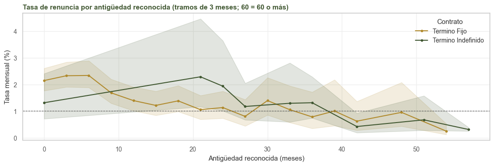
Nótese que en el término fijo la tasa se mantiene alrededor de 2,0-2,3 % mensual durante el primer año (0-2, 3-5 y 6-11 meses), baja a 1,28 % en el segundo año, a 1,10 % en el tercero y a 0,70 % entre los 3 y 5 años (en 60 meses o más, que se publica junto, 0,32 %). En el indefinido casi no hay personas nuevas, y sus primeros 24 meses se publican juntos porque por separado tendrían menos de cinco renuncias; en los tramos comparables la tasa del indefinido no es menor que la del fijo: 1,62 % en sus primeros dos años (frente a 1,28 % del fijo entre 12 y 23 meses) y 1,39 % frente a 1,10 % entre 24 y 35. Desde los 3 años las dos se parecen (0,70 % y 0,73 %) y en los 10 años o más el indefinido baja a 0,20 %. Buena parte de la brecha entre contratos es, por tanto, antigüedad: el riesgo cae con el tiempo en la empresa, y el fijo agrupa a los nuevos. El riesgo no es monótono al inicio (meseta en el primer año) y cae con fuerza después, lo que una transformación logarítmica aproxima y unos tramos capturan mejor.
3.3.8. Interacciones#
3.3.8.1. Contrato por línea de negocio#
g = tr.groupby(['linea', 'contrato'])[OBJETIVO].agg(filas='size', renuncias='sum')
g['tasa_%'] = 100 * g.renuncias / g.filas
tasa_lc = g['tasa_%'].unstack()
ok = ((g.renuncias >= 5) & (g.filas >= 300)).unstack()
ok = ok.apply(lambda r: r & r.all(), axis=1) # si una celda de la línea no se publica, la otra tampoco:
# el total de la línea es público y la delataría por resta
anot = np.where(ok, tasa_lc.round(2).astype(str) + ' %', '')
for linea in ok.index[ok.all(axis=1)]:
verificar(f'línea x contrato, {linea}', g.loc[linea], tr.loc[tr.linea == linea, OBJETIVO].sum())
fig, ax = plt.subplots(1, 2, figsize=(13, 4))
sns.heatmap(tasa_lc.where(ok), annot=anot, fmt='', cmap='oro', ax=ax[0], cbar=False,
linewidths=0.5, linecolor='white')
ax[0].set(title='Tasa de renuncia por línea y contrato\n(en blanco: la línea tiene una celda con < 5 renuncias)',
xlabel='', ylabel='')
filas = []
for linea, s in tr.groupby('linea'):
a = s[s.contrato == 'Termino Fijo'][OBJETIVO]
b = s[s.contrato == 'Termino Indefinido'][OBJETIVO]
if a.sum() >= 5 and b.sum() >= 5:
rr = a.mean() / b.mean()
ee = np.sqrt(1 / a.sum() - 1 / len(a) + 1 / b.sum() - 1 / len(b))
filas.append({'línea': linea, 'razón fijo / indefinido': rr, 'IC bajo': rr * np.exp(-1.96 * ee),
'IC alto': rr * np.exp(1.96 * ee)})
else:
filas.append({'línea': linea, 'razón fijo / indefinido': np.nan, 'IC bajo': np.nan, 'IC alto': np.nan})
rr_linea = pd.DataFrame(filas).set_index('línea')
d = rr_linea.dropna().sort_values('razón fijo / indefinido')
yy = range(len(d))
ax[1].errorbar(d['razón fijo / indefinido'], yy, xerr=[d['razón fijo / indefinido'] - d['IC bajo'],
d['IC alto'] - d['razón fijo / indefinido']], fmt='o', color=VERDE, ecolor=TINTA, lw=0.8)
ax[1].axvline(1, ls='--', c=GRIS, lw=0.8)
ax[1].set_yticks(list(yy))
ax[1].set_yticklabels(d.index)
ax[1].set_xscale('log')
ax[1].set(title='Razón de tasas término fijo / indefinido, por línea (IC 95 %)', xlabel='Razón (escala log)')
plt.tight_layout()
plt.show()
rr_linea.round(2)
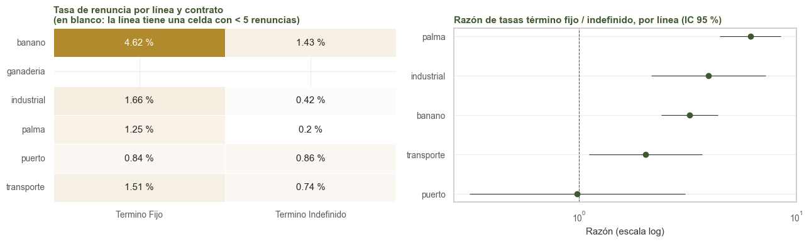
| línea | razón fijo / indefinido | IC bajo | IC alto |
|---|---|---|---|
| banano | 3.22 | 2.39 | 4.34 |
| ganaderia | NaN | NaN | NaN |
| industrial | 3.94 | 2.15 | 7.23 |
| palma | 6.14 | 4.45 | 8.48 |
| puerto | 0.99 | 0.31 | 3.09 |
| transporte | 2.03 | 1.12 | 3.70 |
Nótese que el efecto del contrato depende de la línea: el término fijo multiplica la tasa por 6,1 en palma (1,25 % frente a 0,20 %), por 3,9 en industrial, por 3,2 en banano y por 2,0 en transporte, mientras que en puerto no hay diferencia (0,84 % frente a 0,86 %; razón 0,99, IC de 0,31 a 3,1). El grupo de mayor riesgo es banano con término fijo, con 4,6 % mensual, 4,5 veces la media. Un modelo aditivo en la escala logit supone la misma razón en todas las líneas; los intervalos de palma (4,5 a 8,5) y de transporte (1,1 a 3,7) no se solapan, así que la interacción es real. En ganadería una de las dos celdas tiene menos de cinco renuncias; como el total de la línea es público, no se publica ninguna de las dos.
3.3.8.2. Antigüedad reconocida por contrato, y la variable más asociada de la historia#
v_int = TOP_HIST[0]
tramo3 = pd.cut(tr.antig_meses, [-1, 11, 35, 1e4], labels=['0-11', '12-35', '36+']).astype(str)
display(tabla_tramos(tr, tramo3, ['0-11', '12-35', '36+'])[['filas', 'renuncias', 'tasa_%']])
tercil = pd.qcut(tr[v_int], 3, duplicates='drop', labels=['bajo', 'medio', 'alto'])
t_int2 = tasa(tr, [tercil, tr.contrato])
for contrato in t_int2.index.get_level_values(1).unique():
verificar(f'tercil x contrato, {contrato}', t_int2.xs(contrato, level=1),
tr.loc[tr.contrato == contrato, OBJETIVO].sum())
t_int2.rename_axis([f'tercil de {v_int}', 'contrato']).round(2)
| contrato / tramo (meses) | filas | renuncias | tasa_% | |
|---|---|---|---|---|
| Termino Fijo | 0-11 | 15344 | 329 | 2.14 |
| 12-35 | 14670 | 178 | 1.21 | |
| 36+ | 5617 | 31 | 0.55 | |
| Termino Indefinido | 0-35 | 3051 | 45 | 1.47 |
| 36+ | 28734 | 105 | 0.37 |
| tercil de meses_en_funcion / contrato | filas | renuncias | tasa_% | |
|---|---|---|---|---|
| bajo | Termino Fijo | 21538 | 410 | 1.90 |
| Termino Indefinido | 1722 | 11 | 0.64 | |
| medio | Termino Fijo | 11267 | 119 | 1.06 |
| Termino Indefinido | 10570 | 74 | 0.70 | |
| alto | Termino Fijo | 2826 | 9 | 0.32 |
| Termino Indefinido | 19493 | 65 | 0.33 |
Nótese la interacción de antigüedad y contrato en la primera tabla: con menos de un año casi todo es término fijo (2,14 %); el indefinido con menos de 3 años (publicado en un solo tramo, porque su primer año tiene muy pocas renuncias) renuncia a 1,47 %, más que el fijo entre 1 y 3 años (1,21 %), y desde los 3 años el fijo vuelve a estar por encima (0,55 % frente a 0,37 %). El orden de los contratos se invierte según la antigüedad, algo que ningún modelo aditivo reproduce. La segunda tabla cruza el contrato con los terciles de los meses en la función, la variable de la historia más asociada: en el tercil bajo el fijo triplica al indefinido (1,90 % frente a 0,64 %), en el medio la brecha se reduce (1,06 % frente a 0,70 %) y en el alto desaparece (0,32 % frente a 0,33 %). De nuevo el efecto del contrato es sobre todo un efecto de ser nuevo.
3.3.8.3. Género y familia de cargo#
fam = tr.groupby('familia_cargo').agg(filas=('genero', 'size'),
mujeres=('genero', lambda s: 100 * (s == 'Femenino').mean()))
fam['personas mujeres'] = tr[tr.genero == 'Femenino'].groupby('familia_cargo').persona_id.nunique()
fam['personas hombres'] = tr[tr.genero == 'Masculino'].groupby('familia_cargo').persona_id.nunique()
fam = fam[(fam.filas >= 300) & (fam['personas mujeres'].fillna(0) >= 5) & (fam['personas hombres'].fillna(0) >= 5)]
fam = fam.sort_values('mujeres')
fig, ax = plt.subplots(figsize=(7, 4))
barras = ax.barh(fam.index, fam.mujeres, color=VERDE, **BORDE)
etiquetar(ax, barras, '{:.0f} %')
ax.set(title='Porcentaje de mujeres por familia de cargo\n(familias con >= 300 filas y >= 5 personas de cada género)',
xlabel='Mujeres (% de persona-mes)', ylabel='')
plt.tight_layout()
plt.show()
print(f'familias graficadas: {len(fam)} de {tr.familia_cargo.nunique()}')
print('tasa por género (%):', tasa(tr, 'genero')['tasa_%'].round(2).to_dict())
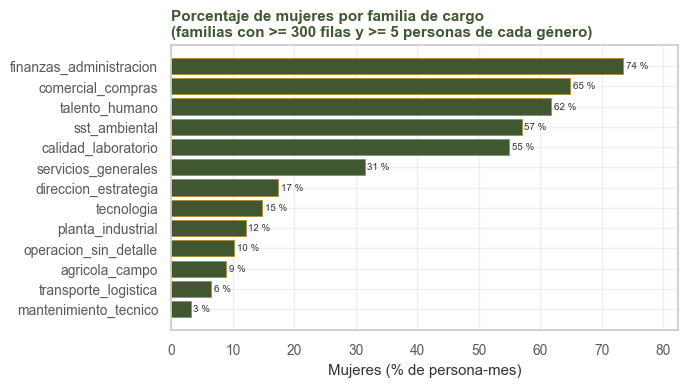
familias graficadas: 13 de 17
tasa por género (%): {'Femenino': 0.99, 'Masculino': 1.03}
Nótese que las mujeres se concentran en las familias administrativas (74 % en finanzas y administración, 65 % en comercial y compras) y casi no están en las operativas (3 % a 9 % en mantenimiento técnico, transporte y campo). La tasa por género es prácticamente igual (0,99 % en mujeres y 1,03 % en hombres) y el género no aporta información por sí solo (V de Cramér 0,001). Como las mujeres están en familias de riesgo bajo, esa igualdad bruta no descarta una diferencia dentro de cada familia; el modelo, que ajusta por familia y oficio, lo decide. Se grafican 13 de las 17 familias con dato: las demás tienen menos de 300 filas o menos de cinco personas de algún género.
3.4. Síntesis#
La tabla reúne, para las tres variables con más información mutua de cada bloque, las medidas de asociación del capítulo; debajo se imprime la lista de las variables de cola larga que recibirán el logaritmo con signo en el capítulo 7.
sintesis = pd.DataFrame({
'bloque': [BLOQUE[v] for v in PREDICTORAS],
'P(sup)': [mw['P(sup)'].get(v, np.nan) for v in PREDICTORAS],
'V de Cramér': [asoc['V de Cramér'].get(v, np.nan) for v in PREDICTORAS],
'IM % de H(y)': [imt.loc[v, '% de H(y)'] for v in PREDICTORAS],
'asimetría cruda': [tr[v].skew() if v in CONTINUAS else np.nan for v in PREDICTORAS],
'asimetría tras p1-p99': [asim_recortada(tr[v]) if v in CONTINUAS else np.nan for v in PREDICTORAS],
'% nulos': [100 * tr[v].isna().mean() for v in PREDICTORAS],
}, index=pd.Index(PREDICTORAS, name='variable'))
sintesis['cola larga'] = np.where(sintesis['asimetría tras p1-p99'].abs() > 2, 'sí', '')
sintesis['rango IM'] = sintesis['IM % de H(y)'].rank(ascending=False).astype('Int64')
top_sint = (sintesis.sort_values('rango IM').groupby('bloque').head(3)
.sort_values(['bloque', 'rango IM']))
print(f'cola larga (|asimetría| > 2 tras recorte p1-p99): {(sintesis["cola larga"] == "sí").sum()} | '
f'con la asimetría cruda serían {(sintesis["asimetría cruda"].abs() > 2).sum()} | '
f'con nulos: {(sintesis["% nulos"] > 0).sum()} '
f'({sum((sintesis["% nulos"] > 0) & ~sintesis.index.isin(CAT))} numéricas y '
f'{sum((sintesis["% nulos"] > 0) & sintesis.index.isin(CAT))} categóricas)')
COLA_LARGA = sorted(sintesis.index[sintesis['cola larga'] == 'sí'])
print('cola larga:', ', '.join(COLA_LARGA))
top_sint.round(3)
cola larga (|asimetría| > 2 tras recorte p1-p99): 39 | con la asimetría cruda serían 44 | con nulos: 63 (54 numéricas y 9 categóricas)
cola larga: auxilios_3m, bonif_ocasional_12m, bonificacion_otra_12m, bono_productividad_12m, bono_seleccionado_12m, cesantias_educacion_12m, dias_capacitacion_12m, dias_compensatorio_12m, dias_licencia_no_remunerada_12m_r2, dias_licencia_no_remunerada_3m_r2, dias_licencia_remunerada_12m, dias_vacaciones_compensadas_12m, dist_mediana_local, dominicales_12m, dominicales_1m, dominicales_3m, horas_extra_12m, horas_extra_1m, horas_extra_3m, licencias_no_remuneradas_12m, meses_con_bpr_12m, meses_desde_aumento_merito, n_ascensos_24m, n_movimientos_laterales_12m, pct_entradas_sin_salida_3m, pct_turnos_12h_3m, pct_turnos_nocturnos_3m, pct_ultimo_aumento_merito, personas_a_cargo, posicionamiento, posicionamiento_local, postulaciones_internas_12m, privacion_oficio_nivel, requisicion_promocion_12m, sabados_smmlv_12m, sabados_smmlv_1m, sabados_smmlv_3m, tamano_equipo_jefe, var_sueldo_smmlv_12m
| variable | bloque | P(sup) | V de Cramér | IM % de H(y) | asimetría cruda | asimetría tras p1-p99 | % nulos | cola larga | rango IM |
|---|---|---|---|---|---|---|---|---|---|
| cesantias_vivienda_historico | arraigo | 0.360 | NaN | 2.551 | 1.263 | 1.172 | 0.000 | 12 | |
| nacido_en_depto_sede | arraigo | 0.454 | NaN | 1.546 | NaN | NaN | 24.055 | 37 | |
| cesantias_vivienda_12m | arraigo | 0.424 | NaN | 0.914 | 1.444 | 0.968 | 0.000 | 58 | |
| antig_meses | atributos | 0.302 | NaN | 4.771 | 1.451 | 1.288 | 0.000 | 1 | |
| oficio | atributos | NaN | 0.075 | 4.002 | NaN | NaN | 2.467 | 3 | |
| ubicacion | atributos | NaN | 0.069 | 3.388 | NaN | NaN | 0.000 | 6 | |
| dias_licencia_no_remunerada_3m_r2 | ausencias | 0.585 | NaN | 2.001 | 18.653 | 3.040 | 0.000 | sí | 21 |
| dia_familia_12m | ausencias | 0.392 | NaN | 1.610 | -0.674 | -0.684 | 0.000 | 33 | |
| dias_licencia_no_remunerada_12m_r2 | ausencias | 0.556 | NaN | 1.048 | 19.484 | 2.990 | 0.000 | sí | 54 |
| meses_desde_cambio_contrato | contrato | 0.329 | NaN | 4.049 | 1.422 | 1.401 | 0.000 | 2 | |
| meses_al_vencimiento | contrato | 0.500 | NaN | 2.842 | 0.775 | 0.745 | 47.148 | 10 | |
| n_renovaciones | contrato | 0.527 | NaN | 0.867 | 1.864 | 1.833 | 0.000 | 59 | |
| ingreso_vs_pactado_3m | ingreso_relativo | 0.368 | NaN | 2.395 | 0.553 | 0.566 | 2.413 | 14 | |
| cambio_ingreso_3m_vs_9m | ingreso_relativo | 0.466 | NaN | 2.283 | 3.332 | 0.540 | 17.471 | 17 | |
| volatilidad_ingreso_12m | ingreso_relativo | 0.538 | NaN | 1.680 | 6.479 | 1.373 | 12.070 | 29 | |
| meses_con_extras_12m | jornada | 0.373 | NaN | 2.255 | -0.021 | -0.021 | 2.407 | 19 | |
| jornada_vs_pago | jornada | NaN | 0.051 | 1.890 | NaN | NaN | 44.403 | 24 | |
| turnos_largos_sin_pago | jornada | 0.572 | NaN | 1.782 | NaN | NaN | 44.403 | 27 | |
| var_sueldo_smmlv_12m | salario_relativo | 0.404 | NaN | 2.863 | 4.358 | 2.289 | 26.866 | sí | 9 |
| pct_ultimo_aumento_merito | salario_relativo | 0.478 | NaN | 2.261 | 20.857 | 3.209 | 44.936 | sí | 18 |
| meses_desde_aumento_merito | salario_relativo | 0.476 | NaN | 2.061 | 3.044 | 3.043 | 44.936 | sí | 20 |
| meses_en_posicion | trayectoria | 0.330 | NaN | 3.726 | 1.346 | 1.339 | 0.000 | 4 | |
| meses_en_funcion | trayectoria | 0.321 | NaN | 3.692 | 0.960 | 0.515 | 0.000 | 5 | |
| tamano_equipo_jefe | trayectoria | 0.470 | NaN | 1.535 | 2.385 | 2.379 | 36.079 | sí | 38 |
| meses_desde_vacaciones | vacaciones | 0.458 | NaN | 2.787 | -0.061 | -0.061 | 34.616 | 11 | |
| dias_vacaciones_pendientes | vacaciones | 0.377 | NaN | 2.346 | 1.563 | 1.364 | 0.000 | 15 | |
| periodos_vacaciones_pendientes | vacaciones | 0.384 | NaN | 2.301 | 1.615 | 1.453 | 0.000 | 16 |
Variables prometedoras, por bloque (entre paréntesis, P(sup) o V de Cramér, y la información mutua en % de la entropía):
Atributos. La antigüedad reconocida es la predictora más fuerte del libro (P(sup) 0,302; 4,8 %), seguida de oficio, ubicación, edad y sociedad, y del contrato (razón fijo/indefinido 3,2). El género no aporta nada (V 0,001).
Contrato. Meses desde el último cambio de contrato (0,329; 4,0 %) y meses al vencimiento, cuya información está en el nulo (indefinido).
Trayectoria. Meses en la posición y en la función (0,33 y 0,32), muy correlacionados con la antigüedad (Spearman 0,84-0,85). Jefatura, ascensos y movimientos laterales no tienen señal.
Salario relativo. Variación del sueldo en mínimos, aumentos por mérito, privación relativa y Gini del oficio, situación frente al mínimo y tipo de salario (destajo 1,8 veces el básico).
Jornada. Meses con extras en 12 meses (0,373), jornada frente a pago de extras, marcar en el biométrico (2,1 veces) y turnos largos sin pago (2,1 veces). Los montos de horas extra y dominicales del último mes casi no informan.
Ingreso relativo. Ingreso frente al pactado (0,368) y cambio y volatilidad del ingreso; los bonos puntuales (fin de año, seleccionado, ocasional) no tienen señal.
Ausencias. Días de licencia no remunerada de los tres meses previos (0,585), la señal de riesgo más clara que no es antigüedad, y el día de la familia.
Vacaciones. Meses desde las últimas vacaciones (en el nulo), días y periodos pendientes, y los dos periodos acumulados (razón 0,18).
Arraigo. Retiros históricos de cesantías para vivienda (0,360) y haber nacido en el departamento de la sede (razón 0,68).
Decisiones de preprocesamiento para el capítulo 7 (todas tomadas con el entrenamiento):
Métrica y validación. PR-AUC como métrica principal (piso 0,0102), captura en el 10 % de mayor riesgo de cada mes como métrica operativa, ROC-AUC como complemento; validación en los ocho pliegues temporales mensuales, sin estratificar ni remuestrear.
Colas largas. Recorte de las numéricas no binarias a sus percentiles 1 y 99 del entrenamiento de cada pliegue, y logaritmo con signo en las que siguen con |asimetría| > 2 después del recorte: 39 en el entrenamiento completo, las de la lista de arriba (con la asimetría cruda serían 44).
Antigüedad. Además del recorte, en logaritmo, o por tramos (0-11, 12-23, 24-35, 36-59, 60+ meses), porque el riesgo tiene una meseta el primer año y luego cae.
Nulos. En las 54 numéricas con nulos, imputación por la mediana del pliegue más un indicador de faltante; en las categóricas con nulos, el nulo es una categoría más. El nulo es estructural e informativo (primer mes del episodio, destajo, no marcar, indefinido, sin vacaciones aún), no aleatorio. Ojo con
tamano_equipo_jefe: su cobertura sube de cerca del 50 % al 80 % en el segundo semestre de 2025, así que su indicador de faltante cambia de significado en el tiempo y su coeficiente debe revisarse entre pliegues.Categóricas. One-hot con
min_frequency=300yhandle_unknown='infrequent_if_exist', el nulo como categoría yestado_gestion_tiemposcomo categórica.Redundancias. Sociedad y línea (V 1,00), familia y oficio (0,995) y las variables de tiempo (Spearman > 0,7 entre sí) no se eliminan aquí: se dejan a la regularización, con una rejilla de C que llegue a 1e-4 y L1 frente a L2, y el capítulo 4 las cuantifica con el VIF.
Interacciones. Contrato por línea (la razón fijo/indefinido va de 0,99 en puerto a 6,1 en palma) y contrato por tramo de antigüedad (el orden de los contratos se invierte entre 1 y 3 años); se evalúan como términos explícitos en la validación, no se incluyen por defecto.
Normalidad. No se transforma buscando normalidad (la logística no la supone); las transformaciones buscan limitar la influencia de las colas y linealizar la relación en el logit.